موبائل شاپ پاکستان میں موبائل فون کی دکان چلانے کا سافٹ ویئر ہے۔ یہ آپ کا اسٹاک، آپ کی بِکری، آپ کی خریداری، آپ کا ادھار کھاتہ، آپ کی مرمت اور آپ کے دن کا حساب ایک ہی جگہ رکھتا ہے، آپ کے فون پر یا آپ کے کمپیوٹر پر۔
یہ اصل دکانداروں کے ساتھ مل کر بنایا گیا ہے۔ بٹن بڑے ہیں، قدم چھوٹے ہیں، اور جمع تفریق ایپ خود کرتی ہے۔ اسے چلانے کے لیے کمپیوٹر کا کچھ بھی جاننا ضروری نہیں۔
یہ کس کے لیے ہے
وہ دکانیں جو ڈیلروں سے نئے باکس پیک فون خریدتی اور بیچتی ہیں۔
وہ دکانیں جو آنے والے گاہکوں سے استعمال شدہ فون خریدتی اور بیچتی ہیں۔
وہ دکانیں جو ٹیبلٹ، سمارٹ واچ اور ایکسیسریز (چارجر، کیبل، کور، گلاس، ہینڈز فری، پاور بینک) بھی بیچتی ہیں۔
وہ دکانیں جو مرمت کرتی ہیں، دکان میں یا باہر کی لیب سے۔
مالک، جو گھر بیٹھے پورا کاروبار دیکھنا چاہتا ہے، اور عملہ، جو کاؤنٹر پر کام کرتا ہے۔
اس کتاب میں آنے والے دکان کے چند الفاظ
لفظ
مطلب
ادھار
گاہک فون ابھی لے اور پیسے بعد میں دے، یا آپ ڈیلر سے فون لیں اور پیسے اسے بعد میں دیں۔
کھاتہ
ایک بندے کا چلتا حساب: اس نے آپ کو کتنے دینے ہیں، یا آپ نے اسے کتنے دینے ہیں۔
گلہ
کاؤنٹر پر پیسوں کی دراز۔
حساب
دن کا حساب: کیا آیا، کیا گیا، کیا بچا۔
قسط
گاہک کچھ پیسے ایڈوانس دیتا ہے اور باقی ہر مہینے تھوڑے تھوڑے۔
لین دین
بغیر بل کے دیے یا لیے پیسے، مثلاً ساتھ والے دکاندار کو ادھار۔
PTA
پاکستان ٹیلی کمیونیکیشن اتھارٹی۔ PTA منظور فون پاکستانی سم پر ہمیشہ چلتا ہے؛ نان PTA فون صرف کچھ وقت چلتا ہے؛ JV فون کی منظوری پیچ والی، غیر سرکاری ہوتی ہے۔
IMEI
فون کی پہچان کا 15 ہندسوں کا نمبر۔ دیکھنے کے لیے *#06# ملائیں، یا ڈبے سے پڑھ لیں۔
CNIC
قومی شناختی کارڈ۔ اس کا 13 ہندسوں کا نمبر یہ جانچنے کے لیے لیا جاتا ہے کہ استعمال شدہ فون آپ کو کس نے بیچا۔
یہ دوسروں سے الگ کیوں ہے
اینڈرائیڈ ایپ۔ اسے دکان کے فون پر انسٹال کریں۔ کیمرہ ڈبے پر لکھا IMEI اسکین کرتا ہے اور CNIC کارڈ خود پڑھ لیتا ہے۔ آپ فنگر پرنٹ سے لاگ اِن کر سکتے ہیں۔
آن لائن اور آف لائن۔ کسی بھی براؤزر میں کھولیں، فون، لیپ ٹاپ یا کمپیوٹر پر، اور گھر بیٹھے اپنی دکان لائیو دیکھیں۔ انٹرنیٹ چلا جائے تو بِکری فون میں محفوظ ہو جاتی ہے اور انٹرنیٹ آتے ہی چلی جاتی ہے۔ جس دکان میں انٹرنیٹ بالکل نہ ہو وہ اسے ایک Windows کمپیوٹر پر چلا سکتی ہے۔
استعمال شدہ فون کی تصدیق۔ استعمال شدہ فون خریدنے سے پہلے ایپ بیچنے والے کا CNIC چیک کرنے، تصویریں لینے، eGadget اور PTA چیک کرنے، اور یہ دیکھنے میں مدد کرتی ہے کہ فون پر کوئی iCloud یا Google لاک تو نہیں لگا۔ جس فون کی جانچ ابھی باقی ہو وہ غلطی سے نہیں بک سکتا۔
بیچنے والے کی دستخط شدہ رضامندی۔ بیچنے والا اقرار نامے پر اسکرین پر انگلی سے دستخط کرتا ہے۔ اس کے دستخط، اس کے CNIC کی تصویر اور فون کا IMEI ایک ساتھ محفوظ رہتے ہیں، اور دستخط اقرار نامے پر پرنٹ ہوتے ہیں۔
آپ کی زبان۔ پوری ایپ اردو، رومن اردو یا انگریزی میں چلتی ہے، ایک وقت میں ایک زبان۔ بل اور WhatsApp پیغامات دکان کی زبان میں جاتے ہیں۔
ہر چیز پر "?"۔ ہر خانے، کارڈ اور ٹیب کے ساتھ ایک چھوٹا سوالیہ نشان ہے۔ اسے دبائیں اور پڑھیں کہ اس کا مطلب کیا ہے، روپوں میں دکان کی مثال کے ساتھ۔
عہدے۔ مالک طے کرتا ہے کہ کون کیا کر سکتا ہے۔ سیلز مین بیچ اور خرید سکتا ہے مگر خرید قیمت یا منافع کبھی نہیں دیکھتا۔
دکان کا مکمل آڈٹ۔ ہر روپیہ اور ہر فون اپنے بل، بندے اور وقت تک ڈھونڈا جا سکتا ہے۔ کچھ بھی کبھی ڈیلیٹ نہیں ہوتا؛ غلطی نئی انٹری سے ٹھیک ہوتی ہے، اور پرانی نظر آتی رہتی ہے۔
سارے حصے ایک نظر میں
حصہ
کیا کرتا ہے
بیچیں
نقد، ادھار، قسط اور کچھ پیسے والی بِکری، رسید پرنٹ، PDF اور WhatsApp پر۔
اسٹاک ڈالیں
ڈیلر یا گاہک سے فون، ٹیبلٹ، گھڑیاں اور ایکسیسریز خریدیں۔
شناخت چیک
استعمال شدہ فون کے لیے CNIC، تصویریں، eGadget، PTA، لاک چیک اور بیچنے والے کے دستخط۔
ادھار
کس نے آپ کو دینے ہیں اور آپ نے کس کو دینے ہیں، WhatsApp یاد دہانی کے ساتھ۔
حساب
آج کی بِکری، ہاتھ میں نقد، ادھار پر پیسے، خرچے اور منافع۔
اسٹاک
دکان کا ہر فون، اس کی مالیت، اس کی پوری ہسٹری اور بارکوڈ والا اسٹیکر۔
واپسی اور ایکسچینج
گاہک فون واپس لائے، یا پرانا فون دے کر نیا لے۔
مرمت
جاب کارڈ، مرمت کے اسٹیکر اور مرمت کی لیبیں۔
ایکسیسریز
گنتی والی چیزیں، پیس، درجن یا ڈبے میں خریدی، پیس میں بیچی۔
قسطیں
ایڈوانس، ماہانہ رقم، ضامن اور دیر کی یاد دہانی۔
امانت
دوسری دکانوں کو دیے یا ان سے لیے فون۔
رپورٹس اور دکان کا آڈٹ
منافع، سب سے زیادہ بکنے والے، قیمتیں، عملے کا کام، اور کسی بھی مدت کا پورا کاروبار۔
عملہ
مالک، منیجر، سیلز مین اور ٹیکنیشن، حاضری کے ساتھ۔
2. ایپ حاصل کرنا
موبائل شاپ کئی طریقوں سے چلا سکتے ہیں۔ آپ کا ڈیٹا سب میں ایک ہی ہے، کیونکہ وہ ایک فون پر نہیں بلکہ سرور پر محفوظ رہتا ہے۔
براؤزر میں
اپنے فون یا کمپیوٹر پر Chrome کھولیں۔
https://mobileshop.oopsolutions.com پر جائیں۔
لاگ اِن کریں (باب 3 دیکھیں)۔
شروع کرنے کا یہ سب سے جلدی طریقہ ہے۔ یہ لیپ ٹاپ پر بھی چلتا ہے، جہاں کام سائیڈ مینو میں آتے ہیں اور آپ کی بورڈ کے بٹن استعمال کر سکتے ہیں: F2 بیچیں، F3 اسٹاک ڈالیں، F4 ادھار، F6 اسٹاک، F7 مرمت، F8 خرچہ، F9 واپسی۔
Chrome سے ایپ کی طرح انسٹال کریں
اپنے Android فون پر Chrome میں https://mobileshop.oopsolutions.com کھولیں۔
Chrome کا مینو دبائیں (اوپر دائیں تین نقطے)۔
Install app دبائیں (کچھ فونز پر Add to Home screen لکھا ہوتا ہے)۔
Install دبائیں۔ آپ کی ہوم اسکرین پر Mobile Shop کا آئیکن آ جائے گا۔ اسے کسی بھی دوسری ایپ کی طرح کھولیں۔
Android ایپ (APK فائل)
Android ایپ میں اسکین کے لیے فون کا کیمرہ اور لاگ اِن کے لیے فون کا فنگر پرنٹ ملتا ہے۔
Android فون پر https://mobileshop.oopsolutions.com/app.apk کھولیں۔ آپ لاگ اِن صفحے پر اینڈرائیڈ ایپ ڈاؤن لوڈ کریں بھی دبا سکتے ہیں، یا آپ کا پرووائیڈر فائل WhatsApp پر بھیج سکتا ہے۔
ڈاؤن لوڈ ہوئی فائل کھولیں۔
پہلی بار Android کہہ سکتا ہے کہ اس ایپ کو ایپس انسٹال کرنے کی اجازت نہیں۔ Settings دبائیں، Allow from this source آن کریں، پھر واپس آئیں۔
Install دبائیں، پھر Open۔
جب نیا ورژن آئے تو اسے پرانے کے اوپر انسٹال کر دیں۔ آپ کا ڈیٹا رہتا ہے۔
بغیر انٹرنیٹ کے کام
مارکیٹ میں انٹرنیٹ ہمیشہ اچھا نہیں ہوتا۔ موبائل شاپ اس کے لیے تیار ہے۔
جب انٹرنیٹ چلا جائے تو ایک پٹی پر لکھا آتا ہے: "انٹرنیٹ نہیں ہے۔ بِکری، اسٹاک، ادائیگی اور خرچے اس فون میں محفوظ ہو رہے ہیں اور انٹرنیٹ آتے ہی بھیج دیے جائیں گے۔"
کام جاری رکھیں۔ آپ کی ہر انٹری پر لکھا آتا ہے "اس فون میں محفوظ ہو گیا۔ انٹرنیٹ آتے ہی بھیج دیا جائے گا۔"
ایک چھوٹا گنتی والا نشان بتاتا ہے کہ کتنی انٹریاں انتظار میں ہیں، مثلاً 2 بھیجنے کے انتظار میں۔ اسے دبائیں تو بھیجنے کے انتظار میں کی لسٹ کھلتی ہے۔
انٹرنیٹ واپس آنے پر ایپ انہیں اسی ترتیب سے، ہر ایک کو ایک بار، بھیج دیتی ہے۔ نہ کوئی بِکری گم ہوتی ہے نہ کوئی دو بار جاتی ہے۔
ایک Windows کمپیوٹر پر، بالکل بغیر انٹرنیٹ کے
جس دکان میں انٹرنیٹ قابلِ بھروسہ نہ ہو، وہاں پرووائیڈر Mobile Shop ایک Windows کمپیوٹر پر انسٹال کر سکتا ہے۔ آپ اسے Desktop سے کھولیں اور معمول کے مطابق کام کریں۔ سب کچھ اسی کمپیوٹر پر رہتا ہے، اور گھڑی کے پاس چھوٹے آئیکن میں Backup now ہے جو تاریخ والی کاپی بنا دیتا ہے۔ اپنے پرووائیڈر سے کہیں کہ یہ سیٹ کر دے۔
3. لاگ اِن
آپ کی دکان سافٹ ویئر بنانے والی OOP Solutions کھولتی ہے۔ آپ کے لیے "دکان بنائیں" کا کوئی بٹن نہیں۔ جب آپ کی دکان تیار ہو جائے تو آپ کو WhatsApp پر ایک موبائل نمبر اور ایک پاس ورڈ ملتا ہے۔ اگر کسی اور دکان کے لیے ایپ چاہیے تو لاگ اِن صفحے پر اپنی دکان کے لیے یہ ایپ چاہیے؟ ہم سے رابطہ کریں دبائیں۔
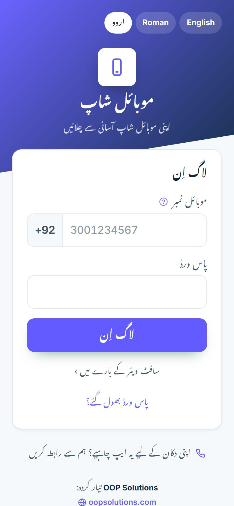
تصویر 1: لاگ اِن صفحہ
پاس ورڈ سے لاگ اِن
اوپر اپنی زبان چنیں: اردو، Roman یا English۔
موبائل نمبر میں +92 پہلے سے لکھا ہے۔ باقی نمبر شروع کے 0 کے بغیر لکھیں۔ 0300 1234567 کے لیے 3001234567 لکھیں۔
اپنا پاس ورڈ لکھیں۔
لاگ اِن دبائیں۔
پاس ورڈ بھول گئے
لاگ اِن فارم کے نیچے پاس ورڈ بھول گئے؟ دبائیں۔
چیک کریں کہ آپ کا موبائل نمبر صحیح ہے۔
واٹس ایپ پر کوڈ بھیجیں دبائیں۔ اس نمبر پر 6 ہندسوں کا کوڈ آ جائے گا۔
کوڈ لکھیں اور کوڈ کی تصدیق دبائیں۔
نیا پاس ورڈ چنیں۔ آپ لاگ اِن ہو جائیں گے۔
کوڈ 10 منٹ تک چلتا ہے۔ اگر WhatsApp دستیاب نہ ہو تو اس کی جگہ درخواست بھیجیں۔ عملے کے کسی بندے کی درخواست دکان کے مالک کے پاس جاتی ہے، جو مزید ← عملہ ← وہ بندہ ← نیا پاس ورڈ میں نیا پاس ورڈ رکھ دیتا ہے۔ مالک کی اپنی درخواست سافٹ ویئر پرووائیڈر کے پاس جاتی ہے۔
فوری پن
اپنے فون پر پن پاس ورڈ سے جلدی ہے۔
ایک بار پاس ورڈ سے لاگ اِن کریں۔
مزید ← فوری پن بنائیں دبائیں۔
اپنا پاس ورڈ لکھیں، پھر 4 سے 6 ہندسوں کا پن، مثلاً 4821۔
محفوظ کریں دبائیں۔
اگلی بار یہ فون آپ کے نام کے ساتھ اپنا پن درج کریں والی اسکرین کھولے گا۔ ہندسے دبائیں اور آپ اندر۔
پن بھول گئے؟ پاس ورڈ استعمال کریں آپ کو پاس ورڈ والی اسکرین پر واپس لے جاتا ہے۔
دوسرا اکاؤنٹ استعمال کریں سے عملے کا کوئی دوسرا بندہ اسی فون پر لاگ اِن کر سکتا ہے۔
فنگر پرنٹ لاگ اِن
ایک بار پاس ورڈ سے لاگ اِن کریں۔
مزید ← فنگر پرنٹ لاگ اِن ← اس فون کے لیے آن کریں دبائیں۔
فنگر پرنٹ سینسر کو چھوئیں۔
اگلی بار لاگ اِن صفحے پر فنگر پرنٹ سے لاگ اِن آئے گا۔ ایک بار چھوئیں اور آپ اندر۔ لیپ ٹاپ پر یہ اس ڈیوائس کا چہرہ یا Windows Hello استعمال کر سکتا ہے۔ آپ کا فنگر پرنٹ کبھی فون سے باہر نہیں جاتا۔
مالک اسے ہمیشہ استعمال کر سکتا ہے۔ عملہ اسے تب ہی استعمال کر سکتا ہے جب مالک سیٹنگز میں آن کر دے کہ عملہ فنگر پرنٹ سے لاگ اِن کر سکتا ہے۔
اسی کارڈ میں وہ سارے فون لکھے ہوتے ہیں جو اس طرح لاگ اِن کر سکتے ہیں۔ ہٹائیں کسی ایک کو فوراً روک دیتا ہے۔
لاگ آؤٹ
اوپر دائیں کونے میں اپنا پروفائل بٹن (آپ کے نام کے پہلے حروف) دبائیں، پھر لاگ آؤٹ۔ لاگ آؤٹمزید کے بالکل نیچے بھی ہے۔ جس فون کو دوسرے لوگ بھی استعمال کرتے ہوں اس پر ہمیشہ لاگ آؤٹ کریں۔
4. ہوم اسکرین، مزید مینو اور "?" مدد
ہوم اسکرین
لاگ اِن کے بعد ہوم اسکرین آتی ہے۔ جو کام آپ سب سے زیادہ کرتے ہیں وہ یہیں سے شروع ہوتے ہیں۔
تصویر 2: ہوم اسکرین
اوپر سے نیچے تک:
حصہ
کیا کرتا ہے
اوپر کی پٹی
دکان کا نام، پھر English (زبان)، پیغامات، مزید اور آپ کا پروفائل بٹن (آپ کے نام کے پہلے حروف)۔
سلام
آپ کے نام کے ساتھ "صبح بخیر"، "السلام علیکم" یا "شام بخیر"، اور آج آپ کی دکان کا حال۔
تلاش کا خانہ
IMEI، فون کا ماڈل یا کسی بندے کا نام لکھیں اور تلاش دبائیں۔ اسکین کیمرے سے بارکوڈ پڑھتا ہے۔
بیچیں
فون بیچیں، نقد یا ادھار (باب 8)۔
اسٹاک ڈالیں
آپ نے نیا یا استعمال شدہ فون خریدا (باب 6)۔
دوسرے کام
ادھار، اسٹاک، مرمت، واپسی، بل اور خرچہ۔
ایک نظر میں
آج، کل، ہفتہ، اس مہینے یا تاریخ سے تاریخ چنیں۔ کارڈز میں بِکری (اور بکے ہوئے فون)، منافع، نقد اور بینک، مجھے لینے ہیں، مجھے دینے ہیں، اسٹاک میں فون، خرچے اور پچھلے 7 دن کا چارٹ آتا ہے۔ پورے حساب کے لیے سب دیکھیں دبائیں۔
توجہ طلب
آپ کے انتظار میں کام، مثلاً "2 فون: شناختی کارڈ چیک باقی" یا "1 مرمت کے کام کھلے"۔ کوئی لائن دبائیں اور سیدھا وہاں پہنچیں۔
نیچے ایک پٹی ہے جس میں ہوم، اسٹاک، ادھار، حساب اور مزید ہیں۔ یہ ہر اسکرین پر ہوتی ہے، اس لیے آپ ہمیشہ واپس آ سکتے ہیں۔
پروفائل مینو
اوپر دائیں کونے میں اپنا پروفائل بٹن دبائیں (اس پر آپ کے نام کے پہلے حروف ہوتے ہیں)۔ ایک چھوٹا مینو کھلتا ہے جس میں آپ کا نام، موبائل نمبر، عہدہ (مثلاً مالک) اور وہ دکان ہوتی ہے جس میں آپ کام کر رہے ہیں۔ اس کے نیچے:
میری پروفائل: مزید کھولتا ہے، جہاں آپ کی زبان، فوری پن اور فنگر پرنٹ لاگ اِن ہے۔
دکان کی سیٹنگز (صرف مالک)۔
ظاہری شکل: ایپ کیسی دکھے (باب 5)۔
ڈارک / لائٹ (فون پر): ایک ٹچ میں اسکرین کا رنگ بدلیں۔ لیپ ٹاپ پر یہ بٹن اوپر کی پٹی میں ہے۔
لاگ آؤٹ۔
بند کرنے کے لیے مینو سے باہر دبائیں، یا کمپیوٹر پر Esc دبائیں۔
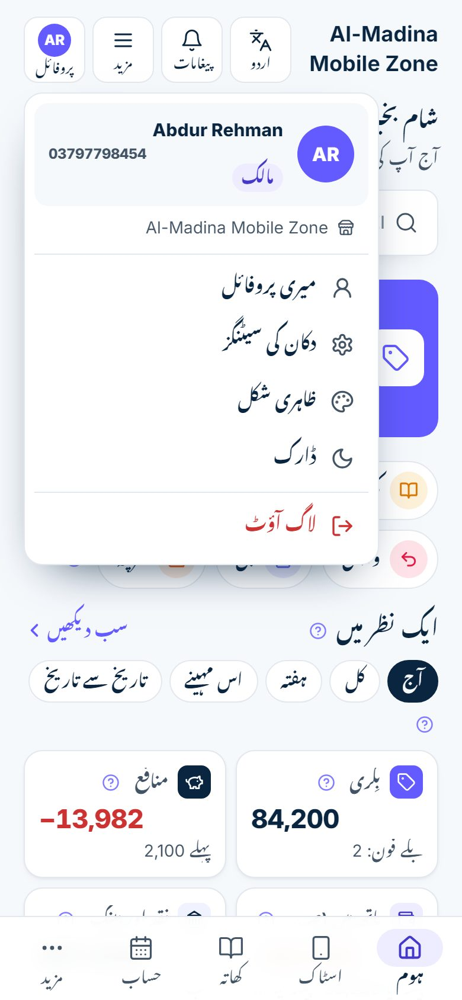
تصویر 3: پروفائل مینو
کہیں سے بھی اسکین
اگر آپ کے پاس USB یا Bluetooth بارکوڈ اسکینر ہے تو اسے لگا دیں۔ کوئی سیٹنگ نہیں چاہیے۔ ہوم اسکرین پر کسی فون کا اسٹیکر اسکین کریں اور اس کا صفحہ کھل جائے گا۔ کوئی انجان کوڈ اسکین کریں تو ایپ اسے شامل کرنے کا پوچھتی ہے۔ فون کا کی بورڈ اردو میں ہو تب بھی اسکینر چلتا ہے۔
مزید مینو
ایپ کا ہر حصہ گروپوں میں دیکھنے کے لیے مزید دبائیں (اوپر دائیں، یا نیچے)۔
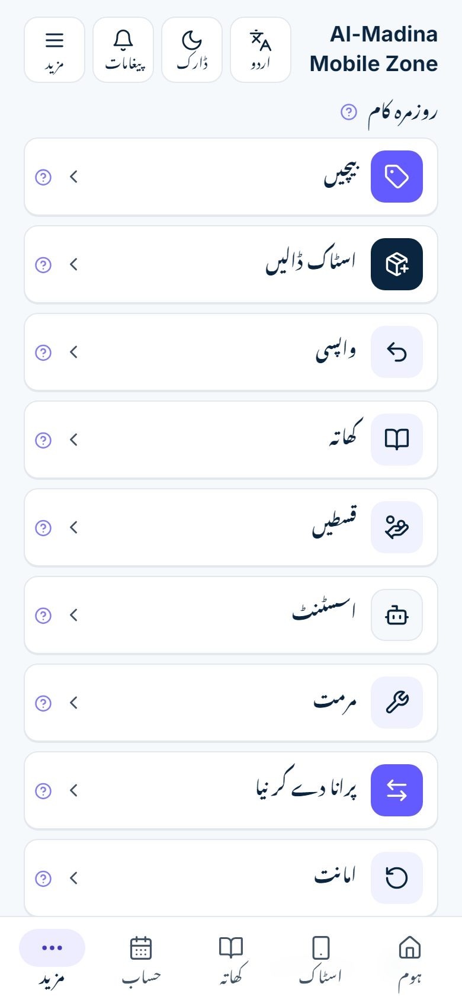
تصویر 4: مزید مینو
روزمرہ کام: بیچیں، اسٹاک ڈالیں، واپسی، ادھار، قسطیں، اسسٹنٹ، مرمت، پرانا دے کر نیا، امانت، دن کا حساب۔
اسٹاک: اسٹاک لسٹ، دکان میں اسٹاک، ایکسیسریز، IMEI تلاش، پرانا اسٹاک، بلک ایکسل، اسٹاک گنتی، برانڈ اور ماڈل۔
ریکارڈ: بِکری، خریداری، بل، ملے / دیے پیسوں اور واپسی کی لسٹیں۔
حساب اور رپورٹس: نقد اور بینک، خرچے، دن بند کریں، رپورٹس اور دکان کا آڈٹ۔
دکان اور عملہ: دکان کی سیٹنگز، عملہ، لوگ اور کھاتہ، اطلاعات، سافٹ ویئر فیس۔
آپ کو صرف وہی دکھے گا جس کی آپ کے عہدے کو اجازت ہے۔ مثلاً سیلز مین کو رپورٹس نہیں دکھتیں۔
ہر خانے اور کارڈ پر "?" مدد
دکانداروں نے ہمیں بتایا کہ سافٹ ویئر کے کچھ الفاظ سمجھنا مشکل ہوتا ہے۔ اس لیے ہر اسکرین کے نام، ہر ٹیب، ہر کارڈ اور ہر خانے کے ساتھ ایک چھوٹا ? ہے۔
جو چیز سمجھ نہ آئے اس کے ساتھ والا ? دبائیں۔
نیچے سے ایک شیٹ کھلتی ہے جس کا عنوان ہے یہ کیا ہے؟
اس میں چیز کا نام، اس کے بارے میں ایک دو آسان جملے، اور روپوں میں دکان کی اصل مثال والا مثال کا خانہ ہوتا ہے۔
واپس جانے کے لیے بند کریں دبائیں۔ اسکرین پر کچھ نہیں بدلتا۔
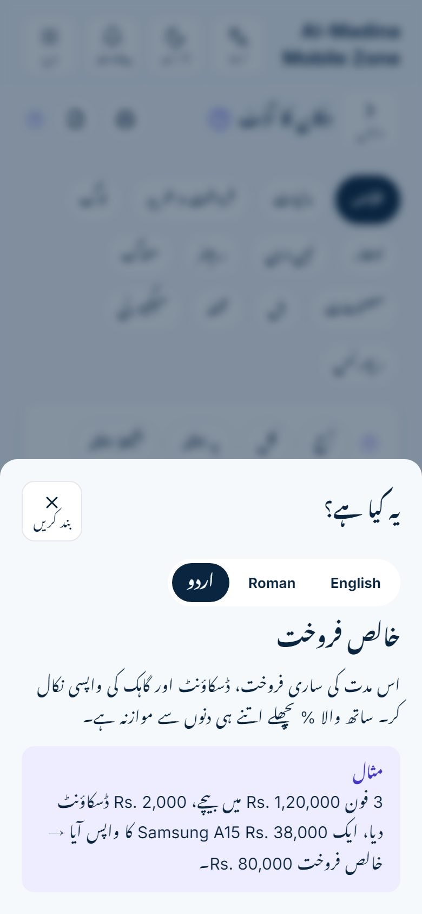
تصویر 5: اپنی زبان کے بٹن والی "?" مدد کی شیٹ
مدد کی شیٹ میں اوپر اس کا اپنا زبان کا بٹن ہے: اردو، Roman اور English۔ یہ صرف وضاحت بدلتا ہے، ایپ نہیں۔ یوں سیلز مین ایپ انگریزی میں رکھ کر مدد اردو میں پڑھ سکتا ہے، یا اس کا الٹ۔ ایپ اس کی آخری پسند یاد رکھتی ہے۔
مثال: آپ دکان کا آڈٹ دیکھ رہے ہیں اور نہیں جانتے کہ خالص بکری کا مطلب کیا ہے۔ اس کا ? دبائیں۔ لکھا آتا ہے: مدت کی ساری بِکری، رعایت اور گاہکوں کی واپسی نکال کر۔ مثال: 3 فون Rs. 1,20,000 میں بیچے، Rs. 2,000 رعایت دی، ایک Samsung A15 Rs. 38,000 کا واپس آیا، تو خالص بکری Rs. 80,000 ہے۔
5. زبان، تھیم اور انداز
زبان
ایپ ایک وقت میں ایک زبان دکھاتی ہے۔ اردو موڈ میں سب کچھ اردو میں، دائیں سے بائیں۔ انگریزی موڈ میں سب کچھ انگریزی میں۔ ہندسے ہر زبان میں ہمیشہ 0 سے 9 لکھے جاتے ہیں۔
اوپر کی پٹی میں زبان کا بٹن دبائیں (اس پر موجودہ زبان لکھی ہوتی ہے، مثلاً English)۔
اردو، Roman Urdu یا English چنیں۔
آپ اسے مزید ← زبان میں بھی بدل سکتے ہیں۔ ہر بندہ اپنے فون پر اپنی زبان چن سکتا ہے۔
WhatsApp پیغامات دکان کی زبان میں جاتے ہیں، جو مالک دکان کی سیٹنگز میں رکھتا ہے۔ پرنٹ اور ڈاؤن لوڈ ہونے والے کاغذات (رسید، بل، اقرار نامے، جاب شیٹ، رپورٹس) کے لیے پرنٹ اور شیئر کے بٹنوں کے بالکل اوپر دستاویز کی زبان کا بٹن ہے: English یا اردو۔ شروع میں English چنا ہوتا ہے؛ اردو کاغذ کے لیے اردو دبائیں۔ ایپ بند کرنے تک آپ کی پسند رہتی ہے۔
ظاہری شکل (تھیم، ڈیزائن، رنگ، لکھائی کا سائز)
ظاہری شکلپروفائل مینو سے، مزید سے یا ڈیش بورڈ کے بٹن سے کھولیں۔ ہر تبدیلی فوراً نظر آتی ہے اور صرف اسی فون یا کمپیوٹر پر محفوظ رہتی ہے۔ ہر سیلزمین اپنا فون اپنی پسند سے رکھ سکتا ہے؛ آپ کا ڈیٹا کبھی نہیں بدلتا۔
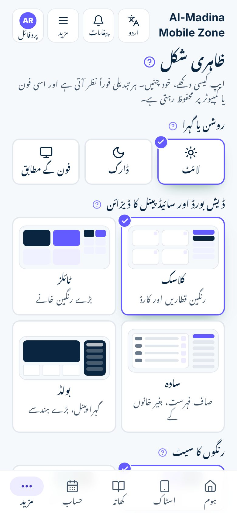
تصویر 6: ظاہری شکل کا صفحہ
حصہ
کیا کرتا ہے
روشن یا گہرا
لائٹ، ڈارک یا فون کے مطابق (فون کی اپنی سیٹنگ کے ساتھ چلتا ہے)۔ پروفائل مینو میں ڈارک / لائٹ یہی کام ایک ٹچ میں کرتا ہے۔
ڈیش بورڈ اور سائیڈ پینل کا ڈیزائن
کلاسک (رنگین قطاریں اور کارڈ، پہلے جیسا)، ٹائلز (بڑے رنگین خانے)، سادہ (صاف فہرست، بغیر خانوں کے) یا بولڈ (گہرا سائیڈ پینل اور بڑے ہندسے)۔ لیپ ٹاپ پر یہ سائیڈ پینل بھی بدلتا ہے۔
رنگوں کا سیٹ
پوری ایپ کے رنگ: ماڈرن، پروفیشنل، نیوی یا رنگین۔
بنیادی رنگ
بٹنوں اور نمایاں چیزوں کا رنگ: پہلے والا، سبز، نیلا، جامنی، سرخ، نارنجی یا فیروزی۔
لکھائی کا سائز
عام، بڑا یا بہت بڑا۔ کمزور نظر والوں کے لیے اچھا ہے۔
کونے
بٹن اور کارڈ کتنے گول ہوں: پہلے والے، گول، ہلکے گول یا سیدھے۔
ہندسوں کا فونٹ
رقموں کا فونٹ: پہلے والا، انٹر، مین روپ یا فون والا۔
پہلے جیسا کریں
اس فون پر اوپر کی سب تبدیلیاں واپس۔
6. اسٹاک ڈالیں (خریداری)
جب بھی کوئی فون، ٹیبلٹ، گھڑی یا ایکسیسری دکان میں آئے تو اسٹاک ڈالیں استعمال کریں۔ اس کے تین قدم ہیں، جو اوپر کی پٹی دکھاتی ہے: 1 کس سے لیا؟ ← 2 کون سا فون، کتنے میں؟ ← 3 مکمل۔
یہ کیوں ضروری ہے: آپ کا ڈالا ہوا ہر فون پہلے دن سے اپنا صفحہ اور اپنی ہسٹری رکھتا ہے۔ بعد میں آپ دیکھ سکتے ہیں کہ کس سے خریدا، کتنے دیے، کس کو بیچا اور اس پر کتنا کمایا۔
قدم 1: موبائل کہاں سے آ رہا ہے؟
ہوم پر اسٹاک ڈالیں دبائیں۔ پہلی اسکرین پوچھتی ہے موبائل کہاں سے آ رہا ہے؟ اور دو بڑے کارڈ دکھاتی ہے۔
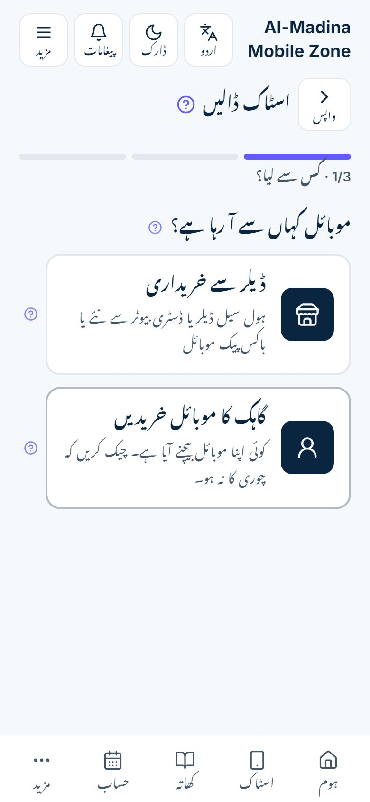
تصویر 7: اسٹاک ڈالیں، قدم 1: موبائل کہاں سے آ رہا ہے؟
ڈیلر سے: ہول سیلر یا ڈسٹری بیوٹر۔ عام طور پر نئے یا باکس پیک فون۔
گاہک کا موبائل خریدیں: کوئی اپنا فون بیچنے آیا ہے۔ ایپ یہ چیک کرنے میں مدد کرے گی کہ فون چوری کا نہیں۔
ڈیلر سے خریداری
مثال: آپ Rehman Traders سے ایک باکس پیک Samsung Galaxy A55 256GB BlueRs. 92,000 نقد میں خریدتے ہیں۔ آپ اسے Rs. 1,00,000 میں بیچیں گے۔ ڈبہ اور کیبل ساتھ آئے؛ چارجر ڈیلر تین دن میں بھیجے گا۔
ہوم پر اسٹاک ڈالیں دبائیں، پھر ڈیلر سے۔
ڈیلر چنیں میں چند حروف لکھیں (Rehman) اور Rehman Traders دبائیں۔ نیا ڈیلر ہے؟ + بٹن دبائیں اور اس کا نام اور موبائل نمبر لکھیں۔
اگلا دبائیں۔
موبائل شامل کریں دبائیں۔ موبائل شامل کریں کا فارم کھلتا ہے۔
یہ کیا ہے؟ کے نیچے موبائل چنا رہنے دیں۔
IMEI میں 15 ہندسے لکھیں یا ڈبے کا بارکوڈ پڑھنے کے لیے اسکین دبائیں۔ خانے کے نیچے ایپ بتاتی ہے نیا IMEI، پہلے نہیں آیا یا یہ IMEI پہلے آپ کی دکان میں آ چکا ہے۔
دو سم والے فون کے لیے IMEI 2 بھی اسی طرح بھریں۔
برانڈ (Samsung) دبائیں، پھر ماڈل (A55 لکھیں اور Galaxy A55 دبائیں)۔
میموری (256GB) اور رنگ (Blue) چنیں۔
Apple آئی فون کے لیے فارم ریجن کوڈ اور سم بھی پوچھتا ہے۔ ریجن کوڈ Settings → General → About → Model Number کے آخر میں ہوتا ہے (MLPF3LL/A ← LL/A دبائیں)۔ سم کے لیے فزیکل + ای سم، ڈبل ای سم (امریکی آئی فون 14 اور بعد والوں میں سم ٹرے نہیں ہوتی)، ڈبل فزیکل سم یا صرف فزیکل سم دبائیں۔ فہرست میں نہیں؟ نیا دبا کر لکھ دیں؛ اگلی بار ایپ خود دکھائے گی۔ استعمال شدہ یا کھلے باکس آئی فون کے لیے بیٹری سائیکل کاؤنٹ بھی پوچھا جاتا ہے (iPhone 15 اور نئے: Settings → General → About؛ پرانے میں خالی چھوڑ دیں)۔ یہ سب اسٹاک لسٹ اور قیمت کے اسٹیکر پر نظر آتے ہیں۔
حالت: باکس پیک دبائیں۔ دوسرے انتخاب کھلا باکس، استعمال شدہ اور پیچ شدہ ہیں (پیچ شدہ پر پیچ کی تفصیل پوچھی جاتی ہے)۔
PTA اسٹیٹس: پی ٹی اے منظور دبائیں۔ نان پی ٹی اے اور جے وی پر ایپ سم ٹائم (مہینے) بھی پوچھتی ہے؛ یہ اختیاری ہے، معلوم نہ ہو تو خالی چھوڑ دیں۔
خرید قیمت: 92000 لکھیں، جو آپ نے دیے۔
فروخت کی قیمت (اختیاری): 100000 لکھیں، جتنے میں بیچنا چاہتے ہیں۔ ابھی طے نہیں؟ خالی چھوڑ دیں اور بعد میں فون کے صفحے سے لکھ دیں۔
کھلا باکس، استعمال شدہ یا پیچ شدہ فون کے لیے فارم بیٹری ہیلتھ % بھی پوچھتا ہے (iPhone: Settings → Battery → Battery Health)۔ فون نہ دکھائے تو خالی چھوڑ دیں۔
وارنٹی (مہینے): ڈیلر والا فون عام طور پر 12 سے شروع ہوتا ہے۔
فون کے ساتھ کیا کیا آیا؟ ڈبہ، چارجر، کیبل، ہینڈز فری اور AirPods کے لیے نہیں، مل گیا یا بعد میں چنیں۔ یہاں: ڈبہ مل گیا، کیبل مل گیا، چارجر بعد میں، اور کب دے گا؟ میں تاریخ چنیں۔
شامل کریں دبائیں۔ فون لسٹ میں آ جاتا ہے۔ اگلے فون کے لیے دوبارہ موبائل شامل کریں دبائیں۔
کچھ بھول گئے، جیسے رنگ؟ لسٹ میں اس فون پر ترمیم دبائیں، بدلیں اور محفوظ کریں دبائیں۔ واپس (یا فون کا اپنا بیک بٹن) آپ کو پہلے قدم پر لے جاتا ہے اور سب کچھ بھرا رہتا ہے؛ اگلا دبائیں تو آپ کے فون واپس آ جاتے ہیں۔
یہی فروخت، ایکسچینج اور واپسی میں بھی ہوتا ہے: واپس، فون کا بیک بٹن یا پچھلے قدم کی پٹی پر ٹیپ ایک قدم پیچھے لے جاتا ہے اور سب کچھ رہتا ہے۔ نیچے سے کھلنے والا فارم (جیسے موبائل شامل کریں) کچھ بھرنے کے بعد غلطی سے باہر ٹیپ کرنے پر بند نہیں ہوتا: چھوڑنا ہو تو بند کریں دبائیں۔
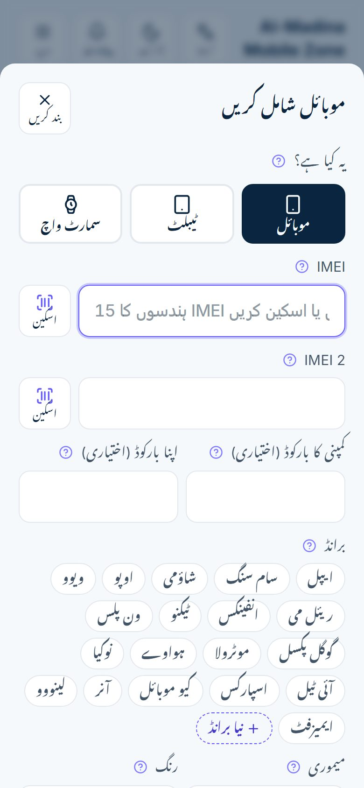
تصویر 8: موبائل شامل کریں کا فارم
جب سارے فون لسٹ میں آ جائیں تو اسی اسکرین پر پیسوں والا حصہ مکمل کریں:
پیسے کیسے دیے؟نقد دبائیں (یا کوئی اور طریقہ، نیچے دیکھیں)۔
کب خریدا؟ابھی رہنے دیں، یا اگر کل کی خریداری لکھ رہے ہیں تو پہلے دبا کر تاریخ اور وقت چنیں۔
اضافی خانے چاہییں تو رعایت، بل نمبر دبائیں (نیچے "حوالہ / پرچی نمبر" دیکھیں)۔
کل چیک کریں: Rs. 92,000۔
اسٹاک میں ڈالیں دبائیں۔
محفوظ کرنے سے پہلے دیکھیں کھلتا ہے: بیچنے والا، ہر فون اس کے IMEI، میموری، رنگ، حالت، PTA، بیٹری، خرید اور فروخت کی قیمت کے ساتھ، کل رقم اور ادائیگی کا طریقہ۔ کچھ غلط ہو تو اس فون پر ترمیم دبائیں۔ سب درست ہو تو میں نے دیکھ لیا: ساری تفصیل درست ہے پر نشان لگائیں اور اسٹاک میں ڈالیں دبائیں۔
آپ کو خریداری محفوظ ہو گئی، رقم اور خریداری کا نمبر نظر آتا ہے، مثلاً PUR-000001۔ یہاں سے آپ بارکوڈ والے قیمت کے اسٹیکر پرنٹ کرنے کے لیے ان موبائلز کے اسٹیکر پرنٹ کریں بھی دبا سکتے ہیں۔
خریدتے وقت ریٹ کا مشورہ
ماڈل چنتے ہی فروخت کی قیمت کے نیچے ایک سبز خانہ اس ماڈل کی آپ کی اپنی ہسٹری دکھاتا ہے: آخری بار کب اور کتنے میں بیچا، چھ مہینے میں کتنے بیچے اور کس ریٹ کے بیچ، اور ابھی اسٹاک میں کتنے ہیں۔ مشورے والی قیمت لینے کے لیے استعمال کریں … دبائیں۔ یہ صرف آپ کی اپنی دکان کی بِکری پڑھتا ہے۔
کون سا بینک یا والٹ (یا کوئی اور بینک / والٹ)، اور چاہیں تو ٹرانزیکشن ID
چیک
آپ نے چیک دیا
بینک، چیک نمبر اور چیک کی تاریخ
ادھار
پیسے بعد میں دیں گے
ابھی کتنے دیے، اگر دیے
ہر طریقے کا اپنا حساب رہتا ہے، اس لیے دن کا حساب دکھاتا ہے کہ کتنا نقد گیا اور کتنا بینک سے۔ اگر آپ نے مزید ← نقد اور بینک میں اکاؤنٹ بنائے ہیں (مثلاً "Meezan Bank" یا "دکان کا Easypaisa") تو آپ بالکل وہی اکاؤنٹ چن سکتے ہیں۔
ادھار پر خریداری
مثال: آپ Rehman Traders سے 3 فون Rs. 2,40,000 میں خریدتے ہیں۔ Rs. 1,50,000 ابھی دیتے ہیں اور باقی اگلے ہفتے۔
اوپر کی طرح فون ڈالیں۔
پیسے کیسے دیے؟ کے نیچے ادھار دبائیں۔
ابھی کتنے دیے؟ (اگر دیے) میں 150000 لکھیں۔
ابھی دینے ہیں میں 90,000 آتا ہے۔ یہ Rehman Traders کے کھاتے میں مجھے دینے ہیں کے نیچے چلا جاتا ہے۔
اگر اس نے تاریخ مانی ہے تو سپلائر کو ادائیگی تک (اختیاری) بھریں۔ اس تاریخ کے بعد آڈٹ اس ادھار کو لیٹ دکھاتا ہے۔
اسٹاک میں ڈالیں دبائیں۔
بعد میں جب اسے پیسے دیں تو ادھار ← پیسے دیے استعمال کریں اور Rehman Traders چنیں۔
حوالہ / پرچی نمبر اور ڈیلر کا بل نمبر
ڈیلر کی خریداری پر یہ اختیاری خانے دیکھنے کے لیے رعایت، بل نمبر دبائیں:
رعایت: وہ پیسے جو ڈیلر نے پورے بل پر کم کیے۔
حوالہ / پرچی نمبر: کوئی بھی نمبر یا لفظ جو بعد میں یہ خریداری ڈھونڈنے میں مدد کرے، جیسے ڈیلر کی پرچی یا لاٹ نمبر، مثلاً Slip 4471 یا Hall Road lot 3۔ یہ صرف تلاش کے لیے رکھا جاتا ہے۔
سپلائر بل نمبر: ڈیلر کے اپنے بل پر چھپا نمبر، مثلاً RT-2026-118، تاکہ کبھی سوال ہو تو آپ اس کے کاغذ سے ملا سکیں۔
کرایہ / لوڈنگ (روپے) اور کرایے کا نوٹ: گاڑی یا لوڈنگ کا خرچہ۔ یہ لائنوں پر بانٹ کر چیز کی لاگت میں جوڑ دیا جاتا ہے، تاکہ آپ کا منافع صحیح رہے۔
کوئی برانڈ، ماڈل، میموری یا رنگ نہیں مل رہا
اگر موبائل شامل کریں فارم میں نہ ملے:
+ نیا برانڈ، + نیا ماڈل، + نئی میموری یا + نیا رنگ دبائیں۔
نام لکھیں، مثلاً برانڈ Dcode، ماڈل Bold 3۔
محفوظ کریں دبائیں۔ یہ فوراً چن لیا جاتا ہے اور اگلی بار لسٹ میں ہوگا۔
اپنی انٹریوں کا نام آپ بعد میں مزید ← برانڈ اور ماڈل میں بدل یا انہیں ختم کر سکتے ہیں۔ پہلے سے موجود، اور کسی فون پر استعمال ہو چکی انٹریاں ختم نہیں ہو سکتیں۔
گاہک کا موبائل خریدنا
مثال:Ali Raza اپنا استعمال شدہ Infinix Hot 40 128GB بیچنے آتا ہے۔ آپ Rs. 28,000 طے کرتے ہیں۔ Rs. 20,000 ابھی دیتے ہیں اور Rs. 8,000 کل۔ آپ اسے Rs. 34,000 میں بیچیں گے۔
اسٹاک ڈالیں ← گاہک کا موبائل خریدیں۔
موبائل بیچنے والا کون ہے؟ کے نیچے بندے کو نام، فون یا CNIC سے تلاش کریں۔ نیا ہو تو + (نیا بندہ) دبائیں۔
نام (Ali Raza) اور موبائل نمبر (+92 لکھا رہتا ہے؛ 3005550606 لکھیں) بھریں۔
شناختی کارڈ بھریں: 13 ہندسے 3740512345673 لکھیں اور یہ 37405-1234567-3 بن کر دکھتا ہے۔ یا ایپ سے پڑھوانے کے لیے شناختی کارڈ اسکین (آگے کی تصویر) دبائیں (باب 7 دیکھیں)۔
محفوظ کریں دبائیں، پھر اگلا۔
موبائل شامل کریں دبائیں اور IMEI، Infinix، Hot 40، 128GB، حالت استعمال شدہ، خرید قیمت28000، فروخت کی قیمت34000 بھریں۔ شامل کریں دبائیں۔
پیسے کیسے دیے؟ کے نیچے ادھار دبائیں اور ابھی کتنے دیے؟ (اگر دیے) میں 20000 لکھیں۔ ابھی دینے ہیں میں 8,000 آتا ہے، جو Ali Raza کے کھاتے میں جاتا ہے۔
شناختی کارڈ چیک کے نیچے ابھی یا بعد میں چیک (عام انتخاب) یا چھوڑیں، میں اسے جانتا ہوں چنیں۔
اسٹاک میں ڈالیں دبائیں۔
مکمل ہونے والی اسکرین پر لکھا آتا ہے چیک کریں کہ موبائل چوری کا نہ ہو، ساتھ ابھی شناختی کارڈ چیک کریں، چھوڑیں، میں اسے جانتا ہوں اور اقرار نامہ پرنٹ کریں۔ چیک کے لیے باب 7 پر جائیں۔
ٹیبلٹ اور سمارٹ واچ
ٹیبلٹ اور سمارٹ واچ بھی فون کی طرح ایک ایک کر کے رکھے جاتے ہیں، ہر ایک کا اپنا صفحہ اور اپنی ہسٹری۔
موبائل شامل کریں میں یہ کیا ہے؟ کے نیچے موبائل کی جگہ ٹیبلٹ یا سمارٹ واچ دبائیں۔
صرف وہ برانڈ دکھتے ہیں جو یہ چیز بناتے ہیں، مثلاً ٹیبلٹ کے لیے Apple، Samsung اور Lenovo، یا گھڑی کے لیے Apple، Samsung، Huawei اور Amazfit۔
اس قسم کے سوال بھریں (نیچے ٹیبل دیکھیں) اور شامل کریں دبائیں۔
موبائل
ٹیبلٹ
سمارٹ واچ
سم
ہمیشہ
صرف وائی فائی یا وائی فائی + سم
سم نہیں (GPS) یا سم والی (Cellular)
IMEI
IMEI اور IMEI 2
صرف سم کے ساتھ
صرف سم کے ساتھ
سیریل نمبر
ضرورت نہیں
سم کے بغیر ضروری
سم کے بغیر ضروری
PTA
پی ٹی اے منظور، نان پی ٹی اے، جے وی
صرف سم کے ساتھ، جے وی نہیں
صرف سم کے ساتھ، جے وی نہیں
سائز
میموری
میموری
ڈائل کا سائز (38 سے 49 mm)
بیٹری ہیلتھ %
کھلے باکس، استعمال شدہ یا پیچ شدہ کے لیے
کھلے باکس یا استعمال شدہ کے لیے
کھلے باکس یا استعمال شدہ کے لیے
ساتھ کیا آیا
ڈبہ، چارجر، کیبل، ہینڈز فری، AirPods
ڈبہ، چارجر، کیبل، پین / اسٹائلس، کی بورڈ کور
ڈبہ، چارجر، اضافی اسٹریپ
سم کے بغیر IMEI نہیں ہوتا، اس لیے سیریل نمبر (ڈبے پر، یا ڈیوائس میں Settings ← About میں) تلاش کے لیے استعمال ہوتا ہے اور IMEI کی طرح دکھتا ہے۔
استعمال شدہ ڈیوائس کا لاک چیک
استعمال شدہ ٹیبلٹ یا گھڑی پرانے مالک کے اکاؤنٹ سے لاک ہو سکتی ہے۔ اگر ایسا ہو تو اگلا خریدار اسے استعمال نہیں کر سکتا۔ اس لیے جب آپ استعمال شدہ چیز خریدتے ہیں تو فارم میں لاک چیک (استعمال شدہ) کا خانہ آتا ہے:
iCloud / ایکٹیویشن لاک (Apple کا Find My)۔
Google / FRP لاک (ری سیٹ کے بعد Android پچھلا Google اکاؤنٹ مانگتا ہے)۔
Samsung / اکاؤنٹ لاک (کمپنی کا اپنا اکاؤنٹ)۔
جوڑی ہوئی ڈیوائس کا لاک (گھڑی جو ابھی تک پرانے مالک کے فون سے جڑی ہو)۔
ہر ایک کے لیے ہٹ گیا، ابھی لگا ہے یا لاگو نہیں دبائیں، پھر لاک چیک ہو گیا اور ہٹ گیا پر نشان لگائیں۔
ٹیبلٹ اور سمارٹ واچ کے لیے یہ چیک ہمیشہ ضروری ہے۔ استعمال شدہ موبائل کے لیے تب ضروری ہے جب مالک نے ڈیوائس کی سیٹنگز میں استعمال شدہ موبائل کے لیے بھی لاک چیک لازمی آن کیا ہو۔
جس چیز پر کوئی بھی لاک ابھی لگا ہے ہو وہ خریدی نہیں جا سکتی: ایپ کہتی ہے "ابھی لاک لگا ہے — ہٹنے تک نہ خریدیں"۔ بیچنے والے سے کہیں کہ آپ کے سامنے ہٹائے، پھر اسے ہٹ گیا کریں۔
مثال: ایک گاہک استعمال شدہ iPad 9th gen Wi-Fi لاتا ہے۔ آپ اس میں Settings کھولتے ہیں اور دیکھتے ہیں کہ Find My ابھی آن ہے۔ iCloud / ایکٹیویشن لاک کو ابھی لگا ہے کریں۔ ایپ آپ کو اسے خریدنے نہیں دے گی۔ گاہک اپنی Apple ID سے سائن آؤٹ کرتا ہے؛ اب آپ ہٹ گیا کریں، خانے پر نشان لگائیں اور آگے چلیں۔
خریداری میں ایکسیسریز
چارجر، کیبل، کور، گلاس، ہینڈز فری، پاور بینک اور عام گھڑیاں (Casio، Naviforce) گنتی سے رکھی جاتی ہیں۔ ان کا IMEI نہیں ہوتا، صرف یہ کہ آپ کے پاس کتنی ہیں۔
اسٹاک ڈالیں کے قدم 2 میں ایکسیسری / گھڑی ڈالیں دبائیں۔
چیز کو نام یا کوڈ سے تلاش کریں اور دبائیں۔ لسٹ میں نہیں؟ نئی چیز (لسٹ میں نہیں) دبائیں، نام لکھیں، یہ کیا ہے؟ چنیں (چارجر، کیبل، گھڑی وغیرہ، یا اپنی چیز کے لیے نئی قسم، مثلاً رنگ لائٹ)، بیچنے کی قیمت (ایک کی) لکھیں اور محفوظ کر کے ڈالیں دبائیں۔
چنیں کہ ڈیلر نے کیسے بیچا: عدد، درجن، ڈبہ یا کارٹن۔
تعداد اور فی پیس قیمت لکھیں (ایک پیس کی قیمت، یا اگر وہ چنا ہو تو ایک درجن یا ڈبے کی)۔
خریداری معمول کے مطابق مکمل کریں اور اسٹاک میں ڈالیں دبائیں۔
اسٹاک ہمیشہ پیس میں رکھا جاتا ہے۔ مثال: آپ Rs. 1,200 فی درجن کے حساب سے 5 درجن Type-C کیبل خریدتے ہیں۔ اسٹاک میں 60 پیسRs. 100 فی پیس آتے ہیں، اور لائن Rs. 6,000 کی بنتی ہے۔
ڈیلر کی خریداری پر آپ + چارجر، کور یا دوسرا سامان دبا کر ایک کھلی لائن بھی لکھ سکتے ہیں (نام، تعداد اور قیمت) جو اسٹاک کی چیز نہیں۔
خریدتے وقت اسکین
کیمرے سے ڈبہ پڑھنے کے لیے IMEI کے ساتھ اسکین دبائیں۔ ڈبے پر کئی بارکوڈ ہوں تب بھی کیمرہ پہلے IMEI ڈھونڈتا ہے۔
USB یا Bluetooth اسکینر سے ڈبہ اسکین کریں: پہلا اسکین IMEI بھرتا ہے، اگلا IMEI 2، پھر کمپنی کا بارکوڈ (اختیاری)۔
اپنا بارکوڈ (اختیاری) اس اسٹیکر کوڈ کے لیے ہے جو آپ پہلے سے استعمال کرتے ہیں۔ خالی چھوڑ دیں تو محفوظ کرتے وقت ایپ فون کو اپنا بارکوڈ دے دیتی ہے۔ وہ بارکوڈ کبھی نہیں بدلتا۔
دکان میں پہلے سے موجود پرانا اسٹاک
جب آپ ایپ شروع کرتے ہیں تو آپ کی شیلفوں پر پہلے سے موجود فونز کا نہ کوئی خریداری کا بل ہوتا ہے نہ کوئی پیسے دینے ہوتے ہیں۔ انہیں پرانے اسٹاک کے طور پر ڈالیں۔
مزید ← پرانا اسٹاک۔
موبائل شامل کریں دبائیں اور اوپر کی طرح فارم بھریں، جتنے میں لیا وہ خرید قیمت میں لکھیں۔
شامل کریں دبائیں۔ ہر فون کے لیے یہی کریں۔
محفوظ کریں دبائیں۔ آپ کو خریداری محفوظ ہو گئی نظر آتا ہے۔
تصویر 9: پرانا اسٹاک (پہلے سے دکان میں)
گلے سے کوئی پیسہ نہیں نکلتا۔ پرانا اسٹاک صرف آپ کا اسٹاک اور اس کی مالیت پوری کرتا ہے۔ مثال: Rs. 30,000، Rs. 45,000 اور Rs. 60,000 کے تین پرانے فون آپ کے اسٹاک کی مالیت میں Rs. 1,35,000 جوڑ دیتے ہیں۔
اگر پرانے اسٹاک کا کوئی فون غلطی سے ڈالا گیا ہو تو اسے اسٹاک لسٹ سے کھولیں اور وجہ لکھ کر پرانا اسٹاک اندراج ہٹائیں دبائیں۔
7. استعمال شدہ فون کی جانچ (شناخت چیک اور دستخط شدہ اقرار نامہ)
کسی بندے سے خریدے گئے ہر استعمال شدہ فون، ٹیبلٹ یا گھڑی کے لیے یہ کریں۔ یہ آپ کو چوری کا فون خریدنے سے بچاتا ہے، اور اگر کبھی پولیس پوچھے تو بیچنے والے کی شناخت، تصویریں اور دستخط ایک ہی جگہ آپ کے پاس ہوتے ہیں۔
جانچ کھولنا
تصدیق کی اسکرین تین طریقوں سے کھل سکتی ہے:
خریدنے کے فوراً بعد: مکمل ہونے والی اسکرین پر ابھی شناختی کارڈ چیک کریں۔
فون کے صفحے سے: شناختی کارڈ چیک۔
ہوم سے: توجہ طلب ← فون: شناختی کارڈ چیک باقی۔
تصویر 10: تصدیق کی اسکرین
اوپر فون، اس کا IMEI اور اس کی حالت کا نشان نظر آتا ہے: شناخت چیک باقی، شناخت چیک ہو گیا یا چوری؟ نہ بیچیں۔
قدم بہ قدم
مثال: آپ نے Usman Tariq سے استعمال شدہ Xiaomi Redmi Note 13Rs. 55,000 میں خریدا۔
بیچنے والا: جس سے خریدا وہ پہلے سے بھرا ہوتا ہے۔ آپ نام، فون یا CNIC سے تلاش کر کے بدل سکتے ہیں۔
شناختی کارڈ نمبر: 13 ہندسے چیک کریں۔
ہر تصویر والا خانہ دبائیں اور کیمرے سے تصویر لیں: شناختی کارڈ سامنے، شناختی کارڈ پیچھے، بیچنے والے کی تصویر اور موبائل کی تصویر۔
ای گیجٹ (پنجاب پولیس): ای گیجٹ پورٹل کھولیں دبائیں، وہاں IMEI چیک کریں، واپس آئیں اور صاف، رپورٹ شدہ یا چیک نہیں کیا چنیں۔ اگر پورٹل دے تو حوالہ نمبر لکھیں۔
پی ٹی اے چیک کیا (8484): IMEI PTA کو بھیجنے کے لیے SMS 8484 دبائیں، پھر خانے پر نشان لگائیں اور پی ٹی اے نتیجہ چنیں۔
بیچنے والے نے اقرار نامہ پر دستخط کیے: بیچنے والا اسکرین پر دستخط کرتا ہے (نیچے دیکھیں)۔
موبائل کی حالت کے نوٹس (اختیاری)، مثلاً پیچھے ہلکی خراش، اسکرین اصلی۔
محفوظ کریں دبائیں۔
نیچے نتیجہ کا کارڈ حالت دکھاتا ہے اور ایک ابھی باقی والی لائن جو بالکل بتاتی ہے کہ کیا ابھی نہیں ہوا، تاکہ آپ کو کبھی اندازہ نہ لگانا پڑے۔
لکھنے کی جگہ CNIC اسکین کریں
شناختی کارڈ اسکین (آگے کی تصویر) دبائیں۔ یہ نیا بندہ والے فارم پر بھی ہے۔
اچھی روشنی میں کارڈ کے سامنے والے حصے کی صاف تصویر لیں۔
چند سیکنڈ میں نام اور CNIC نمبر بھر جاتے ہیں، اور تصویر شناختی کارڈ سامنے کے طور پر رکھ لی جاتی ہے۔ والد کا نام، تاریخ پیدائش اور کارڈ کی میعاد نوٹس میں چلی جاتی ہے۔
محفوظ کرنے سے پہلے ہر بھرا ہوا خانہ چیک کریں اور غلط پڑھا گیا ہندسہ ٹھیک کریں۔
اگر کارڈ کی میعاد ختم ہو چکی ہو تو آپ کو خبردار کیا جاتا ہے۔ اردو پتہ نہیں پڑھا جاتا؛ ضرورت ہو تو خود لکھیں۔
بیچنے والا اسکرین پر دستخط کرتا ہے
بیچنے والا اپنے ہاتھ سے تصدیق کرتا ہے کہ فون اس کا ہے اور چوری کا نہیں۔
بیچنے والے نے اقرار نامہ پر دستخط کیے تک اسکرول کریں۔
فون بیچنے والے کو دیں۔ بیچنے والا یہاں دستخط کرے (انگلی یا ماؤس سے) کے نیچے وہ نقطوں والے خانے میں انگلی سے دستخط کرتا ہے۔
پسند نہیں آئے؟ مٹائیں دبائیں اور وہ دوبارہ دستخط کرے۔
دستخط محفوظ کریں دبائیں۔ اقرار نامہ دستخط شدہ ہو جاتا ہے (بیچنے والے نے دستخط کر دیے)۔
اسکرین کے نیچے محفوظ کریں دبائیں۔
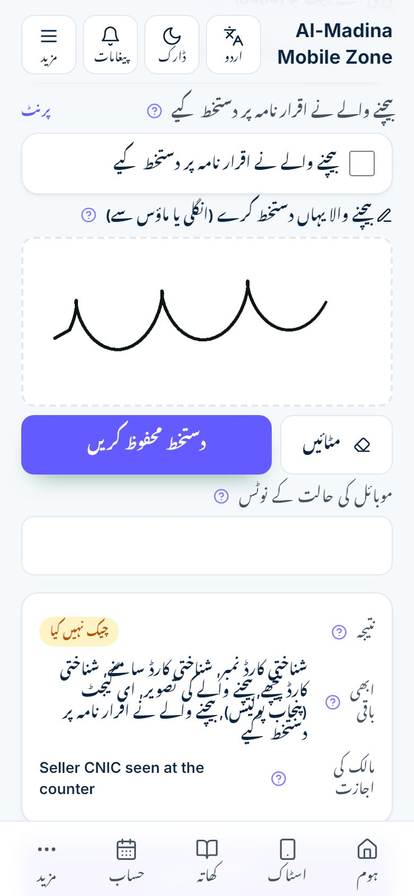
تصویر 11: بیچنے والا اسکرین پر دستخط کرتا ہے
دستخط شناخت چیک کے ساتھ، اس کے CNIC کی تصویر اور فون کے IMEI کے پاس محفوظ ہو جاتے ہیں۔ بعد میں بدلنے کے لیے دوبارہ دستخط دبائیں۔
پرنٹ شدہ اقرار نامہ
بیچنے والے نے اقرار نامہ پر دستخط کیے کے ساتھ پرنٹ دبائیں (یا محفوظ کرنے کے بعد اقرار نامہ پرنٹ کریں)۔ اقرار نامہ اس زبان میں پرنٹ ہوتا ہے جو آپ دستاویز کی زبان میں چنیں (English یا اردو)۔ اس میں دکان، بیچنے والے کا نام اور CNIC، فون اور اس کا IMEI، تاریخ، اور لائن کے اوپر اس کے دستخط ہوتے ہیں۔ آپ اسے PDF کے طور پر ڈاؤن لوڈ یا WhatsApp پر شیئر بھی کر سکتے ہیں۔
محفوظ کرنے کے بعد
نتیجے کی اسکرین بتاتی ہے کہ آپ کہاں کھڑے ہیں:
شناختی کارڈ چیک مکمل۔ یہ فون بیچا جا سکتا ہے۔ ساتھ یہ فون ابھی بیچیں کا بٹن۔
محفوظ ہو گیا، مگر چیک ابھی مکمل نہیں۔ ابھی باقی: … باقی کام ہونے تک فون شناخت چیک باقی رہتا ہے۔
چوری کا شبہ۔ اسے نہ بیچیں؛ صرف مالک اجازت دے سکتا ہے۔ فون پر چوری؟ نہ بیچیں آتا ہے۔
وہاں سے آپ فون پر واپس، اقرار نامہ پرنٹ کریں یا کچھ بدلنا ہے پر جا سکتے ہیں۔
مالک کی اجازت
کبھی کاغذات کسی معقول وجہ سے نہیں ہوتے، مثلاً کسی قریبی رشتہ دار سے خریدا گیا فون۔ مالک یا منیجر مالک کی اجازت میں اجازت کی وجہ (کم از کم 5 حروف) لکھ سکتا ہے، مثلاً 3 سال سے پکا گاہک، شناختی کارڈ دیکھا۔ پھر چیک مکمل مانا جاتا ہے۔ وجہ اور یہ کرنے والے کا نام فون کی ہسٹری میں رہتے ہیں۔
جس فون کا چیک باقی ہو
جس فون کا چیک نہ ہوا ہو وہ غلطی سے نہیں بک سکتا۔ بیچتے وقت ایپ کہتی ہے "اس فون کا شناختی کارڈ چیک باقی ہے" اور فروخت مکمل کریں گرے رہتا ہے جب تک آپ یہ نہ چنیں:
ابھی چیک کریں: تصدیق کی اسکرین کھولتا ہے۔
چھوڑ کر بیچیں (میں جانتا ہوں): جسے بیچنے کی اجازت ہے وہ یہ کر سکتا ہے۔ آپ کا نام فون کی ہسٹری میں محفوظ ہوتا ہے اور مالک اسے آڈٹ میں دیکھتا ہے۔
جس فون پر چوری؟ نہ بیچیں لگا ہو اسے صرف مالک لکھی ہوئی وجہ کے ساتھ بیچ سکتا ہے۔ جس ٹیبلٹ یا گھڑی پر لاک ابھی لگا ہے ہو وہ لاک ہٹنے تک بالکل نہیں بک سکتی۔
8. بیچنا
بیچنے کے تین قدم ہیں، جو اوپر دکھتے ہیں: 1 کون سا فون؟ ← 2 کتنے میں؟ ← 3 مکمل۔ ٹوٹل ایپ خود نکالتی ہے؛ آپ صرف طے شدہ قیمت لکھتے ہیں۔
قدم 1: فون چنیں
ہوم پر بیچیں دبائیں۔
فون ڈھونڈیں: تلاش کے خانے میں IMEI کا کچھ حصہ، ماڈل، برانڈ یا نام لکھیں، یا ڈبہ یا دکان کا اسٹیکر پڑھنے کے لیے اسکین دبائیں۔
لسٹ چھوٹی کرنے کے لیے سب، موبائل، ٹیبلٹ اور سمارٹ واچ کے بٹن استعمال کریں۔
جو فون بیچ رہے ہیں اس پر ٹیپ کریں کے نیچے فون دبائیں۔
تصویر 12: بیچیں، قدم 1: فون چنیں
ہر لائن میں ماڈل، IMEI (یا گھڑی کا سیریل)، حالت، PTA کا نشان (مثلاً جے وی)، چیک کی حالت (شناخت چیک ہو گیا یا شناخت چیک باقی)، مانگی قیمت اور اسٹاک میں ہوتا ہے۔
نقد بِکری
مثال: آپ ایک Vivo Y28 128GBRs. 36,000 نقد میں، 1 مہینے کی وارنٹی کے ساتھ بیچتے ہیں۔ چارجر ابھی ساتھ جاتا ہے؛ ہینڈز فری کا اگلے ہفتے کا وعدہ ہے۔
فون چنیں۔ قدم 2 کھلتا ہے۔
کتنے میں بیچا؟ (روپے) میں مانگی قیمت بھری ہوتی ہے۔ اگر کوئی اور قیمت طے ہوئی ہو تو اسے 36000 کر دیں۔
وارنٹی: کوئی نہیں، 7 دن، 1 مہینہ، 3 مہینے، 6 مہینے یا 1 سال دبائیں۔ یہاں: 1 مہینہ۔
فون کے ساتھ کیا کیا دے رہے ہیں؟ ہر چیز کے لیے نہیں، دے دیا یا بعد میں دبائیں۔ یہاں: چارجر دے دیا، ہینڈز فری بعد میں، اور کب دیں گے؟ میں تاریخ۔ جو چیزیں فون کے ساتھ آئی تھیں وہ دے دیا سے شروع ہوتی ہیں۔
بل میں اور کچھ چاہیے؟ + ایک اور فون، ایکسیسری / گھڑی (اسٹاک سے گنتی والی چیز) یا + چارجر، کور یا دوسرا سامان (کھلی لائن، اسٹاک نہیں بدلتا) دبائیں۔ رعایت اور گاہک رعایت کا خانہ اور اختیاری گاہک کھولتا ہے۔
پیسے کیسے ملے؟نقد دبائیں۔
کل چیک کریں اور فروخت مکمل کریں دبائیں۔
بیچنے سے پہلے چیک کریں والی اسکرین ہر فون کی بیچی گئی قیمت اس کی مانگی قیمت کے سامنے دکھاتی ہے (اور مالک اور منیجر کے لیے اس کی لاگت اور منافع)۔ تصدیق کریں اور بل بنائیں دبائیں۔
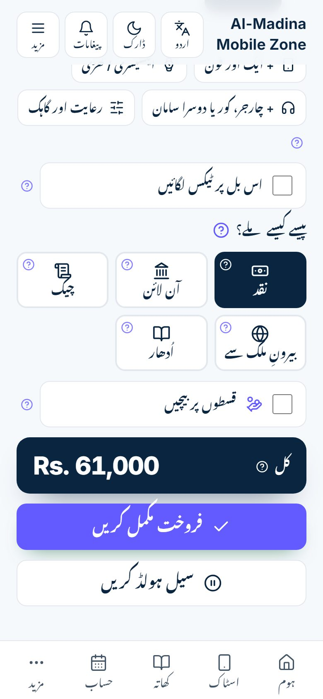
تصویر 13: قدم 2: فون کے ساتھ کیا جا رہا ہے، مزید لائنیں، اور ٹیکس
مکمل ہونے والی اسکرین پر فروخت مکمل، رقم اور بل نمبر آتا ہے، مثلاً INV-000018۔
واک اِن گاہک۔ ہر نئی بِکری واک اِن گاہک سے شروع ہوتی ہے: وہ بندہ جو ابھی پورے پیسے دیتا ہے اور جس کا کھاتہ نہیں رکھنا۔ بل پر "واک اِن گاہک" چھپتا ہے۔ بل کسی بندے کے کھاتے میں ڈالنا ہو تو گاہک چنیں دبائیں اور اسے چنیں (یا نیا بندہ شامل کریں)۔
ادھار بِکری
مثال:Imran Ali ایک Redmi Note 13Rs. 58,000 میں لیتا ہے۔ Rs. 20,000 ابھی دیتا ہے اور باقی 30 تاریخ تک دینے کا وعدہ کرتا ہے۔
فون چنیں اور قیمت چیک کریں۔
پیسے کیسے ملے؟ کے نیچے ادھار دبائیں۔
اُدھار کس نے لیا؟Imran تلاش کریں اور Imran Ali دبائیں، یا نئے بندے کے لیے + دبائیں۔
ابھی کتنے ملے؟ (اگر ملے): 20000 لکھیں۔ باقی اُدھار میں 38,000 آتا ہے۔
ادائیگی کا وعدہ (اختیاری): 30 تاریخ چنیں۔ 31 سے آڈٹ اس ادھار کو لیٹ دکھاتا ہے۔
فروخت مکمل کریں دبائیں، پھر تصدیق کریں اور بل بنائیں۔
Imran Ali اب ادھار ← مجھے لینے ہیں میں Rs. 38,000 کے ساتھ آ جاتا ہے۔ جب وہ پیسے دے تو ادھار ← پیسے ملے استعمال کریں۔
کون سا بینک یا والٹ (یا کوئی اور بینک / والٹ)، اور چاہیں تو ٹرانزیکشن ID
چیک
گاہک چیک دیتا ہے
بینک، چیک نمبر اور چیک کی تاریخ
بیرونِ ملک سے
خریدار کے گھر والے دوسرے ملک سے پیسے بھیجتے ہیں
کرنسی، رقم، ریٹ، بھیجنے والے کا نام، اور چاہیں تو Western Union / MoneyGram اور MTCN
ادھار
پیسے بعد میں
گاہک، اور وہ ابھی کتنے دیتا ہے
مثال (بیرونِ ملک سے): Usman کا بھائی ریاض سے Rs. 37,100 کے فون کے لیے Western Union سے 500 SAR بھیجتا ہے۔ بیرونِ ملک سے دبائیں، SAR چنیں، 500 اور ریٹ 74.20 لکھیں۔ ایپ Rs. 37,100 دکھاتی ہے۔ بھیجنے والے کا نام لکھیں، Western Union دبائیں اور بِکری مکمل کریں۔ اگر پیسے بل سے کم ہوں تو باقی گاہک کے ادھار میں چلا جاتا ہے۔
رسید پر لکھا ہوتا ہے کہ پیسے کیسے ملے، مثلاً Online · Meezan Bank · Ref TID778812، اور دن کا حساب دکھاتا ہے کہ ہر طریقے سے کتنا آیا۔
مانگی قیمت اور کم سے کم قیمت
ہر فون کی ایک مانگی قیمت ہوتی ہے، جو خریدتے وقت رکھی گئی۔ بیچتے وقت مانگی قیمت کتنے میں بیچا میں بھری ہوتی ہے۔ یہ ایک ہدف ہے؛ آپ اصل طے شدہ قیمت لکھتے ہیں۔
اگر آپ مانگی قیمت سے کم بیچیں تو بیچنے سے پہلے چیک کریں والی اسکرین ایک سرخ لائن دکھاتی ہے، مثلاً مانگی قیمت سے Rs. 2,000 کم۔
اگر مارکیٹ بدل گئی ہو تو طے قیمت بدلیں پر نشان لگائیں، نئی طے شدہ قیمت اور وجہ لکھیں، مثلاً نیا ماڈل آ گیا، ریٹ Rs. 4,000 گر گیا۔ یہ تبدیلی آپ کے نام کے ساتھ فون کی ہسٹری میں لکھی جاتی ہے۔
ایکسیسری کی ایک کم سے کم قیمت ہو سکتی ہے۔ اس سے نیچے جائیں تو لائن پر لکھا آتا ہے کم سے کم قیمت سے کم — منیجر چاہیے۔
مانگی قیمت سے نیچے کون جا سکتا ہے، یہ مالک دکان کی سیٹنگز ← قیمت کے اصول میں طے کرتا ہے۔ طے قیمت سے کم بیچنا اور طے قیمت بدلنا میں سے ہر ایک کے لیے وہ کوئی بھی، مالک / منیجر یا مالک کے پن سے چنتا ہے۔ مالک اور منیجر کو ہمیشہ اجازت ہے۔
مثال: مانگی قیمت Rs. 65,000 ہے۔ سیلز مین Rs. 62,000 طے کرتا ہے۔ دکان کا اصول مالک کے پن سے ہے۔ چیک والی اسکرین پر مالک کا پن کا خانہ آتا ہے؛ مالک اپنا پن لکھتا ہے اور پن کے ساتھ تصدیق دباتا ہے۔ فون کی ہسٹری میں مانگی قیمت سے Rs. 3,000 کم، سیلز مین کا نام اور مالک کی منظوری آ جاتی ہے۔
خرید قیمت سے کم قیمت
اگر کتنے میں بیچا دکان کی دی گئی قیمت سے کم ہو تو ایک سرخ خانہ کہتا ہے کہ قیمت خرید قیمت سے کم ہے اور یہ نقصان ہے۔
مالک یا منیجر: اجازت دینے کے لیے مجھے پتا ہے، نقصان پر بیچیں دبائیں۔
سیلز مین: بِکری نہیں ہوتی۔ اسے قیمت بڑھانی ہوگی یا مالک کو بلانا ہوگا۔
مثال: Rs. 50,000 میں خریدا، Rs. 47,000 لکھا۔ یہ Rs. 3,000 کا نقصان ہے؛ اسے صرف مالک یا منیجر منظور کر سکتا ہے۔
ریٹ کا مشورہ
کتنے میں بیچا کے نیچے ایک سبز خانہ اس فون کا آپ کا اپنا ریٹ دکھاتا ہے، مثلاً آخری بار Rs. 57,500 میں 12-10-2026 کو بیچا، بکنے میں کتنے دن لگے، چھ مہینے میں کتنے بیچے اور کس ریٹ کے بیچ، اور ابھی اسٹاک میں کتنے ہیں۔ مشورے والی قیمت لینے کے لیے استعمال کریں … دبائیں، جو آپ کی حالیہ بِکری کا درمیانہ ریٹ ہے، سو تک پورا کیا ہوا۔ مالک اور منیجر کو عام طور پر Rs. … میں خریدا بھی دکھتا ہے۔
ٹیکس اور آئٹم GST
ہر بِکری پر ٹیکس بند ہوتا ہے جب تک آپ اسے نہ لگائیں۔
اس بل پر ٹیکس لگائیں پر نشان لگائیں۔
ٹیکس % کا خانہ آتا ہے، دکان کے ریٹ سے شروع (عام طور پر 18)۔
ٹیکس رعایت کے بعد بل کے اوپر جوڑا جاتا ہے، اور ٹوٹل پر لکھا آتا ہے کہ ٹیکس شامل ہے۔
آئٹم GST۔ کسی ایکسیسری کا اپنا GST % (اختیاری) ہو سکتا ہے، جو ایکسیسریز میں اس کے صفحے پر رکھا جاتا ہے۔ ٹیکس والے بل پر اس چیز پر اس کے اپنے ریٹ سے ٹیکس لگتا ہے؛ فون اور بغیر ریٹ والی چیزیں بل کا ریٹ لیتی ہیں۔ پھر رسید پر لکھا آتا ہے ٹیکس (آئٹم وار)۔ بغیر ٹیکس کا بل بغیر ٹیکس ہی رہتا ہے۔
مثال: 18% ٹیکس والے بل میں Rs. 10,000 کا ایک فون اور Rs. 500 والی دو کیبلیں ہیں جن کا GST 5% ہے۔ فون پر ٹیکس Rs. 1,800 اور کیبلوں پر Rs. 50۔ بل کا ٹیکس Rs. 1,850 ہے اور رسید پر ٹیکس (آئٹم وار) آتا ہے۔ اسکرین اور رسید ہمیشہ پیسے پیسے تک ملتے ہیں۔
بِکری روکیں (ہولڈ)
گاہک ATM سے پیسے لینے گیا ہے؟ تب تک اگلے گاہک کو نمٹائیں۔
فروخت مکمل کریں کے نیچے سیل ہولڈ کریں دبائیں۔
ڈھونڈنے کے لیے نام (اختیاری) لکھیں، مثلاً Ali ATM، اور ہولڈ کریں دبائیں۔
اسکرین اگلے گاہک کے لیے خالی ہو جاتی ہے۔ ابھی کچھ نہیں بکا اور فون اسٹاک میں ہی رہتا ہے۔
جب Ali واپس آئے تو بیچنے کی اسکرین کے اوپر ہولڈ سیلز دبائیں، پھر دوبارہ کھولیں۔
بل بالکل ویسا ہی واپس آتا ہے: قیمتیں، ٹیکس اور ادائیگی۔ ہولڈ بل دکان کے کسی بھی فون سے دوبارہ کھولا جا سکتا ہے۔ اگر اس دوران اس کا کوئی فون بک گیا ہو تو وہ بل سے نکال دیا جاتا ہے اور اسکرین آپ کو بتا دیتی ہے۔
رسید: پرنٹ، PDF اور WhatsApp
فروخت مکمل کے بعد آپ یہ دبا سکتے ہیں:
تھرمل پرنٹر کے لیے رسید پرنٹ (80mm)، یا عام پرنٹر کے لیے بل پرنٹ (A4)۔
بل فائل کی صورت میں رکھنے کے لیے PDF ڈاؤن لوڈ۔
WhatsApp، Gmail یا فون کی کسی بھی ایپ پر بھیجنے کے لیے PDF شیئر کریں۔
دوبارہ شروع کرنے کے لیے ایک اور فروخت، یا بل کھولنے کے لیے فروخت دیکھیں۔
یہی بٹن ہر بِکری کے صفحے پر ہوتے ہیں، جو آپ بعد میں بل سے کھول سکتے ہیں۔ صفحے پر گاہک، تاریخ، کس نے بیچا، ہر لائن، ٹوٹل، کتنے ملے، کتنے باقی ہیں اور، مالک اور منیجر کے لیے، منافع ہوتا ہے۔
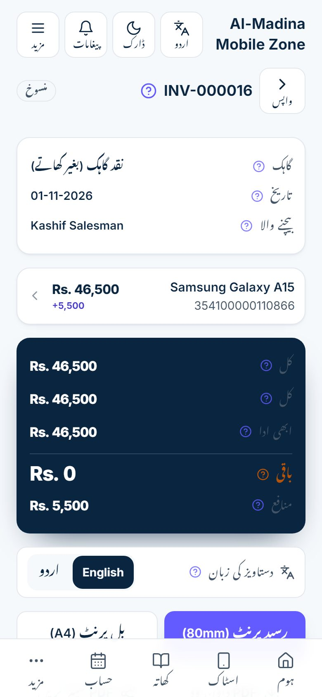
تصویر 14: دستاویز کی زبان کے بٹن کے ساتھ بِکری کا صفحہ
پرنٹ کے بٹنوں کے بالکل اوپر دستاویز کی زبان ہے جس میں English اور اردو ہیں۔ شروع میں English چنا ہوتا ہے؛ یہ بل اردو میں پرنٹ یا شیئر کرنے کے لیے اردو دبائیں۔
ٹیکس والے بل، گاہک کی دی ہوئی رقم اور واپسی
اب ہر بل پر کل رقم کے نیچے رقم الفاظ میں (مثلاً "صرف اکتالیس ہزار سات سو ستر روپے")، بل بنانے والا کیشیئر اور وقت چھپتا ہے۔
گاہک کی دی ہوئی رقم اور واپسی۔ جب گاہک نقد دے تو گاہک نے کتنے نقد دیے میں لکھیں۔ اسکرین واپس دینے والی رقم دکھاتی ہے، اور چھپے بل پر گاہک نے دیے اور واپس آتا ہے۔ ضرورت نہ ہو تو خالی چھوڑ دیں۔
ٹیکس والے بل۔ جب آپ اس بل پر ٹیکس لگائیں پر نشان لگائیں تو بل پر کل (ٹیکس کے بغیر)، ہر ٹیکس شرح کی الگ لائن (مثلاً "ٹیکس 18% 1,500 پر") اور کل ٹیکس چھپتا ہے، FBR کے ٹیکس انوائس کی طرح۔
موبائل اور سیلز ٹیکس۔ موبائل فون نویں شیڈول میں ہیں: ان کا سیلز ٹیکس درآمد کرنے والا دیتا ہے، دکان اوپر سے نہیں لگاتی۔ مزید ← دکان کی سیٹنگز ← موبائل: سیلز ٹیکس درآمد پر ادا (بل پر ٹیکس نہیں) آن کریں تو ٹیکس والے بل پر ٹیکس صرف چارجر، کور اور دوسری چیزوں پر لگے گا، اور موبائل کی لائن پر لکھا ہوگا "موبائل فون — سیلز ٹیکس درآمد پر ادا (نواں شیڈول)"۔
مثال: موبائل Rs. 40,000 + چارجر Rs. 1,500 پر 18% → ٹیکس Rs. 270، کل Rs. 41,770۔ گاہک Rs. 42,000 دیتا ہے → واپس Rs. 230۔
زیادہ نقد پرانے ادھار میں۔ کبھی وہ گاہک جس نے دکان کو پہلے سے دینا ہے، اس بل سے زیادہ پیسے دے دیتا ہے۔ جب گاہک چنا ہوا ہو اور اس نے پہلے سے دینا ہو، تو واپسی کے نیچے ایک ٹِک آتا ہے: … اس کے پرانے ادھار میں جمع کریں (دینا ہے …)۔ اسے ٹِک کریں تو زیادہ رقم واپس نہیں دی جاتی، اس کے پرانے ادھار میں جمع ہو جاتی ہے۔ اس کا کھاتہ کم ہو جاتا ہے، اس کے سب سے پرانے بل ادا ہو جاتے ہیں، اور چھپے بل پر یہ لکھا آتا ہے۔
مثال: بل Rs. 2,000۔ عمران Rs. 5,000 دیتا ہے اور پچھلے مہینے کے Rs. 3,000 دینے ہیں۔ ٹِک کریں: واپس Rs. 0، پرانا ادھار ختم۔
ہر بل پر QR کوڈ
ہر چھپے ہوئے بِکری کے بل (80mm اور A4) کے نیچے ایک QR کوڈ ہوتا ہے اور ساتھ لکھا ہوتا ہے بل آن لائن دیکھنے کے لیے اسکین کریں۔ گاہک فون کے کیمرے سے اسکین کرتا ہے اور بغیر لاگ اِن بل دیکھ لیتا ہے: دکان کا نام، بل نمبر اور تاریخ، ہر چیز (IMEI کے صرف آخری 4 ہندسے)، کل رقم، کتنا ادا ہوا اور باقی رقم، اور دکان کو کال کریں کا بٹن۔ اوپر لکھا ہوتا ہے اس دکان کا اصلی بل، تاکہ گاہک، بعد میں فون خریدنے والا، یا وارنٹی کے وقت کوئی بھی دیکھ سکے کہ بل اصلی ہے۔
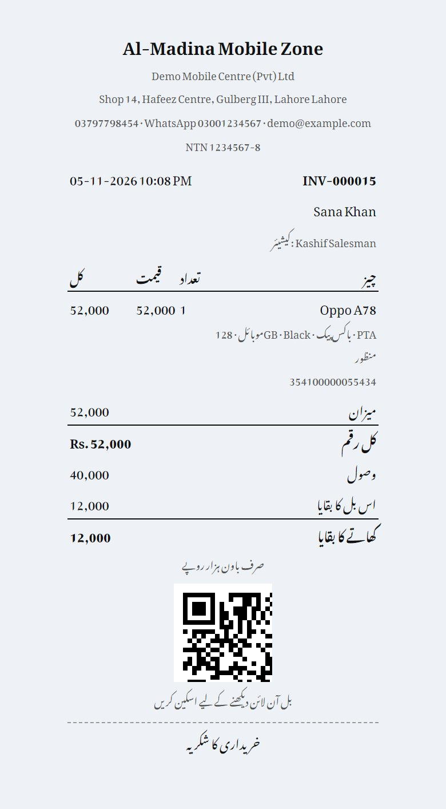
تصویر 15: QR والا چھپا ہوا بل
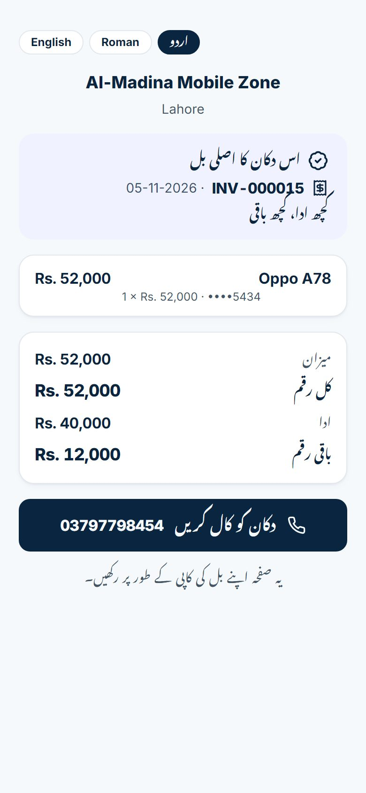
تصویر 16: QR سے کھلا ہوا بل
اس صفحے پر گاہک کا فون نمبر، شناختی کارڈ، خرید قیمت یا منافع کبھی نہیں آتا۔
اگر بعد میں بل واپس یا منسوخ ہو جائے تو صفحہ یہ بتا دیتا ہے۔
لنک اندازے سے نہیں بنایا جا سکتا اور نہ بدلا جا سکتا ہے: بدلا ہوا لنک "یہ بل نہیں ملا" دکھاتا ہے۔
QR کے بغیر بل چھاپنے ہوں تو مزید ← دکان کی سیٹنگز ← کاروبار کی پروفائل ← چھپا ہوا بل کھولیں اور بل آن لائن دیکھنے کا QR کوڈ سے ٹِک ہٹا دیں۔
9. واپسی
کبھی کبھی گاہک فون واپس لے آتا ہے: اس میں خرابی ہے، وہ اس کی پسند کا نہیں نکلا، یا بس اس کا ارادہ بدل گیا۔ واپسی والی اسکرین فون کو واپس آپ کے اسٹاک میں لے لیتی ہے، حساب لگاتی ہے کہ گاہک کو کتنے واپس دینے ہیں اور دکان کتنے رکھے گی، اور سب کچھ ریکارڈ میں لکھ دیتی ہے۔ کچھ بھی مٹایا نہیں جاتا: اصل بل ویسے ہی رہتا ہے، اور واپسی اس کے ساتھ اپنے نمبر سے جڑ جاتی ہے (مثلاً RET-000001)۔
واپسی تین چھوٹے مرحلوں میں ہوتی ہے: کیا واپس آیا؟، کتنے واپس دینے ہیں؟ اور ہو گیا۔
شروع کرنے سے پہلے
آپ کو بکا ہوا فون (یا وہ بل جس پر بکا تھا) چاہیے۔ اسے IMEI، خریدار کے نام یا خریدار کے فون نمبر سے ڈھونڈ سکتے ہیں۔
اگر فون کسی بغیر نام والے گاہک کو بکا تھا تو ایپ پوچھے گی کس نے واپس کیا؟ تاکہ رقم کسی بندے کے نام پر لکھی جائے۔
کتنے واپس دینے ہیں، یہ دکان طے کرتی ہے۔ ایپ کبھی پوری رقم واپس کرنے پر مجبور نہیں کرتی۔
فون واپس لیں، قدم بہ قدم
مثال:Usman Tariq نے Vivo Y17s نقد Rs. 37,000 میں خریدا۔ دو دن بعد وہ اسپیکر کی خرابی کی وجہ سے اسے واپس لے آیا۔ آپ اسے Rs. 35,000 واپس دینے پر راضی ہوتے ہیں اور زحمت کے Rs. 2,000 رکھ لیتے ہیں۔
ہوم پر واپسی دبائیں۔ آپ بکے ہوئے فون کا اپنا صفحہ کھول کر وہاں سے بھی واپسی دبا سکتے ہیں۔
مرحلہ 1/3 · کیا واپس آیا؟ میں ایک سرچ باکس بِکا ہوا فون IMEI، خریدار کے نام یا فون سے ڈھونڈیں اور حال ہی میں بکے فونوں کی لسٹ نظر آتی ہے۔ IMEI کا کچھ حصہ لکھیں (مثلاً 6706) یا Usman، یا اسکین دبا کر فون کا بارکوڈ یا IMEI اسکین کریں۔
لسٹ میں Vivo Y17s پر دبائیں۔ آپ یا حالیہ فروخت میں سے چنیں سے پورا بل بھی چن سکتے ہیں۔
مرحلہ 2 میں اس بل کی ہر لائن ٹک باکس کے ساتھ نظر آتی ہے۔ جس فون پر آپ نے دبایا وہ پہلے سے ٹک ہے۔ اگر بل پر چارجر یا کور بھی تھا جو واپس آ رہا ہے تو اسے بھی ٹک کریں۔ جو لائنیں پہلے واپس ہو چکی ہیں وہ ہلکی دکھتی ہیں اور ان پر واپس لکھا ہوتا ہے۔
اگر فروخت پر گاہک کا نام نہیں تھا تو کس نے واپس کیا؟ میں بندہ چنیں (یا نیا بندہ شامل کریں)۔
گاہک نے دیے تھے دکھاتا ہے کہ ٹک کی ہوئی لائنوں کے لیے گاہک نے اصل میں کتنے دیے: یہاں 37,000۔
کہاں سے لوٹائیں میں دبائیں کہ پیسے کہاں سے جائیں گے: نقد (آپ کا گلہ) یا آپ کا کوئی بینک / والٹ اکاؤنٹ۔ جانے پہچانے گاہک کے لیے کھاتے میں جمع بھی ہے: پیسے دیے نہیں جاتے، اس کے کھاتے میں رہتے ہیں اور وہ اگلی خریداری میں استعمال کر سکتا ہے۔
گاہک کو واپس دیے (روپے) میں پوری رقم پہلے سے بھری ہوتی ہے۔ اسے 35000 کر دیں۔ دکان نے کاٹے والا خانہ خود بخود 2,000 دکھائے گا۔
کیوں؟ (اگر بتانا ہو) میں وجہ لکھیں، مثلاً اسپیکر خراب۔
واپس لیں دبائیں۔
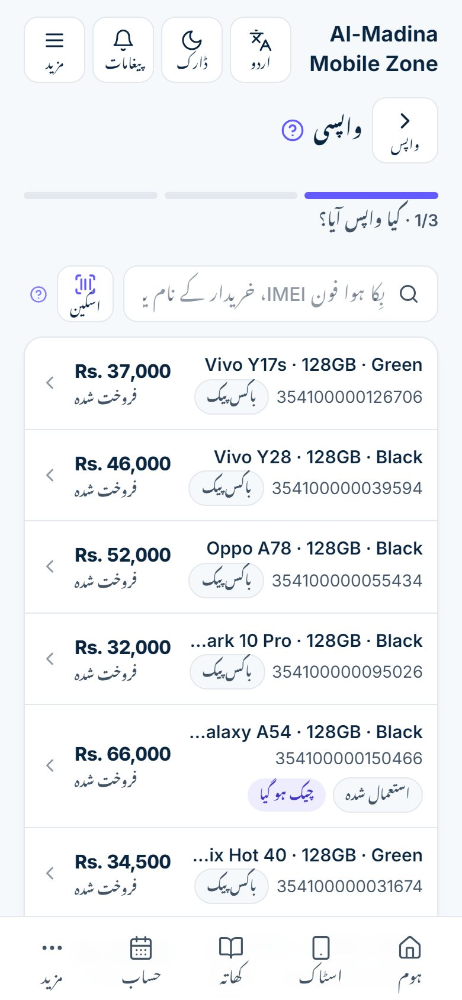
تصویر 17: واپسی کی اسکرین: بکا ہوا فون IMEI، نام یا فون سے ڈھونڈیں، یا اسکین کریں
آخری مرحلہ واپسی ہو گئی دکھاتا ہے، ساتھ واپس دی گئی رقم، دکان کی کاٹی ہوئی رقم اور واپسی کا نمبر۔ اس کے نیچے: فون واپس اسٹاک میں آ گیا۔ اگلی واپسی کے لیے ایک اور واپسی دبائیں، یا ہوم پر جائیں۔
اسکرین کے پیچھے کیا ہوتا ہے
فون کی حالت واپس اسٹاک میں ہو جاتی ہے اور اسے دوبارہ بیچا جا سکتا ہے۔ اس کی ہسٹری میں فروخت واپس کی لائن بندے، رقم اور وجہ کے ساتھ آ جاتی ہے۔
دکان نے جو Rs. 2,000 رکھے وہ آمدنی میں گنے جاتے ہیں۔ دن کے حساب میں واپسی پر دیے (Rs. 35,000) اور واپسی پر کاٹے (Rs. 2,000) الگ الگ لائنوں میں آتے ہیں، تاکہ نقدی کی گنتی پھر بھی ملے۔
اصل فروخت مٹائی نہیں جاتی۔ بل پر اور رپورٹوں میں واپس ہونے والی لائن کٹی ہوئی دکھتی ہے اور اس پر واپس لکھا ہوتا ہے۔
جو چارجر یا کور آپ نے ٹک کیا وہ اس چیز کی اسٹاک گنتی میں واپس جڑ جاتا ہے۔
ادھار پر بکا ہوا فون
اگر فون ادھار پر بکا تھا اور گاہک نے کچھ نہیں دیا تھا تو ایپ دکھاتی ہے اس کے پیسے نہیں دیے تھے، اُدھار سے کم ہو جائے گا۔ کوئی نقدی نہیں ہلتی: رقم بس اس کے ذمے ادھار سے کم ہو جاتی ہے۔
اگر اس نے کچھ حصہ دیا تھا تو صرف دیا ہوا حصہ ہی واپس ہو سکتا ہے؛ باقی اس کے ادھار سے کم ہو جاتا ہے۔
مثال: Bilal نے Rs. 50,000 کا فون لیا، Rs. 20,000 دیے اور Rs. 30,000 ادھار ہیں۔ وہ فون واپس کرتا ہے۔ گاہک نے دیے تھے میں 20,000 آتا ہے۔ آپ Rs. 18,000 نقد واپس دیتے ہیں اور دکان Rs. 2,000 کاٹتی ہے۔ اس فون کا Rs. 30,000 ادھار ختم ہو جاتا ہے۔
ابھی کچھ واپس، باقی بعد میں
جانے پہچانے گاہک کے لیے گاہک کو واپس دیے (روپے) میں وہ رقم لکھیں جو ابھی دے رہے ہیں۔ پھر باقی، جو ابھی واپس نہیں دیا پوچھتا ہے کہ باقی کہاں جائے: گاہک کا کھاتہ (ہم نے دینا ہے) اسے گاہک کا حق رکھتا ہے، دکان رکھے (کٹوتی) اسے دکان کی کٹوتی بناتا ہے۔ نیچے کا گہرا کارڈ صاف لکھتا ہے: گاہک کو دینا، گاہک سے لینا یا حساب برابر۔
مثال: علی نے 80,000 دیے تھے۔ آپ ابھی 30,000 دیتے ہیں اور گاہک کا کھاتہ دباتے ہیں: کارڈ گاہک کو دینا 50,000 دکھاتا ہے۔ بعد میں کھاتے سے (ادائیگی) دیں، مثلاً پہلے 20,000 پھر 30,000۔
بل کی قیمت سے کم کریڈٹ
اگر واپسی کے اصول کچھ رکھتے ہیں تو واپس آئی چیز کا کریڈٹ (روپے) بل کی قیمت سے کم کر دیں۔ فرق دکان کی کٹوتی ہے۔ اگر اس بل کا بقایا تھا تو کریڈٹ پہلے وہ ختم کرتا ہے۔
مثال: بل 80,000، علی نے 50,000 دیے (30,000 بقایا)۔ پورا کریڈٹ 80,000 ہو تو 30,000 ختم اور گاہک کو دینا 50,000 باقی۔ کریڈٹ صرف 25,000 ہو تو گاہک سے لینا 5,000 باقی۔
10. ایکسچینج
ایکسچینج (یا اپ گریڈ) یہ ہے کہ گاہک اپنا پرانا فون دے اور نیا فون لے، اور فرق کے پیسے دے۔ ایکسچینج / اپ گریڈ والی اسکرین دونوں کام ایک ساتھ کرتی ہے: پرانا فون خرید کر آپ کے اسٹاک میں ڈالتی ہے اور نیا فون بیچتی ہے، اور فرق کا حساب خود لگاتی ہے۔
اس کے چار مرحلے ہیں: گاہک، پرانا فون، نیا فون، اور حساب۔
ایکسچینج کریں، قدم بہ قدم
مثال:Bilal Ahmed اپنا پرانا Oppo A17 لاتا ہے۔ آپ اس کی قیمت Rs. 18,000 لگاتے ہیں۔ وہ Rs. 54,000 والا Infinix Note 40 لیتا ہے۔ فرق Rs. 36,000 ہے۔ وہ ابھی Rs. 30,000 دیتا ہے، اور Rs. 6,000 اس کے کھاتے میں جاتے ہیں۔
مزید ← ایکسچینج (پرانا دے کر نیا) پر جائیں۔ اسکرین کا نام ایکسچینج / اپ گریڈ ہے۔
مرحلہ 1/4 · گاہک: گاہک منتخب کریں میں نام، فون یا CNIC سے ڈھونڈیں اور Bilal Ahmed پر دبائیں۔ اگر وہ نیا ہے تو + کا بٹن دبا کر شامل کریں۔ ہر نام کے ساتھ اس کا موجودہ حساب نظر آتا ہے، مثلاً مجھے لینے ہیں (اس نے آپ کو دینے ہیں) یا مجھے دینے ہیں (آپ نے اسے دینے ہیں)۔ اگلا دبائیں۔
پرانا موبائل درج کریں دبائیں۔ اسے بالکل فون خریدنے کی طرح بھریں: IMEI 358812091717195، برانڈ Oppo، ماڈل A17، اسٹوریج، رنگ، حالت اور PTA کی حالت۔ خرید قیمت میں 18000 لکھیں: یہ پرانے فون کی قیمت ہے۔ اگر آپ کو پہلے سے پتہ ہے کہ اسے کتنے میں بیچیں گے تو فروخت کی قیمت لکھیں، مثلاً 22000۔ شامل کریں دبائیں، پھر اگلا۔
پرانا فون اب ایک کارڈ کی شکل میں اپنی قیمت کے ساتھ نظر آتا ہے۔ اگر غلطی ہو گئی تو پرانا موبائل بدلیں دبائیں۔
اسٹاک سے نیا موبائل چنیں: Infinix Note 40 پر دبائیں۔ فروخت قیمت (54000) دیکھ لیں اور اگلا دبائیں۔
حساب دونوں فون دکھاتا ہے، پھر نیا موبائل 54,000، پرانے فون کی قیمت منفی 18,000 (اور پچھلا بقایا اگر اس کے ذمے پہلے سے کچھ تھا)، اور ایک رنگین کارڈ جو لفظوں میں بتاتا ہے: فرق گاہک دے گا Rs. 36,000۔
ابھی ادا میں لکھیں: 30000۔ اس کے نیچے ایپ یاد دلاتی ہے: اس سے کم: باقی ان کے کھاتے پر جائے گا۔نیا بقایا اس ایکسچینج کے بعد اس کا پورا کھاتہ دکھاتا ہے: اگر پہلے اس کے ذمے کچھ نہیں تھا تو 6,000 دکھائے گا۔
ایکسچینج مکمل کریں دبائیں۔
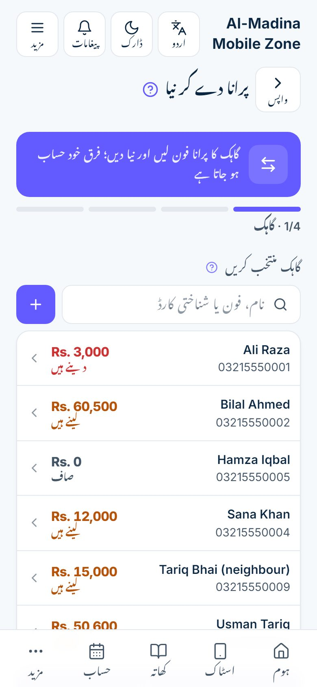
تصویر 18: ایکسچینج / اپ گریڈ، مرحلہ 1: گاہک چنیں
اسکرین ایکسچینج مکمل دکھاتی ہے، ساتھ رسید پرنٹ کرنے (80mm تھرمل یا A4)، ڈاؤن لوڈ یا شیئر کرنے، بل کھولیں، یا ایک اور ایکسچینج شروع کرنے کے بٹن۔
جب پرانا فون زیادہ قیمت کا ہو
کبھی گاہک کا فون اس فون سے زیادہ قیمت کا ہوتا ہے جو وہ لے رہا ہے۔ تب کارڈ کہتا ہے فرق آپ واپس دیں گے، اور خلاصے میں گاہک کو واپسی آتا ہے۔ اگر دونوں برابر ہوں تو لکھا آتا ہے کسی کو کچھ نہیں دینا۔
جب فرق دکان نے دینا ہو تو ابھی پورا، کچھ یا کچھ نہیں دے سکتے ہیں: دکان ابھی دے (روپے) بدلیں۔ جو نہ دیا وہ گاہک کے کھاتے میں رہتا ہے اور گہرا کارڈ رقم کے ساتھ گاہک کو دینا لکھتا ہے۔ جب گاہک نے دینا ہو تو کم ابھی وصول سے گاہک سے لینا باقی رہتا ہے۔ ابھی کی رقم کا طریقہ چنیں: نقد، آن لائن یا چیک۔
اگر پرانا فون وہی ہے جو آپ کی دکان نے پہلے اسے بیچا تھا تو ایکسچینج پہلی فروخت قائم رکھتا ہے، فون طے شدہ قیمت پر اسٹاک میں واپس لاتا ہے اور پہلا بل جوڑ دیتا ہے (مکمل اسکرین پر پہلا بل)۔ چھپے بل پر پرانا فون واپس لیا ایکسچینج نمبر کے ساتھ، ابھی وصول، اور آخر میں گاہک سے لینا یا گاہک کو دینا آتا ہے۔
مثال: علی نے فون 80,000 کا لیا۔ آپ اسے 70,000 میں واپس لیتے ہیں اور وہ 55,000 کا فون لیتا ہے؛ دکان نے 15,000 دینے ہیں۔ ابھی 5,000 دیے: گاہک کو دینا 10,000۔ بعد میں کھاتے سے پہلے 4,000 پھر 6,000 دیں۔
ایکسچینج کے بعد
پرانا فون اب آپ کے اسٹاک میں ہے، Bilal سے Rs. 18,000 میں خریدا ہوا۔ اس کا اپنا صفحہ اور ہسٹری ہے، باقی ہر خریداری کی طرح۔
چونکہ پرانا فون گاہک سے آیا ہے، اس کا شناختی کارڈ چیک (CNIC، اقرار نامہ وغیرہ) بالکل ویسے کریں جیسے کسی بھی پرانے خریدے ہوئے فون کا کرتے ہیں۔ پرانے ٹیبلٹ اور گھڑیوں کا لاک چیک بھی کریں۔
نیا فون عام بل پر بکتا ہے۔ منافع، دن کا حساب اور Bilal کا کھاتہ سب ایک ساتھ اپ ڈیٹ ہو جاتے ہیں۔
11. اسٹاک، IMEI چیک اور فون کی ہسٹری
آپ کا سارا مال اسٹاک میں ہے۔ یہاں سے آپ دیکھ سکتے ہیں کہ اسٹاک کتنے کا ہے، کوئی بھی فون سیکنڈوں میں ڈھونڈ سکتے ہیں، چیک کر سکتے ہیں کہ کوئی IMEI پہلے آپ کی دکان میں آیا ہے یا نہیں، اور کسی فون کی آنے کے دن سے پوری کہانی کھول سکتے ہیں۔
اسٹاک کتنے کا ہے؟
نیچے والی پٹی میں اسٹاک دبائیں۔ پہلی اسکرین ہے اسٹاک کتنے کا ہے؟
اوپر: آپ کے پاس کتنے فون ہیں اور ان کی کل مالیت (رقم بڑی ہو تو لاکھ میں)۔
نیچے: ہر برانڈ کی ایک لائن، کتنے فون اور ان کی مالیت۔ برانڈ پر دبا کر اس کے ماڈل دیکھیں۔
سب فون دیکھیں پوری اسٹاک لسٹ کھولتا ہے۔ ڈاؤن لوڈ یہی حساب فائل کی شکل میں دیتا ہے۔
مالک اور منیجر کو مالیت لاگت پر دکھتی ہے۔ جس اسٹاف کو خرید قیمت دیکھنے کی اجازت نہیں، اسے فروخت کی قیمت پر دکھتی ہے۔
اسٹاک لسٹ
اسے سب فون دیکھیں سے کھولیں، یا مزید ← اسٹاک لسٹ سے۔
اوپر پانچ بٹن ہیں: ڈاؤن لوڈ، شیئر، اسٹیکرز، IMEI چیک کریں اور اسٹاک ڈالیں۔ ان کے نیچے:
تلاش: IMEI، ماڈل، برانڈ، یا جس سے خریدا یا جسے بیچا اس کا نام یا فون نمبر لکھیں۔ کیمرہ استعمال کرنے کے لیے اسکین دبائیں، یا سیدھا USB اسکینر سے اسکین کریں۔
برانڈ کے گول بٹن: سب، پھر ہر برانڈ کا ایک گول بٹن اس کی گنتی کے ساتھ (مثلاً Apple · 2، Samsung · 2)۔ کسی پر دبائیں تو صرف وہی برانڈ دکھے گا۔
حالت کے بٹن: اسٹاک میں، امانت پر، فروخت، خراب اور سب۔
فلٹر: مزید انتخاب کھولتا ہے: گریڈ (Used A، Used B، Refurbished، Copy / China)، ریم (GB)، قیمت کی حد (کم سے کم اور زیادہ سے زیادہ فروخت قیمت)، اور ایک سوئچ لاک چیک نہیں ہوا جو صرف وہ پرانے موبائل دکھاتا ہے جن کا لاک چیک کبھی نہیں ہوا۔
اسٹاک کی قسم: سارا اسٹاک، موبائل، ٹیبلٹ، اسمارٹ واچ یہ فہرست چھانتے ہیں۔ ایکسیسریز، اسپیئر پارٹس اور دیگر اشیاء والی اسکرین اسی قسم کے ساتھ کھولتے ہیں (اشیاء تعداد سے گنی جاتی ہیں)۔
حالت کے کارڈ: بیچنے کے لیے تیار (اسٹاک میں اور تیار؛ نیچے دکان میں، دکان کا ہر فون)، گاہک کے پاس (منظوری)، جانچ میں (شناخت چیک باقی یا مشکوک، یا لاک باقی)، مرمت میں، خراب، اشیاء کے لیے کم اسٹاک اور ختم (ہر شے کی اپنی حد سے)، اور مالک و منیجر کے لیے خرید کے حساب سے مالیت۔ کارڈ پر ٹیپ کریں تو صرف وہی فون؛ دوبارہ ٹیپ تو سب۔ دیکھنے سے کچھ نہیں بدلتا۔
مزید فلٹر: حالت، PTA، اسٹاک کی عمر (30+ / 60+ / 90+ دن)، جس سے خریدا (ڈیلر)، اور مالک و منیجر کے لیے خرید کی حد۔
کوئی فون کھول کر واپس آئیں: چنی ہوئی قسم، کارڈ، حالت، فلٹر اور ترتیب ویسے ہی رہتے ہیں۔
کارڈ / ٹیبل / گرڈ / لسٹ: فون کیسے دکھیں۔ کارڈ نیچے بتائے گئے بڑے کارڈ ہیں۔ ٹیبل ایکسل کی طرح ہے: ہر فون کی ایک لائن اور ہر تفصیل کا ایک کالم (میموری، رنگ، حالت، PTA، بیٹری، IMEI، دن، خرید جو صرف مالک اور منیجر دیکھتے ہیں، فروخت کی قیمت، حالت)۔ کالم کے نام کو دبائیں تو اسی سے ترتیب ہو جاتی ہے، دوبارہ دبائیں تو الٹی ترتیب۔ آخری لائن خرید اور فروخت کا جوڑ دکھاتی ہے؛ فون پر ٹیبل کو سائیڈ پر کھسکائیں۔ گرڈ میں چھوٹے خانے ہوتے ہیں، ایک اسکرین پر بہت سے۔ لسٹ میں ہر فون کی ایک چھوٹی لائن ہوتی ہے۔ ایپ آپ کا انتخاب اسی فون یا کمپیوٹر پر یاد رکھتی ہے۔
فیلڈز: جو تفصیل دیکھنی ہو اس پر نشان لگائیں (میموری، رنگ، حالت، PTA، بیٹری، ریجن، IMEI، دن، خرید، فروخت وغیرہ)۔ یہ چاروں انداز میں لگتا ہے۔ ساتھ ڈاؤن لوڈ اور شیئر ہیں جو PDF / ایکسل / CSV انہی کالموں، آپ کے فلٹر اور اسی ترتیب سے بناتے ہیں۔
فلٹر کے نیچے ایپ بتاتی ہے کہ کتنے فون ملے، مثلاً 7 موبائل۔ ہر فون ایک کارڈ ہے جس پر اس کا نام، رنگ اور اسٹوریج، فروخت کی قیمت، اور چار چھوٹے خانے ہیں: میموری، پی ٹی اے، حالت اور دن (کتنے دن سے دکان میں ہے)۔ نیچے IMEI، شناخت چیک کا نشان اور بیچیں کا بٹن ہے۔
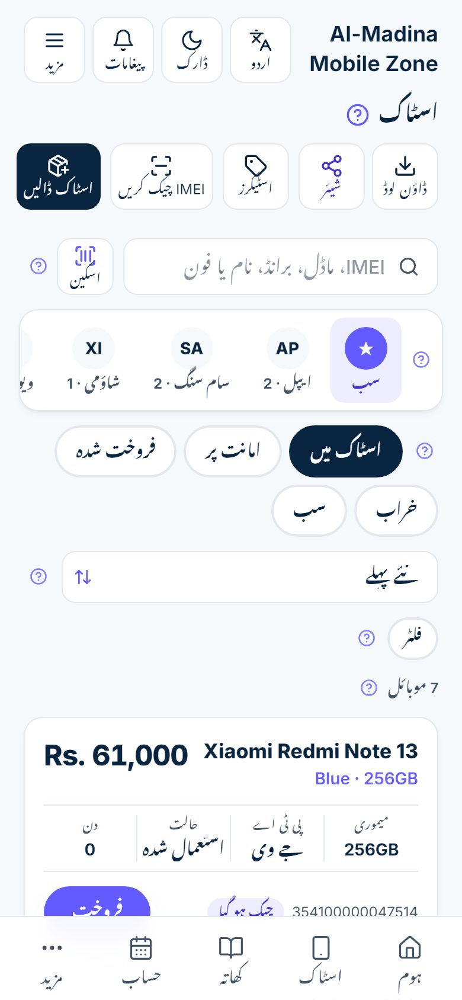
تصویر 19: اسٹاک لسٹ: تلاش، برانڈ کے گول بٹن، حالت کے بٹن اور فلٹر
اسٹاک لسٹ میں ٹیبلٹ اور سمارٹ واچ
ٹیبلٹ اور سمارٹ واچ فونوں کے ساتھ اسی اسٹاک میں رہتے ہیں۔ ان کے کارڈ وہ دکھاتے ہیں جو اس قسم کے لیے ضروری ہے: گھڑی اپنے کیس کا سائز اور GPS یا سم دکھاتی ہے؛ ٹیبلٹ وائی فائی یا سم دکھاتا ہے۔ جس موبائل میں سم نہیں اس کا IMEI نہیں ہوتا، اس لیے اس کا سیریل نمبر دکھایا اور ڈھونڈا جاتا ہے۔
بیچتے وقت صرف ایک قسم دیکھنے کے لیے فروخت کی اسکرین پر اسٹاک کے اوپر سب · موبائل · ٹیبلٹ · سمارٹ واچ کے بٹن استعمال کریں۔
قسم کے حساب سے گنتی اور مالیت کے لیے رپورٹس ← قسم کے حساب سے (قسم وار اسٹاک) پر جائیں: تعداد، لاگت پر اور فروخت قیمت پر مالیت، کتنے استعمال شدہ ہیں، کتنوں کا لاک چیک نہیں ہوا یا لاک ابھی لگا ہے، کتنے نان پی ٹی اے / جے وی ہیں، اور کتنے 60 دن سے پرانے ہیں۔
اگر کوئی موبائل غلط قسم میں درج ہو گیا (مثلاً ٹیبلٹ موبائل کے طور پر محفوظ ہو گیا) تو مالک اسے اسٹاک لسٹ میں ٹک کر کے قسم بدلیں استعمال کر سکتا ہے۔ ہسٹری، IMEI یا سیریل، بارکوڈ اور حساب بالکل ویسے ہی رہتے ہیں؛ صرف قسم بدلتی ہے، اور یہ تبدیلی ہسٹری میں لکھی جاتی ہے۔
IMEI چیک کریں ("کیا یہ فون پہلے یہاں آیا ہے؟")
پرانا فون خریدنے سے پہلے یہ دیکھ لینا اچھا ہے کہ کہیں یہ پہلے آپ کی دکان سے تو نہیں گزرا۔
15 ہندسے لکھیں، یا اسکین دبا کر کیمرہ ڈبے پر لگے IMEI بارکوڈ کی طرف کریں۔ آپ فون پر *#06# ملا کر اسکرین بھی اسکین کر سکتے ہیں۔
جواب ان میں سے ایک ہوگا:
آپ کو کیا نظر آتا ہے
اس کا مطلب
نیا IMEI، پہلے نہیں آیا
یہ فون کبھی آپ کی دکان میں نہیں آیا۔
یہ IMEI پہلے آپ کی دکان میں آ چکا ہے · 1 بار خریدا
آپ یہ فون پہلے خرید چکے ہیں۔ اس پر دبا کر پوری ہسٹری کھولیں: کس نے آپ کو بیچا، آپ نے کس کو بیچا، وغیرہ۔
IMEI کا چیک ہندسہ غلط ہے، دوبارہ دیکھیں
نمبر غلط لکھا گیا ہے۔ ہر اصلی IMEI کا ایک آخری "چیک ہندسہ" ہوتا ہے؛ یہ والا نہیں ملتا۔
فون کا اپنا صفحہ
اسٹاک لسٹ میں کسی بھی فون پر دبا کر اس کا صفحہ کھولیں۔ اوپر والا گہرا کارڈ دکھاتا ہے:
IMEI (یا سیریل) اور حالت، مثلاً اسٹاک میں، امانت پر، فروخت، مرمت میں یا خراب؛
بارکوڈ (مثلاً MS000006)، اسٹوریج اور رنگ؛
حالت کے نشان (استعمال شدہ، باکس پیک...)، پی ٹی اے (پی ٹی اے منظور، نان پی ٹی اے، جے وی)، لاک چیک (لاک چیک نہیں ہوا یا لاک صاف) اور شناخت چیک (شناخت چیک ہو گیا، شناخت چیک باقی)؛
فروخت کی قیمت اور، صرف مالک اور منیجر کے لیے، لاگت۔
کارڈ کے نیچے دو بڑے بٹن ہیں، بیچیں اور شناختی کارڈ چیک، اور پھر کام:
بٹن
کیا کرتا ہے
امانت پر دیں
یہ فون کسی دوسری دکان کو دیں (باب 15)۔
خراب نشان لگائیں
ٹھیک ہونے تک اسے بکنے والے اسٹاک سے نکال دیں۔
مرمت کے لیے بھیجیں
اپنے فون کی ریپئر جاب کھولیں (باب 14)۔
اسٹیکر پرنٹ کریں
بارکوڈ والا قیمت کا اسٹیکر پرنٹ کریں (باب 12)۔
قیمت بدلیں
نئی فروخت کی قیمت لگائیں؛ پرانی ہسٹری میں رہتی ہے۔
نوٹ لکھیں
جو یاد رکھنا ہو لکھیں، آپ کے نام اور وقت کے ساتھ۔
تفصیل تبدیل کریں
اسٹوریج، رنگ اور ایسی تفصیل درست کریں۔
لاک چیک
پرانے موبائل کے iCloud / Google (FRP) / اکاؤنٹ لاک چیک درج کریں۔
واپسی
بکے ہوئے فون پر دکھتا ہے: واپسی شروع کریں (باب 9)۔
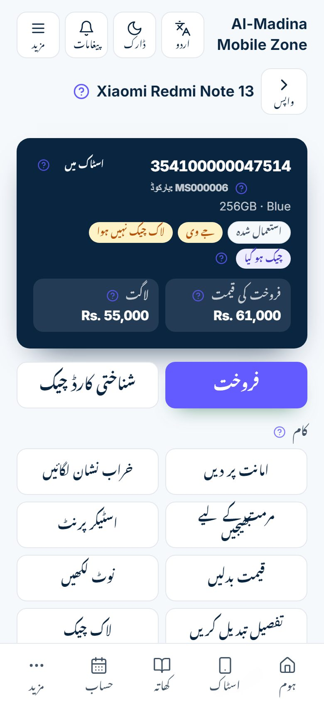
تصویر 20: فون کا اپنا صفحہ: IMEI، بارکوڈ، نشان، فروخت کی قیمت اور لاگت، اور کام کے بٹن
اس موبائل کا پیسہ
صفحے پر نیچے اس موبائل کا پیسہ کا کارڈ ہے۔ یہ بتاتا ہے "یہ فون کتنے کا پڑا، کتنے میں بکا، اور کیا ابھی کچھ باقی ہے؟"
لاگت، ابھی دینے ہیں، کتنے میں بکا، ابھی لینے ہیں اور منافع ایک لائن میں۔
کس سے خریدا: کس نے آپ کو بیچا، خریداری کا بل، طے شدہ قیمت، اس وقت آپ نے کتنے دیے، بعد کی ہر ادائیگی، اور کتنے ابھی دینے ہیں۔
کس کو بیچا: فروخت کے لیے یہی: طے شدہ قیمت، اسی وقت وصول، بعد کی ادائیگیاں، اور کتنے ابھی لینے ہیں۔
اس موبائل کی ادائیگی اور اس موبائل کی وصولی: ایسی ادائیگی لیں یا دیں جو اسی بل کے خلاف درج ہو، تاکہ فون کا حساب اور بندے کا کھاتہ ایک ساتھ چلیں۔
مثال: آپ نے Ahmed سے Vivo Rs. 35,000 میں خریدا اور Rs. 30,000 دیے (آپ نے اسے Rs. 5,000 دینے ہیں)۔ آپ نے اسے Bilal کو Rs. 40,000 میں بیچا اور اس نے Rs. 35,000 دیے (اس کے ذمے Rs. 5,000)۔ بعد میں آپ Ahmed کو Rs. 2,000 دیتے ہیں اور Bilal آپ کو Rs. 3,000 دیتا ہے۔ اب کارڈ دکھاتا ہے لاگت 35,000، ابھی دینے ہیں 3,000، بکا 40,000، ابھی لینے ہیں 2,000، منافع 5,000۔ Ahmed اور Bilal کے کھاتوں میں بالکل یہی رقمیں نظر آتی ہیں۔
اگر فون پرانے اسٹاک کے طور پر درج ہوا تھا تو کارڈ پر لکھا آتا ہے پرانا اسٹاک: لاگت کے ساتھ درج، خریداری کا بل نہیں۔
IMEI یا بیچنے والا غلط لکھا گیا
یہ صرف مالک یا منیجر درست کر سکتے ہیں، اور ہر ایک کے لیے مختصر وجہ لکھنی ہوتی ہے۔ کچھ مٹایا نہیں جاتا: فون کی ہسٹری میں درست کیا کی لائن پرانی چیز، نئی چیز اور وجہ کے ساتھ آتی ہے۔
غلط IMEI: فون کھولیں، IMEI درست کریں دبائیں، صحیح IMEI 1 لکھیں (اور IMEI 2، یا نشان لگائیں کہ اس فون کا IMEI 2 نہیں)، وجہ لکھیں اور محفوظ کریں دبائیں۔ نمبر 15 ہندسوں کا ہو اور دکان کے کسی اور فون کا نہ ہو۔ بارکوڈ وہی رہتا ہے۔
غلط ڈیلر یا گاہک: خریداری کھولیں (مزید ← خریداریاں، یا فون کی ہسٹری میں خریداری والی لائن پر ٹیپ)، ڈیلر / گاہک بدلیں دبائیں، صحیح شخص چنیں، وجہ لکھیں اور محفوظ کریں دبائیں۔ بل اور اس کے ساتھ دی گئی رقم صحیح شخص کے کھاتے میں چلی جاتی ہے؛ غلط شخص کا کھاتہ پہلے جیسا ہو جاتا ہے۔ اگر بعد میں اس بل کی ادائیگی ہو چکی ہو یا کچھ واپس ہوا ہو تو یہ نہیں ہو سکتا: پہلے وہ ختم کریں۔
فون یا اشیاء گاہک کے لیے ریزرو
فون کے صفحے پر گاہک کے لیے ریزرو دبائیں، گاہک چنیں، اور چاہیں تو کب تک اور نوٹ (مثلاً "ایڈوانس 5,000")۔ صفحہ پھر نام کے ساتھ ریزرو برائے دکھاتا ہے۔ فون اسٹاک میں رہتا ہے مگر بیچنے کے لیے تیار میں نہیں گنا جاتا، اسٹاک اسکرین پر ریزرو کا کارڈ ہے، اور کسی اور کو بیچنے کی کوشش رک جاتی ہے۔ اسی گاہک کو بیچنے سے ریزرو خود ختم ہو جاتا ہے؛ وہ نہ آئے تو ریزرو ختم کریں دبائیں۔ شے کے صفحے پر گاہک کے لیے ریزروکتنے پوچھتا ہے: دوسرے صرف باقی پیس خرید سکتے ہیں۔ کوئی رقم یا اندراج نہیں ہوتا؛ فون کی ہسٹری میں ریزرو ہوا اور ریزرو ختم آتا ہے۔
شیلف / جگہ
فون شامل یا ترمیم کرتے وقت شیلف / جگہ (اختیاری) بتاتا ہے کہ فون کہاں رکھا ہے، مثلاً ریک A2۔ یہ فون کی لائن پر دکھتا ہے، اور اسٹاک کی تلاش اور شیلف / جگہ فلٹر اسے ڈھونڈ لیتے ہیں۔
جس سے خریدا وہ بدلیں
فون کے صفحے پر ڈیلر / گاہک بدلیں دبائیں: اس کی خریداری بدلنے کے لیے تیار کھلتی ہے (اوپر "IMEI یا بیچنے والا غلط لکھا گیا" دیکھیں)۔ اشیاء کے لیے خریداری شے کی حرکتوں سے یا مزید ← خریداریاں سے کھولیں۔
صفحے کا انداز: پرانا، اسمارٹ، ٹیب، خانے، مختصر
فون کے صفحے کے اوپر سے چن سکتے ہیں کہ صفحہ کیسا دکھے۔ یہ انتخاب اسی فون یا کمپیوٹر پر یاد رہتا ہے۔
پرانا: پہلے والا صفحہ۔
اسمارٹ: ہر چیز کے ساتھ اس کا کام۔ IMEI کے ساتھ کاپی اور IMEI درست کریں، قیمت کے ساتھ فروخت کی قیمت بدلیں، شیلف کے ساتھ بدلیں، بارکوڈ کے ساتھ اسٹیکر، شناخت چیک کے ساتھ تصدیق۔ اوپر بیچیں ہے۔ جس سے خریدا (یا جسے بیچا) وہ باقی رقم کے ساتھ دکھتا ہے، ساتھ دیں / وصول کریں، بل کھولیں اور بدلیں۔ نیچے ہسٹری۔
ٹیب: یہی صفحہ فون، گاہک اور رقم اور ہسٹری میں۔
خانے: بڑے خانے؛ دبائیں تو بدلنے کا کام کھلتا ہے (قیمت، IMEI، حالت، شیلف، اسٹیکر، شناخت چیک)۔
مختصر: ایک چھوٹی فہرست، اور نیچے بیچیں کا بٹن ہمیشہ موجود۔
سب انداز ایک ہی کام کرتے ہیں؛ جو کام کسی چیز کے ساتھ نہیں وہ مزید کام میں ہیں۔
پوری ہسٹری
صفحے کے آخر میں ہسٹری ہے: اس فون کے ساتھ جو کچھ بھی ہوا اس کی ایک ٹائم لائن، نیا سب سے اوپر۔ ہر لائن میں تاریخ، بندہ، رقم اور وہ اسٹاف ممبر ہوتا ہے جس نے یہ کام کیا۔ آپ کو ایسی لائنیں نظر آئیں گی:
خریدا (بل اور جس سے خریدا) اور بارکوڈ لگا؛
تصدیق ہوئی (شناخت چیک، مثلاً "بیچنے والے کا CNIC کاؤنٹر پر دیکھا")؛
قیمت بدلی (پرانی اور نئی فروخت کی قیمت)؛
بیچا انوائس نمبر کے ساتھ (مثلاً INV-000017)، اسی وقت وصول اور لینے باقی؛
فروخت واپس واپسی کے نمبر کے ساتھ (مثلاً RET-000001)، واپس کی گئی رقم اور وجہ؛
امانت پر دیا، امانت واپس، مرمت کو بھیجا، مرمت سے واپس، خراب، لیبل پرنٹ ہوا، نوٹ۔
ہسٹری کی لائنیں کبھی تبدیل یا ختم نہیں ہو سکتیں۔ غلطی نئی لائن سے درست ہوتی ہے، اس لیے ٹائم لائن ہمیشہ سچی کہانی بتاتی ہے۔ ہسٹری کے اوپر ڈاؤن لوڈ یا شیئر دبا کر اسے فائل کی شکل میں بھیجیں، مثلاً اس گاہک کو جو ثبوت چاہتا ہو کہ فون کہاں سے آیا۔
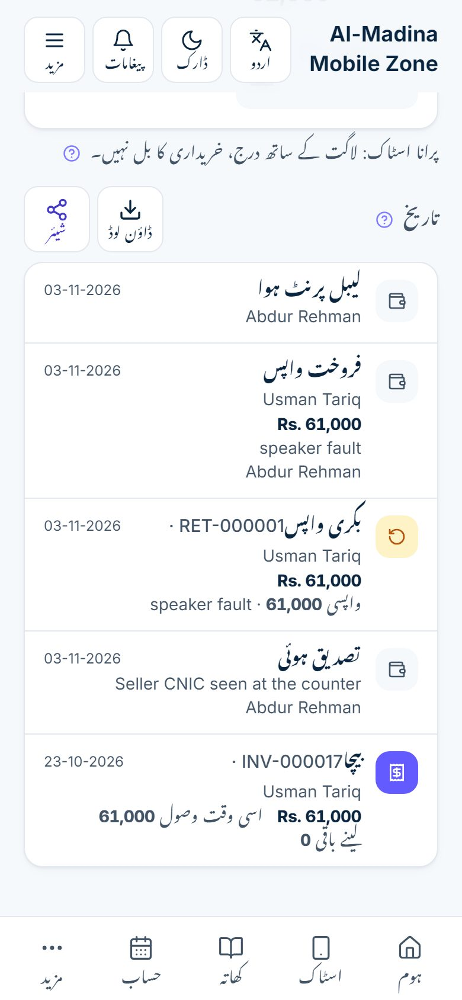
تصویر 21: فون کی ہسٹری: بیچا، تصدیق ہوئی، فروخت واپس، ہر ایک تاریخ، بندے اور رقم کے ساتھ
اسکینر سے اسٹاک گنتی
مہینے میں ایک بار (یا جب بھی لگے کہ کچھ کم ہے) اسکینر سے شیلف گنیں۔ ایپ بتاتی ہے کہ کیا غائب ہے اور کیا یہاں نہیں ہونا چاہیے۔
مزید ← اسٹاک گنتی پر جائیں۔ (مالک اور منیجر۔)
شیلف کا ہر فون اور ہر چیز ایک کے بعد ایک اسکین کریں۔ USB یا Bluetooth اسکینر سب سے تیز ہے، لیکن آپ کوڈ لکھ کر Enter دبائیں میں کوڈ لکھ بھی سکتے ہیں۔ بڑا نمبر دکھاتا ہے کہ کتنے سکین ہوئے۔
چارجروں کا ایک ہی ڈبہ پانچ بار اسکین کریں تو پانچ عدد گنے جاتے ہیں۔
شیلف مکمل ہو جائے تو سٹاک سے ملائیں دبائیں۔
نتیجے میں تین لسٹیں ہیں: ملے (اسکین ہوئے اور اسٹاک میں ہیں)، غائب (اسٹاک میں ہونے چاہییں مگر اسکین نہیں ہوئے) اور یہاں نہیں ہونا چاہیے (اسکین ہوئے، لیکن ایپ کے مطابق بک چکے ہیں، امانت پر ہیں، یا بالکل انجانے ہیں)۔ چیزوں کے لیے آپ کو 10 میں سے 8 سکین نظر آتا ہے اور یہ کہ گنتی برابر ہے یا فرق ہے۔
لسٹ میں کسی بھی فون پر دبا کر اس کا صفحہ کھولیں اور معاملہ سلجھائیں۔ صاف کریں یا نئی گنتی شروع کریں سے دوبارہ شروع کریں۔
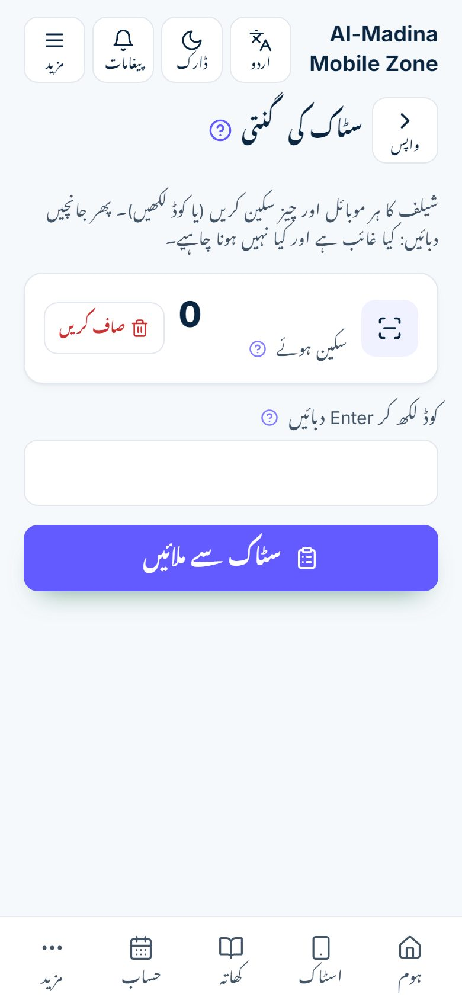
تصویر 22: اسٹاک گنتی: سب کچھ اسکین کریں، پھر سٹاک سے ملائیں
مثال: ایپ کہتی ہے 12 موبائل سٹاک میں ہونے چاہییں۔ آپ 11 اسکین کرتے ہیں۔ غائب میں ایک Samsung A15 آتا ہے۔ آپ اسے کھولتے ہیں اور ہسٹری میں دیکھتے ہیں کہ کل Star Mobiles کو امانت پر دیا گیا تھا، لیکن کبھی درج نہیں ہوا تھا۔ یا وہ واقعی غائب ہے، اور اب آپ کو پتہ ہے کہ کون سا۔
دوسری برانچ کو اسٹاک بھیجنا
اگر آپ کی ایک سے زیادہ برانچیں ہیں تو آپ ان کے درمیان موبائل اور آئٹمز بھیج سکتے ہیں۔ کچھ بکتا نہیں: اسٹاک اپنی خرید کی قیمت پر اس دکان سے نکلتا ہے اور اسی قیمت پر برانچ میں آتا ہے، اس لیے منافع نہیں بدلتا۔
موبائل کھولیں اور دوسری برانچ کو بھیجیں دبائیں (یا آئٹم کھول کر یہی بٹن دبائیں، یا مزید ← برانچ ٹرانسفر ← برانچ کو بھیجیں پر جائیں)۔
کس برانچ کو کے نیچے برانچ دبائیں۔
مزید موبائل کے لیے موبائل شامل کریں دبائیں (تلاش کریں یا IMEI یا بارکوڈ اسکین کریں)، اور چارجر، کور اور دوسری چیزوں کے لیے آئٹم شامل کریں۔ + اور − سے پیس کی تعداد رکھیں۔
نیچے جانے والے اسٹاک کی مالیت (خرید پر) دیکھیں، پھر ابھی بھیجیں دبائیں۔
مثال: صدر ایک Galaxy A04 (خرید Rs. 40,000) اور 2 چارجر (Rs. 900 والے) مال روڈ کو بھیجتا ہے۔ صدر کا اسٹاک Rs. 41,800 کم ہوتا ہے اور مال روڈ کا Rs. 41,800 بڑھتا ہے۔
اس دکان میں موبائل پر برانچ کو بھیجا لکھا آتا ہے؛ اس کی پوری ہسٹری یہیں رہتی ہے۔
برانچ میں وہ اسی IMEI، بارکوڈ اور فروخت کی قیمت کے ساتھ اسٹاک میں ہوتا ہے، اور اس کی پہلی لائن بتاتی ہے کہ وہ آپ کی دوسری برانچ سے آیا۔
مزید ← برانچ ٹرانسفر میں سب بھیجا اور آیا ہوا مال TRF-000001 جیسے نمبر کے ساتھ دکھتا ہے۔
12. قیمت کے اسٹیکر، بارکوڈ اور اسکیننگ
Mobile Shop میں ہر فون اور ہر چیز کو خریدتے ہی اپنا بارکوڈ مل جاتا ہے۔ آپ اسے ایک چھوٹے قیمت کے اسٹیکر پر پرنٹ کر کے ڈبے پر لگاتے ہیں، اور اس کے بعد ایک اسکین سے فون مل جاتا ہے: کاؤنٹر پر، واپسی میں، اسٹاک گنتی میں۔ 15 ہندسوں والے IMEI لکھنے کی ضرورت ختم۔
بارکوڈ کیسے ملتے ہیں
جب آپ اسٹاک ڈالتے ہیں تو ہر فون کو MS000006 جیسا بارکوڈ ملتا ہے (آپ کی دکان کا سابقہ اور ایک نمبر)۔ چارجر جیسی چیزوں کو ہر چیز کا ایک بارکوڈ ملتا ہے، ہر عدد کا الگ نہیں۔
بارکوڈ کبھی نہیں بدلتا اور کبھی کسی اور چیز کو نہیں دیا جاتا۔ اگر آپ فون بیچ کر بعد میں واپس خریدیں تو اس کا پرانا بارکوڈ ہی رہتا ہے۔
بارکوڈ فون کے صفحے پر IMEI کے نیچے (بارکوڈ: MS000006) اور ہر چیز کی لائن پر نظر آتا ہے۔
جس ڈبے پر پہلے سے کمپنی کا بارکوڈ ہو وہ بھی چل سکتا ہے: خریدتے وقت اسے کمپنی کا بارکوڈ (اختیاری) میں اسکین کریں۔ آپ اپنا بارکوڈ (اختیاری) میں اپنا کوڈ بھی لکھ سکتے ہیں۔
قیمت کا اسٹیکر پرنٹ کریں
اسٹیکر کئی جگہوں سے پرنٹ ہو سکتے ہیں:
ایک فون: اس کا صفحہ کھولیں اور اسٹیکر پرنٹ کریں دبائیں۔
کئی فون: اسٹاک لسٹ میں اسٹیکرز دبائیں، فون ٹک کریں (یا سب چنیں)، پھر اسٹیکرز (n) دبائیں۔
خریدتے ہی: خریداری کے نتیجے میں ان موبائلز کے اسٹیکر پرنٹ کریں ہوتا ہے (اور چیزوں کے لیے آئٹم لیبل پرنٹ کریں)۔
ایک چیز: چیز کا صفحہ کھولیں اور اسٹیکر پرنٹ کریں دبائیں۔ چارجروں کے پورے ڈبے کے لیے کاپیاں استعمال کریں۔
پھر اسٹیکر شیٹ ایک بار چند باتیں پوچھتی ہے:
اسٹیکر سائز: لیبل پرنٹر کے لیے رول کے سائز جیسے 38×25، 40×30، 50×25، 50×30، 58×40، 60×40 اور 70×40 mm، عام پرنٹر کے لیے A4 شیٹ (65 فی صفحہ)، یا اپنا سائز (mm) اپنی چوڑائی (mm) اور اونچائی (mm) کے ساتھ۔
اس پر کیا ہو: لائن پر دبا کر اسے چالو یا بند کریں: دکان کا نام، ماڈل، اسٹوریج اور رنگ، قیمت، بارکوڈ، IMEI نمبر، IMEI آخری 4، حالت، پی ٹی اے، تاریخ اور لاگت کوڈ۔
ہر ایک کی کاپیاں: ہر فون یا چیز کے کتنے اسٹیکر۔
پرنٹ دبائیں۔ صفحہ پہلے سے بالکل ایک اسٹیکر کے سائز کا ہوتا ہے، اس لیے لیبل پرنٹر ہر اسٹیکر پر ایک پرنٹ کرتا ہے۔ آپ اسے PDF کی شکل میں ڈاؤن لوڈ یا شیئر بھی کر سکتے ہیں۔
یہ انتخاب یاد رکھیں ٹک کریں تو دکان اگلی بار وہی سائز اور لائنیں استعمال کرے گی۔
مثال: آپ ڈبے کے سامنے کے لیے صاف ستھرا اسٹیکر چاہتے ہیں۔ 50×30 چنیں اور صرف دکان کا نام، ماڈل، اسٹوریج اور رنگ، قیمت اور بارکوڈ چالو کریں۔ اسٹیکر پر لکھا آئے گا AL-MADINA MOBILE ZONE · Xiaomi Redmi Note 13 · 256GB · Blue · Rs. 61,000 اور اس کے نیچے بارکوڈ MS000006۔
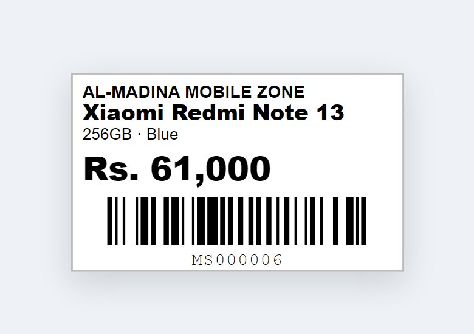
تصویر 23: پرنٹ شدہ قیمت کا اسٹیکر: دکان کا نام، ماڈل، اسٹوریج اور رنگ، قیمت، اور بارکوڈ
لاگت کوڈ (مالک کا راز)
کچھ دکاندار اسٹیکر پر خرید قیمت دیکھنا چاہتے ہیں، لیکن ایسے حروف میں جو گاہک نہ پڑھ سکے۔ اسے دکان کی ترتیبات ← اسٹیکر کا لاگت کوڈ میں سیٹ کریں: 10 الگ الگ حروف والا ایک لفظ لکھیں، مثلاً BLACKHORSE۔ ہندسہ 0 پہلا حرف ہے، 1 دوسرا، اور اسی طرح۔ پھر Rs. 45,000 لاگت والا فون KHBBB پرنٹ ہوگا۔
بارکوڈ کی ترتیبات (مالک)
مزید ← ترتیبات ← بارکوڈ کی ترتیبات میں مالک بارکوڈ سیٹ کرتا ہے۔ زیادہ تر دکانوں کو یہاں کچھ بدلنے کی ضرورت نہیں پڑتی۔
نئے لیبلوں کے لیے بارکوڈ قسم: Code 128 (ہر اسکینر پڑھتا ہے، یہی پہلے سے سیٹ ہے)، EAN-13 (صرف ہندسے) یا QR (2-D اسکینر اور فون کے کیمرے کے لیے)۔ اسے بدلنے پر بھی پرانے لیبل چلتے رہتے ہیں۔
دکان کا سابقہ اور نمبر یہاں سے شروع: وہ حروف اور نمبر جن سے نئے بارکوڈ شروع ہوتے ہیں۔
قیمت: سابقہ + نمبر (MS000123) یا موبائل کا IMEI۔
ٹیسٹ پرنٹ اور ٹیسٹ اسکین: ٹیسٹ اسٹیکر پرنٹ کریں، پھر اسے یہاں سکین کریں والے خانے میں اسکین کریں۔ اسے وہ فون یا چیز دکھانی چاہیے جس کا یہ ہے۔
پرانے اسٹاک کے بارکوڈ: اگر آپ بارکوڈ آنے سے پہلے ایپ استعمال کر رہے تھے تو اسے ایک بار دبائیں تاکہ ہر پرانے فون اور چیز کو بارکوڈ مل جائے۔ پھر اسٹاک لسٹ سے ان کے اسٹیکر پرنٹ کریں۔
USB یا Bluetooth اسکینر سے اسکیننگ
کوئی بھی عام بارکوڈ اسکینر چلتا ہے۔ اسے کمپیوٹر کے USB پورٹ میں لگائیں (یا Bluetooth والا جوڑ لیں)۔ کسی ڈرائیور یا سیٹنگ کی ضرورت نہیں۔
اسکینر کو کوڈ لکھ کر خود Enter دبانا چاہیے۔ ایک بار Notepad میں ٹیسٹ کریں: بارکوڈ اسکین کریں تو کوڈ آنا چاہیے اور پھر نئی لائن۔ اگر ایسا نہ ہو تو اسکینر کی چھوٹی کتاب میں سے "add Enter / CR suffix" والا کوڈ اسکین کریں۔
پہلے کسی خانے میں کلک کرنے کی ضرورت نہیں۔ ایپ میں جہاں بھی ہوں، بس اسکین کریں۔ یہ اردو کی بورڈ چالو ہونے پر بھی چلتا ہے۔
فون کے کیمرے سے اسکیننگ
فون پر کوئی بھی اسکین بٹن دبائیں (سرچ باکس کے ساتھ، اور خریدتے وقت IMEI کے خانوں میں)۔ کیمرہ کھلتا ہے: اسے بارکوڈ کی طرف کریں اور اچھی روشنی میں ہاتھ سیدھا رکھیں۔ اگر کیمرہ نہ کھلے تو تصویر لے کر پڑھیں دبائیں اور بارکوڈ کی تصویر لیں۔
IMEI کے لیے ڈبے پر لگے IMEI بارکوڈ کی طرف کریں، یا فون پر *#06# ملا کر اسکرین اسکین کریں۔ اگر IMEI 1 پہلے سے بھرا ہو تو ایپ IMEI 2 کے بارکوڈ کی طرف کرنے کو کہتی ہے۔
اسکین کیا کھولتا ہے
ایپ اپنے بارکوڈ، IMEI 1، IMEI 2، چیزوں کے کوڈ اور کمپنی کے بارکوڈ پہچانتی ہے۔ کیا ہوگا، یہ اس پر ہے کہ آپ کہاں ہیں:
آپ کہاں ہیں
اسکین کیا کرتا ہے
ہوم، یا زیادہ تر اسکرینیں
فون یا چیز کا صفحہ کھولتا ہے۔ بکا ہوا فون اپنی ہسٹری کھولتا ہے۔
فروخت کی اسکرین
فون کو اس کی فروخت کی قیمت پر بل میں ڈالتا ہے۔ چیز اسکین کرنے سے 1 جڑتا ہے؛ دوبارہ اسکین کریں تو تعداد 2 ہو جاتی ہے۔
واپسی کی اسکرین
بکا ہوا فون ڈھونڈ کر سیدھا اس کے بل پر جاتا ہے۔
اسٹاک خریدنا
پہلے IMEI 1، پھر IMEI 2، پھر کمپنی کا بارکوڈ بھرتا ہے۔
اسٹاک گنتی
فون یا عدد گنتا ہے۔
ریپئر اسٹیکر، کہیں بھی
وہ ریپئر جاب کھولتا ہے (REP- نمبر، باب 14)۔
اگر کوڈ پہچانا نہ جائے تو ایپ بیپ کرتی ہے اور چیز نہیں ملی کے ساتھ شامل کریں کا بٹن دکھاتی ہے۔
13. ایکسیسریز اور چیزیں
چارجر، کیبل، کور، گلاس پروٹیکٹر، ہینڈز فری، پاور بینک، عام گھڑیاں اور ایسی چیزیں گنتی سے رکھی جاتی ہیں: کوئی IMEI نہیں، بس یہ کہ کتنی ہیں۔ ایپ انہیں چیزیں کہتی ہے۔ یہ مزید ← ایکسیسریز میں ملتی ہیں، چارجر، کور وغیرہ نام کی اسکرین پر۔
اسکرین پر تین ٹیب ہیں: اسٹاک میں، کم اسٹاک اور باقی ایکسیسریز۔ لسٹ کے اوپر ایک سرچ باکس (نام یا کوڈ) اسکین کے ساتھ، ایک فلٹر کا بٹن (قسم، برانڈ، کوالٹی، سپلائر، شیلف، ختم شدہ) اور آئٹم رپورٹس ہیں۔ ہر لائن میں چیز کا نام، اس کی کوالٹی (مثلاً اوریجنل)، اس کا کوڈ (مثلاً BASEUSTY-001)، قسم، برانڈ، رنگ، شیلف (Rack A2)، کتنی باقی ہیں اور فروخت قیمت ہوتی ہے۔ جب چیز ختم ہونے لگے تو لال کم اسٹاک کا نشان آتا ہے۔
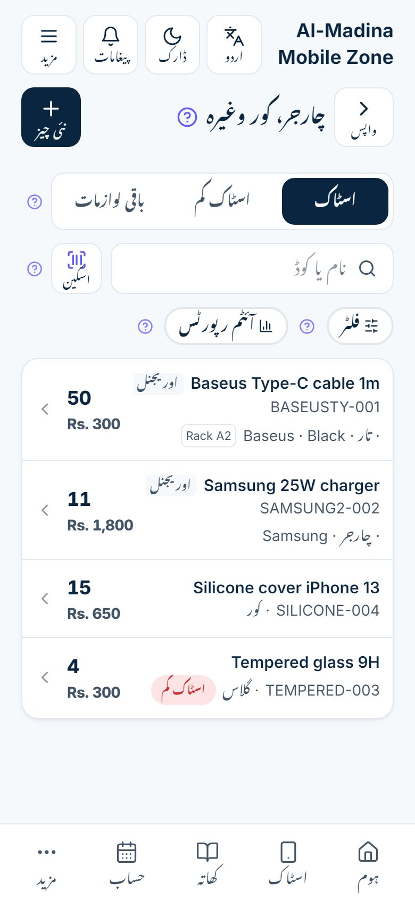
تصویر 24: چارجر، کور وغیرہ: چیزیں گنتی، قیمت، شیلف اور کم اسٹاک کے نشان کے ساتھ
چند آسان اصول
گنتی ہمیشہ عدد میں ہوتی ہے۔ آپ درجن، ڈبے یا کارٹن میں خرید سکتے ہیں، لیکن اسٹاک عدد میں رکھا جاتا ہے۔
فروخت قیمت ایک عدد کی قیمت ہے عام گاہک کے لیے۔
ہر خریداری اپنے الگ بیچ میں رکھی جاتی ہے اپنی تاریخ، سپلائر، تعداد اور لاگت کے ساتھ۔ جب آپ بیچتے ہیں تو سب سے پرانا بیچ پہلے ختم ہوتا ہے۔
کسی چیز کا کچھ بھی کبھی ختم نہیں کیا جاتا۔ اگر گنتی غلط ہو تو آپ وجہ کے ساتھ اسے درست کرتے ہیں، اور یہ درستی ہسٹری میں لکھی جاتی ہے۔
نئی چیز شامل کریں
مثال:Baseus Type-C cable 1m، فروخت قیمت Rs. 300 فی عدد، کبھی Rs. 200 سے کم نہیں، 20 رہ جائیں تو خبردار کرے۔
چارجر، کور وغیرہ میں نئی چیز دبائیں۔
نام لکھیں: Baseus Type-C cable 1m۔
قسم چنیں: تار۔ لسٹ میں چارجر، کیبل، کور، گلاس پروٹیکٹر، ہینڈز فری، پاور بینک، گھڑی، اسپیکر اور بہت کچھ ہے، اور آپ اپنی قسم بھی شامل کر سکتے ہیں۔
فروخت قیمت لکھیں: 300۔
دوبارہ منگوائیں لکھیں: 20۔ یہ آپ کی کم اسٹاک کی وارننگ ہے۔
اگر شیلف پر پہلے سے کچھ ہیں تو شروع کی تعداد اور ایک کی لاگت لکھیں۔
اگر مزید بھرنا چاہیں تو مزید تفصیل دبائیں۔ یہ سب اختیاری ہے: برانڈ، کس فون پر لگتا ہے (مثلاً "iPhone 14/15، Samsung A series")، کوالٹی (Original، Company / OEM، A-grade، Copy / China، Used)، رنگ، سائز، گنجائش (mAh / GB)، کنیکٹر، واٹ، ہول سیل قیمت، کم سے کم فروخت قیمت (200)، پرومو قیمت اپنی تاریخوں کے ساتھ، وارنٹی (دن)، شیلف / ریک، زیادہ سے زیادہ اسٹاک، سپلائر کے کوڈ اور نوٹ / تفصیل۔
محفوظ کریں دبائیں۔ چیز کو فوراً اپنا کوڈ اور بارکوڈ مل جاتا ہے۔
اگر بہت ملتی جلتی چیز پہلے سے موجود ہو تو ایپ ملتے جلتے آئٹم پہلے سے موجود دکھاتی ہے، تاکہ آپ ایک ہی چیز دو بار نہ بنائیں۔
چیزیں عدد، درجن یا ڈبے میں خریدنا
چیزیں عام طور پر ڈیلر سے خریدی جاتی ہیں، اکثر فونوں والے بل پر ہی۔
اسٹاک ڈالیں دبائیں اور ڈیلر چنیں۔
ایکسیسری / گھڑی ڈالیں دبائیں۔
لسٹ سے چیز چنیں، یا نئی چیز (لسٹ میں نہیں) دبائیں، اس کا نام، یہ کیا ہے اور ایک کی فروخت قیمت بھریں، اور محفوظ کر کے ڈالیں دبائیں۔
جس اکائی میں خریدا وہ دبائیں: عدد، درجن، ڈبہ یا کارٹن۔ کتنے لیے اور ایک اکائی کی قیمت لکھیں۔
ایپ خود ایک عدد کی لاگت نکالتی ہے: Rs. 1,200 فی درجن کے حساب سے 3 درجن، Rs. 100 فی عدد کے 36 عدد بن جاتے ہیں۔
چاہیں تو سپلائر کے بل کا نمبر اور کرایہ یا لوڈنگ کا خرچ بھریں۔ کرایہ لائنوں پر بانٹ کر لاگت میں جوڑ دیا جاتا ہے۔
خریداری ہمیشہ کی طرح محفوظ کریں (ابھی ادا، باقی ڈیلر کے کھاتے میں)۔ نتیجے کی اسکرین پر اگر اسٹیکر چاہییں تو آئٹم لیبل پرنٹ کریں دبائیں۔
درجن، ڈبے یا کارٹن میں کتنے عدد ہوتے ہیں، یہ ایک بار ترتیبات ← آئٹم کی ترتیبات میں سیٹ ہوتا ہے۔ کسی ایک چیز کا اپنا ڈبے کا سائز بھی ہو سکتا ہے (اس آئٹم کے ایک ڈبے میں عدد)۔
بیچ اور اوسط لاگت
ہر خریداری ایک بیچ ہے۔ چیز کے صفحے پر ہر بیچ سپلائر، تاریخ، کتنے خریدے، کتنے باقی ہیں، اور ایک عدد کی لاگت کے ساتھ نظر آتا ہے۔
مثال: آپ نے Rehman Traders سے Rs. 100 فی عدد کے حساب سے 3 درجن Baseus کیبل خریدیں، اور بعد میں 2 درجن مزید Rs. 120 فی عدد پر۔ اب آپ کے پاس 60 عدد ہیں اور اوسط لاگتRs. 108 ہے۔ آپ 10 عدد بیچتے ہیں: یہ پہلے پرانے Rs. 100 والے بیچ سے نکلتے ہیں، اس لیے وہ 26 / 36 باقی دکھاتا ہے اور نیا بیچ ابھی بھی 24 / 24 باقی دکھاتا ہے۔
مالک ترتیبات ← آئٹم کی ترتیبات ← اسٹاک کی قیمت کا طریقہ میں طے کرتا ہے کہ اسٹاک کی مالیت کیسے لگے: اوسط لاگت (پہلے سے یہی سیٹ ہے) یا FIFO (پہلے پرانا)، جس میں ہر فروخت کی لاگت اسی بیچ سے لگتی ہے جس سے وہ اصل میں نکلی۔
چیزیں بیچنا
بیچیں میں ایکسیسری / گھڑی دبائیں۔ یہی بٹن فون کے نیچے بھی آتا ہے، تاکہ آپ اس کے ساتھ چارجر یا کور بیچ سکیں۔
چیز پر دبائیں، یا بس اس کا بارکوڈ اسکین کریں۔ ایک اور ڈالنے کے لیے دوبارہ اسکین کریں۔
لائن دکھاتی ہے کہ اسٹاک میں کتنی ہیں۔ قیمت خود بھر جاتی ہے: عام گاہک کے لیے پرچون قیمت، اگر گاہک ڈیلر درج ہے تو ڈیلر قیمت، یا آفر چلنے کے دوران پرومو قیمت۔
ضرورت ہو تو تعداد یا قیمت بدلیں، اور ہمیشہ کی طرح فروخت مکمل کریں۔
گنتی کم ہو جاتی ہے اور منافع لاگت سے نکلتا ہے۔
کچھ حفاظتی پابندیاں آپ کو بچاتی ہیں:
آپ جتنا ہے اس سے زیادہ نہیں بیچ سکتے (اسٹاک سے زیادہ)، جب تک مالک نے آئٹم کی ترتیبات میں اسٹاک صفر ہو تو بھی بیچنے دیں چالو نہ کیا ہو۔
کم سے کم فروخت قیمت سے کم بیچنے پر کم سے کم قیمت سے کم — منیجر چاہیے آتا ہے۔ یہ وہی قیمت کا اصول ہے جو فون کو اس کی فروخت کی قیمت سے کم بیچنے پر لگتا ہے (باب 15 دیکھیں)۔
لاگت سے کم بیچنے کے لیے مالک چاہیے۔
باقی ایکسیسریز
کبھی چارجر یا ہینڈز فری کا وعدہ ہو جاتا ہے لیکن ابھی دیے نہیں گئے۔ باقی ایکسیسریز کا ٹیب انہیں سنبھال کر رکھتا ہے تاکہ کچھ بھولا نہ جائے:
سپلائر سے: ڈیلر نے ابھی آپ کو کچھ دینا ہے، مثلاً Galaxy A55 کا چارجر، اس تاریخ کے ساتھ جس کا اس نے وعدہ کیا۔
گاہک کو: آپ نے گاہک سے کسی چیز کا وعدہ کیا، مثلاً Vivo Y36 کے ساتھ ہینڈز فری۔
یہ سوالوں فون کے ساتھ کیا کیا آیا؟ (خریدتے وقت) اور فون کے ساتھ کیا کیا دے رہے ہیں؟ (بیچتے وقت) سے آتی ہیں، جہاں ابھی آنے والی چیز کے لیے آپ بعد میں جواب دیتے ہیں۔ جب حوالے ہو جائے تو حوالے کر دیا دبائیں۔
اسٹاک الرٹ (کم اسٹاک)
ہر چیز کی ایک دوبارہ منگوائیں کی حد ہوتی ہے۔ جب گنتی اس حد پر یا اس سے نیچے آ جائے:
چیز پر لال کم اسٹاک کا نشان آتا ہے اور وہ کم اسٹاک ٹیب میں آ جاتی ہے؛
ہوم پر توجہ چاہیے کے نیچے "N چیزیں اسٹاک میں کم" آتا ہے، اور اس پر دبانے سے کم اسٹاک کا ٹیب کھلتا ہے؛
مالک کی رات والی رپورٹ میں کم چیزیں لکھی ہوتی ہیں۔
آئٹم رپورٹس ← کم اسٹاک ایک قدم آگے جاتا ہے: یہ کم چیزوں کو ان کے آخری سپلائر کے حساب سے اکٹھا کرتا ہے اور بتاتا ہے کہ کتنی منگوانی ہیں، اندازاً خرچ کے ساتھ، تاکہ آپ تیار لسٹ کے ساتھ ڈیلر کو فون کر سکیں۔ باقی آئٹم رپورٹس دکھاتی ہیں اسٹاک کی مالیت (لاگت پر اور فروخت قیمت پر)، تیز / سست بکنے والی چیزیں، قسم اور برانڈ کے حساب سے منافع، رکا ہوا اسٹاک (کچھ دنوں سے نہیں بکا) اور سپلائر۔
اسٹاک درست کریں (ٹوٹ پھوٹ، گم، گنتی کی درستی)
گنتی صرف خرید، فروخت اور واپسی سے بدلنی چاہیے۔ جب کوئی عدد ٹوٹ جائے، گم ہو جائے، یا شیلف کی گنتی فرق ہو، تو اسے درست کریں:
چیز کھولیں اور اسٹاک درست کریں دبائیں۔
تبدیلی (+/−) میں تبدیلی لکھیں، مثلاً دو ٹوٹے کور کے لیے -2۔
وجہ (لازمی) میں وجہ لکھیں، مثلاً ٹوٹ گئے یا گنتی کی درستی۔ وجہ کے بغیر ایپ محفوظ نہیں کرے گی۔
محفوظ کریں دبائیں۔ ہسٹری میں −2 کی ایڈجسٹ والی لائن آپ کے نام، وقت اور وجہ کے ساتھ آ جاتی ہے۔
چیز کا صفحہ
کسی بھی چیز پر دبا کر اس کا صفحہ کھولیں۔ اس پر یہ ہوتا ہے:
تفصیل: فروخت قیمت، ہول سیل قیمت، کم سے کم فروخت قیمت، اوسط لاگت، فی عدد منافع (مارجن % کے ساتھ)، اسٹاک کی مالیت، دوبارہ منگوائیں اور شیلف / ریک؛
خریداری کے بیچ: ہر خریداری سپلائر، تاریخ، پیک (مثلاً 3 درجن)، کتنے باقی ہیں اور لاگت کے ساتھ؛
ہسٹری: ہر آنا جانا اپنی تاریخ اور تعداد کے ساتھ: خریدا (کس سے، کتنے، کتنے ابھی دینے ہیں)، بیچا (کس کو، انوائس نمبر کے ساتھ)، واپس، ایڈجسٹ، مرمت میں لگا، اور فروخت قیمت، کم سے کم قیمت اور اوسط لاگت کے لیے قیمت بدلی کی لائنیں۔ ہر لائن کے ساتھ تبدیلی (مثلاً −4) اور اس کے بعد کی گنتی نظر آتی ہے۔
صفحے کے بٹن: سب کے لیے اسٹیکر پرنٹ کریں، اور مالک اور منیجر کے لیے اوپر اسٹاک درست کریں، ترمیم اور ختم کریں (وہ چیز جو آپ اب نہیں بیچتے؛ اس کے پرانے بل اور ہسٹری رہتی ہے)۔
ہماری کیبل والی مثال میں صفحہ دکھاتا ہے اوسط لاگت Rs. 108، Rs. 300 کی فروخت قیمت پر فی عدد منافع Rs. 192 (178%)، اور باقی 50 عدد کی اسٹاک کی مالیت Rs. 5,400۔
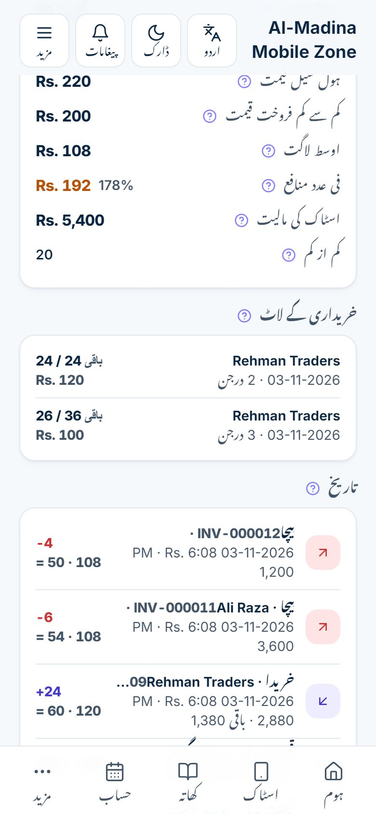
تصویر 25: چیز کا صفحہ: اوسط لاگت، فی عدد منافع، اسٹاک کی مالیت، خریداری کے بیچ اور ہسٹری
14. ریپئر اور ریپئر لیبز
ریپئر کا حصہ گاہک کے فون کے ساتھ اس لمحے سے چلتا ہے جب وہ کاؤنٹر پر آتا ہے، جب تک وہ واپس اس کے ہاتھ میں نہ چلا جائے: کیا خرابی ہے، آپ نے کیا وعدہ کیا، اس نے کتنا ایڈوانس دیا، کیا وہ باہر کی لیب میں گیا، لیب نے کتنا چارج کیا، اور آخر میں اس نے کتنے دیے۔
ہر جاب چار مرحلوں سے گزرتی ہے، جو جاب پر ایک پٹی کی شکل میں نظر آتے ہیں: فون لیا ← ٹھیک ہو رہا ہے ← تیار ← واپس دے دیا۔ ہر جاب کو REP-000004 جیسا نمبر ملتا ہے۔
ریپئر کی لسٹ
اسے ہوم ← مرمت سے کھولیں، یا مزید ← ریپئر سے۔ اوپر مرمت کے لیے فون لیں اور ریپئر لیبز ہیں۔ ان کے نیچے:
جاری وہ جابیں دکھاتا ہے جو ابھی واپس نہیں ہوئیں؛ سب ہر جاب دکھاتا ہے۔
سرچ باکس جاب کو جاب نمبر، IMEI، نام یا فون سے ڈھونڈتا ہے۔
ہر لائن میں فون اور خرابی (مثلاً Vivo Y20 — اسکرین پر لائنیں)، گاہک، جاب نمبر، تیار ہونے کی تاریخ، مرحلہ (فون لیا، ٹھیک ہو رہا ہے، تیار) اور رقم ہوتی ہے۔
جب فون باہر کی لیب میں ہو تو لائن پر لیب کے نام کے ساتھ لیب میں لکھا آتا ہے، اور اگر لیب دیر کر رہی ہو تو لال رنگ میں۔
جب جابیں تیار ہوں تو ایک لائن تیار ہے — گاہک کو بلائیں آپ کو فون کرنے کی یاد دلاتی ہے۔
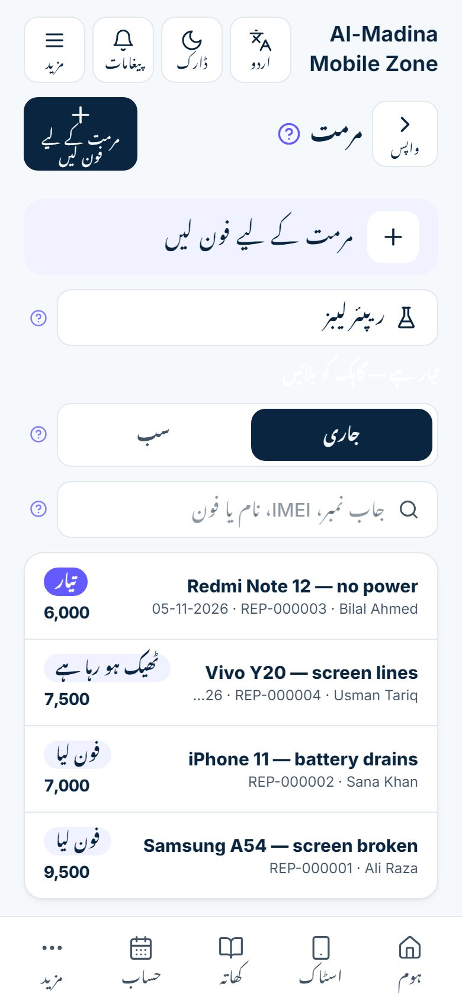
تصویر 26: ریپئر کی لسٹ: جاری جابیں مرحلے اور رقم کے ساتھ، اور ریپئر لیبز کا راستہ
فون ریپئر کے لیے لیں
مثال:Usman Tariq ایک Vivo Y20 لاتا ہے جس کی اسکرین پر لائنیں ہیں۔ آپ کے خیال میں بل تقریباً Rs. 7,500 بنے گا۔ وہ Rs. 2,000 ایڈوانس دیتا ہے۔ آپ تین دن میں دینے کا وعدہ کرتے ہیں۔
مرمت کے لیے فون لیں دبائیں۔
گاہک میں نام، فون یا CNIC سے ڈھونڈیں اور Usman Tariq پر دبائیں۔ نئے گاہک کے لیے + دبا کر اس کا نام اور موبائل نمبر لکھیں۔
فون کا نام (جیسے Samsung A54) میں Vivo Y20 لکھیں۔
کیا خرابی ہے؟ میں ملتی جلتی خرابی کے بٹن دبائیں (مثلاً اسکرین / ڈسپلے)۔ اگر اس کی خرابی لسٹ میں نہیں تو کوئی اور خرابی (لکھیں) میں لکھیں: اسکرین پر لائنیں۔
اندازاً خرچ لکھیں: 7500، اور ایڈوانس لیا: 2000۔
کب تک تیار میں آج، کل، 3 دن دبائیں، یا تاریخ چنیں۔
اگر IMEI اور اس کے ساتھ چھوڑی چیزیں لکھنی ہوں تو IMEI، فون کے ساتھ چھوڑی چیزیں دبائیں: سم، میموری کارڈ، کور، چارجر، ڈبہ یا ہینڈز فری۔
محفوظ کریں اور پرچی پرنٹ کریں دبائیں۔ گاہک کی پرچی (جاب شیٹ) پرنٹ ہوتی ہے، اور جاب کھل جاتی ہے۔
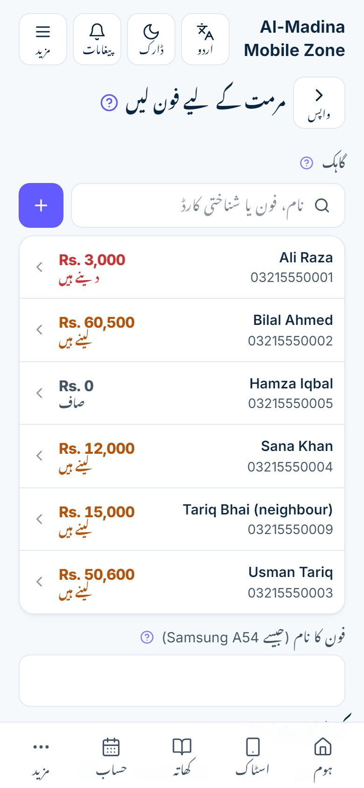
تصویر 27: فون ریپئر کے لیے لینا: گاہک چنیں، پھر فون اور خرابی
ایڈوانس آپ کی نقدی میں آ جاتا ہے اور جاب کے کھاتے میں گنا جاتا ہے۔ اگر گاہک فون لینے کبھی واپس نہ آئے تو بھی ریکارڈ بالکل ٹھیک بتاتا ہے کہ اس نے کتنے دیے تھے۔
کام کے دوران
ریپئر کی لسٹ سے جاب کھولیں۔ مرحلے کی پٹی کے نیچے یہ ہیں:
کام شروع: جاب ٹھیک ہو رہا ہے پر چلی جاتی ہے۔
پرزوں کا انتظار: مثلاً، اسکرین مارکیٹ سے منگوائی ہوئی ہے۔
ٹھیک نہ ہو سکے: جاب بغیر ریپئر کے بند کرتا ہے (فون بغیر ٹھیک ہوئے واپس دیا جاتا ہے)۔
ٹھیک ہو گیا: بل کھولتا ہے (نیچے دیکھیں)۔
نیچے اسٹیکر پرنٹ کریں (ریپئر اسٹیکر)، پرچی پرنٹ (گاہک کی جاب شیٹ دوبارہ)، اور دستاویز کی زبان ہیں، جو طے کرتی ہے کہ پرنٹ ہونے والی پرچی انگریزی میں ہو یا اردو میں۔
فون باہر کی لیب کو بھیجیں
مارکیٹ میں بہت سی دکانیں ہر چیز خود ٹھیک نہیں کرتیں۔ بورڈ کی خرابی یا iPhone کی اسکرین اکثر کسی ماہر لیب یا ٹیکنیشن کے پاس جاتی ہے۔ Mobile Shop ہر ایسے چکر کا پورا ریکارڈ رکھتا ہے: فون کس لیب کے پاس ہے، کب سے، انہیں کیا کرنا ہے، انہوں نے کتنا چارج کیا، اور دکان نے انہیں کتنے دینے ہیں۔
مثال (جاری): آپ کا ٹیکنیشن Vivo کی اسکرین ٹھیک نہیں کر سکتا۔ آپ اسے Zain Mobile Lab (Hall Road) کو دیتے ہیں۔ وہ Rs. 4,000 بتاتے ہیں اور دو دن میں واپس کرنے کا وعدہ کرتے ہیں۔
جاب پر لیب کو بھیجیں دبائیں۔
ریپئر لیب / ٹیکنیشن میں Zain Mobile Lab (Hall Road) چنیں۔ نئی لیب وہیں اس کے نام اور فون کے ساتھ شامل ہو سکتی ہے۔
لیب کیا کرے میں کام لکھیں، مثلاً اسکرین بدلنی ہے۔
لیب کا بتایا ریٹ لکھیں: 4000۔ یہ صرف ریکارڈ کے لیے ہے؛ اصل چارج فون واپس آنے پر لکھا جاتا ہے۔
واپسی کی تاریخ چنیں: وہ دن جس کا لیب نے وعدہ کیا۔
بھیجیں دبائیں۔
جاب ٹھیک ہو رہا ہے پر چلی جاتی ہے، اور اس پر ابھی لیب میں کا کارڈ آ جاتا ہے جس میں لیب کا نام، کال کا بٹن، بھیجنے کی تاریخ، کتنے دن سے وہاں ہے، متوقع دن اور ریٹ ہوتا ہے۔ اگر لیب نے متوقع دن تک واپس نہ کیا تو کارڈ لال ہو جاتا ہے اور لکھا آتا ہے دیر: متوقع دن تک واپس نہیں آیا۔
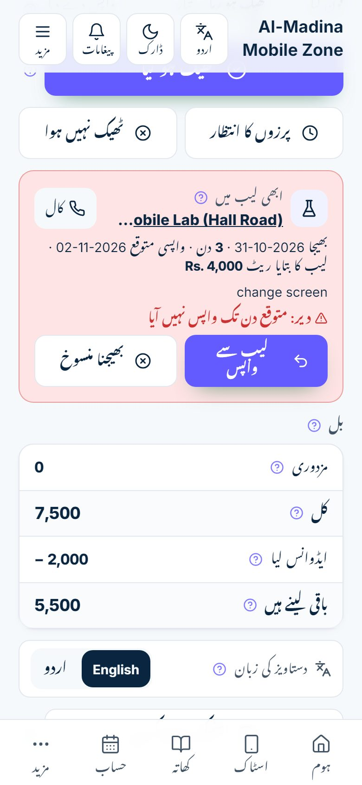
تصویر 28: جب فون لیب میں ہو تو ریپئر جاب: دیر کی وارننگ، لیب سے واپس اور بھیجنا منسوخ
ایک جاب کا ایک وقت میں صرف ایک لیب کا چکر کھلا رہ سکتا ہے۔ اگر آپ نے غلط لیب لکھ دی، یا لیب نے فون لیا ہی نہیں، تو بھیجنا منسوخ دبائیں اور کیوں منسوخ؟ میں وجہ لکھیں۔ منسوخ شدہ چکر ہسٹری میں رہتا ہے۔
لیب سے واپس لائیں
جب لیب فون واپس کرے تو جاب کھولیں اور لیب سے واپس دبائیں۔
کیا لیب نے ٹھیک کیا؟ کا جواب دیں: ٹھیک ہو گیا یا ٹھیک نہیں ہوا۔
اس چکر کا لیب کا چارج لکھیں: 4000۔ اگر لیب ٹھیک نہ کر سکی لیکن چیکنگ فیس لی تو بھی لکھیں۔
لیب کو ابھی دیے میں وہ لکھیں جو آپ نے موقع پر نقد دیا، مثلاً 1500۔ ایپ دکھاتی ہے Rs. 2,500 لیب کے کھاتے میں (دکان نے دینے ہیں)۔
محفوظ کریں دبائیں۔
اگر ٹھیک ہو گیا تھا تو جاب تیار ہو جاتی ہے اور گاہک کو معمول کا "آپ کا فون تیار ہے" والا میسج جاتا ہے۔ اگر ٹھیک نہیں ہوا تھا تو جاب کھلی رہتی ہے اور آپ اسے کسی دوسری لیب کو بھیج سکتے ہیں۔
ہر چکر جاب پر لیب کے چکر میں لکھا ہوتا ہے: کون سی لیب، بھیجنے اور واپسی کی تاریخیں، ٹھیک ہوا یا نہیں، اور چارج۔ کچھ بھی کبھی ختم نہیں ہوتا۔
لیب کے چارج کا کیا ہوتا ہے
گاہک کے فون پر لیب کا چارج اس ریپئر کا خرچ ہے۔ آپ کا ریپئر کا منافع بل میں سے پرزے اور لیب کے چارج نکال کر بنتا ہے۔
آپ کے اپنے اسٹاک کے فون پر لیب کا چارج اس فون کی لاگت میں جڑ جاتا ہے۔
چارج ایک ہی بار درج ہوتا ہے، جب فون واپس آتا ہے۔ گاہک کو فون دیتے وقت دوبارہ درج نہیں ہوتا۔
جو آپ نے موقع پر نہیں دیا وہ لیب کے کھاتے میں رہتا ہے۔ اسے بعد میں لیب کے کھاتے سے پیسے دیے کے ذریعے ادا کریں، کسی بھی دوسرے ڈیلر کی طرح۔
مثال: ایک فون Ali Repair Lab جاتا ہے، Rs. 500 چیکنگ فیس کے ساتھ ٹھیک نہیں ہوا واپس آتا ہے، پھر Zain Mobile Lab جاتا ہے اور Rs. 4,000 میں ٹھیک ہو گیا واپس آتا ہے۔ لیب کے چکر دونوں دکھاتا ہے۔ اس ریپئر کا لیب کا خرچ Rs. 4,500 ہے۔
جب ٹھیک ہو جائے
جاب کھولیں اور ٹھیک ہو گیا دبائیں۔ پرزے اور مزدوری کی شیٹ کھلتی ہے۔
جو پرزے لگائے وہ + پرزہ سے ڈالیں (نام، تعداد، قیمت)۔ اس کے نیچے اپنے اسٹاک کی کسی چیز پر دبائیں تاکہ وہ اسٹاک سے لگے: اس کی گنتی خود کم ہو جاتی ہے۔
مزدوری لکھیں۔ کل لکھتے لکھتے بنتا جاتا ہے۔
ٹھیک ہو گیا دبائیں۔ جاب تیار اور بل دکھاتی ہے: کل، منفی ایڈوانس لیا، برابر لینا باقی۔
گاہک کو فون کرنے کے لیے کال دبائیں۔
مثال (جاری): Vivo کا بل Rs. 7,500 مزدوری ہے۔ ایڈوانس Rs. 2,000 تھا، اس لیے لینا باقیRs. 5,500 ہے۔
واپس دیں
جب گاہک آئے تو جاب کھولیں اور گاہک کو واپس دیں دبائیں۔
کل، ایڈوانس اور لینا باقی دیکھ لیں۔
جو وہ دیتا ہے وہ ابھی کتنے ملے میں لکھیں: 5500۔ اگر وہ کم دے تو ایپ کہتی ہے باقی رقم گاہک کے کھاتے میں جائے گی۔
اگر آپ ریپئر کی وارنٹی دیتے ہیں تو وارنٹی کے دن (اگر ہو) لکھیں۔
گاہک کو واپس دیں دبائیں۔ جاب پر واپس دے دیا آتا ہے اور وہ بند ہو جاتی ہے۔
ہماری مثال میں دکان نے Rs. 7,500 کا بل بنایا اور لیب نے Rs. 4,000 لیے، اس لیے اس ریپئر پر منافع Rs. 3,500 ہے۔
ریپئر لیبز اور ان کا ریکارڈ
ریپئر کی لسٹ پر ریپئر لیبز دبائیں۔ آپ کو ہر وہ لیب اور ٹیکنیشن نظر آتا ہے جسے آپ فون بھیجتے ہیں۔ ہر کارڈ دکھاتا ہے کتنے فون بھیجے، ابھی کتنے لیب میں ہیں، ٹھیک %، اور دکان نے لیب کو دینے ہیں۔ 1 دیر سے جیسا لال نشان خبردار کرتا ہے کہ کوئی لیب وعدے کے دن کے بعد بھی فون رکھے ہوئے ہے۔ لیب شامل کریں کے لیے اوپر + دبائیں۔
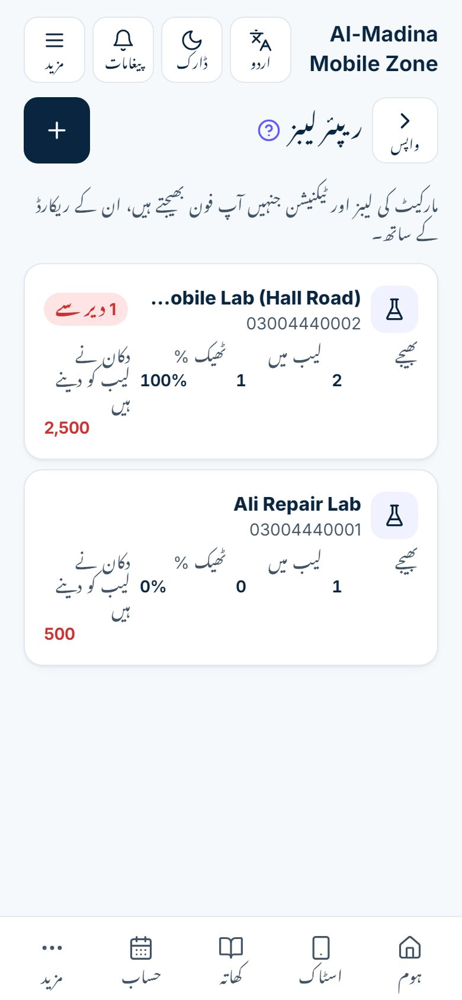
تصویر 29: ریپئر لیبز: ہر لیب بھیجے، لیب میں، ٹھیک % اور دکان نے کتنے دینے ہیں کے ساتھ
کسی لیب پر دبا کر اس کا ریکارڈ کھولیں۔ اوپر دکان نے لیب کو دینے ہیں اس کے فون اور پتے کے ساتھ ہے اور لیب کا کھاتہ کھولیں۔ پھر نو اعداد:
عدد
مطلب
بھیجے
اس لیب کو بھیجے گئے فون (منسوخ چکر نہیں گنے جاتے)۔
لیب میں
جو فون ابھی اس لیب کے پاس ہیں۔
دیر
جو فون وعدے کے دن کے بعد بھی وہاں ہیں۔
ٹھیک ہو گیا
جو فون اس نے ٹھیک کر کے واپس کیے۔
ٹھیک نہیں ہوا
جو فون اس نے بغیر ٹھیک کیے واپس کیے۔
ٹھیک %
سب واپس آنے والوں میں سے کتنے ٹھیک ہوئے۔
اوسط دن
یہ عام طور پر فون کتنے دن رکھتی ہے۔
چارجز
اس نے جو کچھ چارج کیا۔
موقع پر ادا
فون لیتے وقت آپ نے کتنے دیے۔
اس کے نیچے لیب کے چکر ہر اس فون کی لسٹ ہے جو آپ نے وہاں بھیجا، جاب نمبر، تاریخوں، لگے دنوں، کام اور نتیجے (لیب میں، چارج کے ساتھ ٹھیک ہو گیا، ٹھیک نہیں ہوا) کے ساتھ۔
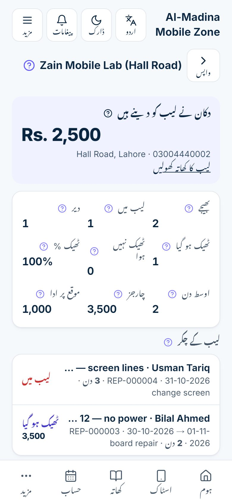
تصویر 30: ایک لیب کا ریکارڈ: دکان نے کتنے دینے ہیں، نو اعداد اور ہر لیب کا چکر
ریپئر اسٹیکر
جب گاہک کا فون آئے تو اس پر ایک چھوٹا اسٹیکر لگا دیں تاکہ وہ بینچ پر یا لیب میں کسی دوسرے فون سے کبھی نہ ملے۔
جاب پر اسٹیکر پرنٹ کریں دبائیں۔ ریپئر اسٹیکر کی شیٹ کھلتی ہے: اسے گاہک کے فون پر لگائیں۔ چنیں اس پر کیا ہو۔
اس پر کیا ہو میں ہر خانے پر دبا کر اسے ڈالیں یا ہٹائیں: دکان کا نام، جاب نمبر، بارکوڈ، گاہک، موبائل نمبر، فون ماڈل، IMEI، خرابی، ساتھ آیا، آنے کی تاریخ، کب تک تیار، اندازہ، ایڈوانس، باقی رقم، لیب اور نوٹ۔
اسٹیکر سائز (50×30، 58×40، 60×40، 70×40 mm یا A4 شیٹ) اور ہر ایک کی کاپیاں (1، 2 یا 3) چنیں۔
پرنٹ دبائیں۔
آپ کے چنے ہوئے خانے، سائز اور کاپیاں اگلی بار کے لیے اسی فون یا کمپیوٹر پر یاد رہتے ہیں۔
اسٹیکر پر بارکوڈ جاب نمبر ہے۔ اسے ایپ میں کہیں بھی اسکین کریں اور ریپئر جاب فوراً کھل جاتی ہے، جو تب بہت کام آتا ہے جب لیب ایک ساتھ پانچ فون واپس کرے۔
مثال: Vivo کے اسٹیکر پر لکھا ہے AL-MADINA MOBILE ZONE · REP-000004 · Usman Tariq · 03215550003 · Vivo Y20 — اسکرین پر لائنیں · اسکرین / ڈسپلے · تیار 02-11 · باقی Rs. 5,500، اور نیچے بارکوڈ۔
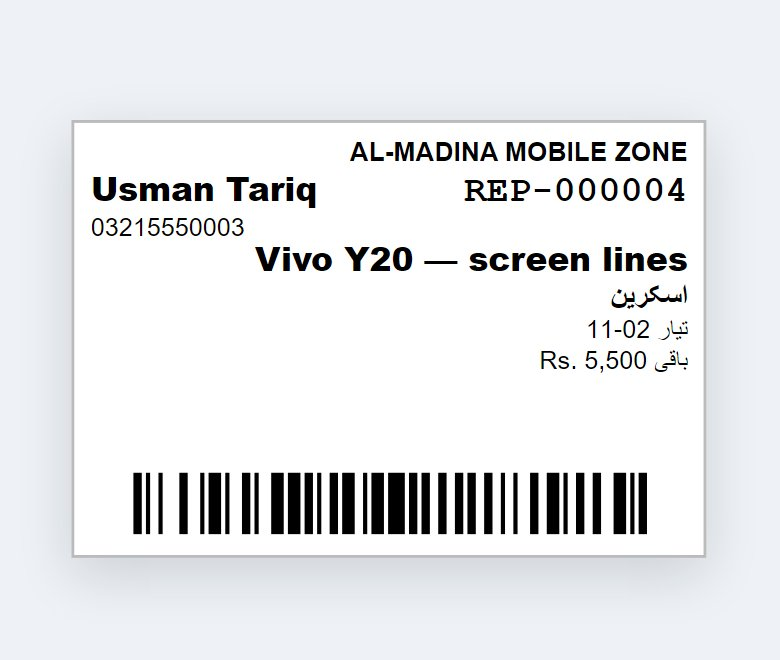
تصویر 31: پرنٹ شدہ ریپئر اسٹیکر: جاب نمبر، گاہک، فون، خرابی، تیار ہونے کی تاریخ اور بارکوڈ
گاہک کو اسٹیٹس کا لنک بھیجنا
گاہک اکثر فون کر کے پوچھتے ہیں کہ ان کا موبائل تیار ہوا یا نہیں۔ انہیں ایک بار لنک بھیج دیں، پھر وہ خود دیکھ لیتے ہیں۔
مرمت کی جاب کھولیں اور گاہک کو اسٹیٹس کا لنک بھیجیں دبائیں۔
WhatsApp پر بھیجیں دبائیں۔ WhatsApp گاہک کے نمبر اور تیار پیغام کے ساتھ کھلتا ہے؛ بھیج دیں۔ یا لنک کاپی کریں دبا کر کہیں بھی لگا دیں۔
گاہک بغیر لاگ اِن لنک کھولتا ہے اور دکان کا نام، موبائل اور جاب نمبر، ہر مرحلہ (موصول، جانچ ہو گئی، کام جاری، تیار، حوالے) اپنی تاریخ کے ساتھ، تیار ہونے کا دن، بل، دی ہوئی اور باقی رقم، اور دکان کو کال کریں کا بٹن دیکھتا ہے۔ جیسے جیسے آپ جاب آگے بڑھاتے ہیں، صفحہ بدلتا ہے۔
15. دوسری دکانوں کو امانت
مارکیٹ میں دکانیں اکثر ایک دوسرے کو فون "امانت پر" دیتی ہیں: دوسری دکان اسے اپنے گاہک کو دکھاتی ہے اور یا تو بیچ دیتی ہے یا واپس لے آتی ہے۔ جب تک فون بک نہ جائے یا واپس نہ آئے، وہ آپ کا رہتا ہے۔ Mobile Shop ہر ایسے فون کا حساب رکھتا ہے تاکہ کوئی بھی کسی اور کے کاؤنٹر پر بھول نہ جائے۔
فون امانت پر دیں
مثال: آپ ایک Apple iPhone 12 تین دن کے لیے Star Mobiles (ہال روڈ) کو دیتے ہیں۔
مزید ← امانت پر جائیں۔ اوپر والا کارڈ دکھاتا ہے کتنے موبائل اس وقت دوسری دکانوں پر ہیں۔
موبائل امانت پر دیں دبائیں۔
کون سا فون؟: لسٹ میں iPhone 12 پر دبائیں، یا اسے ڈھونڈیں یا اسکین کریں۔
کس دکان کو؟: Star ڈھونڈیں۔ نئی دکان وہیں + سے شامل ہو سکتی ہے۔
واپسی: 3 دن دبائیں (یا 7، 15، 30 دن، یا تاریخ نہیں)۔
چاہیں تو نوٹس لکھیں، اور امانت پر دیں دبائیں۔
یہی بٹن، امانت پر دیں، فون کے اپنے صفحے پر بھی ہے۔
اب فون اسٹاک لسٹ میں امانت پر دکھتا ہے (اور آپ کے کاؤنٹر پر غلطی سے نہیں بکتا)، اور امانت کی اسکرین پر ایک کارڈ کی شکل میں آتا ہے جس میں کتنے دن سے باہر ہے (0 دن سے باہر)، دکان کا نام، دینے کی تاریخ اور کب تک واپس، اور ایک دکان کا بٹن ہوتا ہے جس سے دکان کا صفحہ کھول کر انہیں فون کر سکتے ہیں۔
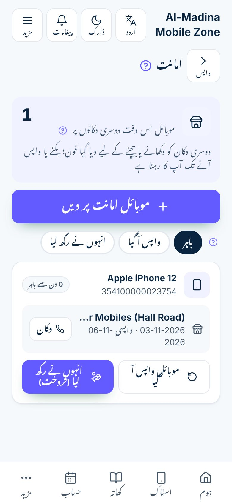
تصویر 32: امانت: دوسری دکانوں پر فون، موبائل واپس آ گیا اور انہوں نے رکھ لیا (فروخت) کے ساتھ
جب واپس آئے، یا وہ رکھ لیں
امانت کی اسکرین پر تین ٹیب ہیں: باہر، واپس آ گیا اور انہیں بیچے۔ باہر میں ہر کارڈ کے نیچے:
موبائل واپس آ گیا: ایپ پوچھتی ہے کیا یہ فون آپ کے پاس واپس آ گیا؟ یہ واپس آپ کے اسٹاک میں جائے گا۔جی، واپس آ گیا دبائیں۔ فون دوبارہ اسٹاک میں ہو جاتا ہے۔
انہوں نے رکھ لیا (فروخت): دوسری دکان نے اسے بیچ دیا یا رکھنا چاہتی ہے۔ طے شدہ قیمت لکھیں (مثلاً 150000) اور جو انہوں نے ابھی ادا کیا (مثلاً 100000)۔ کارڈ دکھاتا ہے ان کے کھاتے میں50,000۔ تصدیق دبائیں۔ فروخت میں ایک عام بل بنتا ہے، اور باقی اس دکان کے کھاتے میں رہتا ہے۔
جو امانت اپنی واپسی کی تاریخ سے گزر جائے اس پر تاریخ گزر گئی آتا ہے اور وہ اوپر والے کارڈ میں گنی جاتی ہے۔ انہیں بیچے والے ٹیب میں ہر اس فون کا بل کھولیں بٹن رہتا ہے جو انہوں نے رکھا۔
فروخت کی قیمت، قیمت کی تبدیلی اور کون کم پر بیچ سکتا ہے
ہر فون کی ایک فروخت کی قیمت ہوتی ہے: وہ قیمت جو آپ اس کی چاہتے ہیں۔ یہ فون خریدتے وقت لگتی ہے، اور آپ اسے اس کے صفحے پر قیمت بدلیں سے بدل سکتے ہیں۔
بکری کے وقت
بل پر قیمت کے خانے کے ساتھ طے قیمت: 40,000 نظر آتا ہے۔ اصل کتنے میں بکا کی رقم لکھیں: طے قیمت صرف ایک ہدف ہے۔
اگر مارکیٹ بدل گئی ہو تو طے قیمت بدلیں ٹک کریں، نئی طے قیمت (مثلاً 45,000) اور وجہ لکھیں۔ پھر فروخت نئی رقم پر ہوتی ہے۔
بیچنے سے پہلے دیکھیں
جب آپ فروخت مکمل کریں دباتے ہیں تو ایک آخری اسکرین بیچنے سے پہلے دیکھیں بل کا ہر فون دکھاتی ہے: اس کی لاگت (صرف مالک اور منیجر)، طے قیمت، اگر بدلی تو نئی طے قیمت، بکنے کی قیمت اور منافع۔ جب کوئی فون اپنی طے قیمت سے کم پر جا رہا ہو تو لال لائن آتی ہے۔ بل لکھنے کے لیے تصدیق کریں اور بل بنائیں دبائیں۔
اس کے بعد ایک ہی ریکارڈ ہوتا ہے: گاہک کی رسید، فون کی ہسٹری، رپورٹیں اور کھاتہ سب ایک ہی بکنے کی قیمت دکھاتے ہیں۔
کچھ بھی مٹایا نہیں جاتا
فون کی ہسٹری پہلی طے قیمت (40,000)، ایک لائن قیمت بدلی 40,000 ← 45,000 · بکری کے وقت · مارکیٹ ریٹ بیچنے والے کے نام اور وقت کے ساتھ، اور 45,000 پر فروخت سنبھال کر رکھتی ہے۔ فون کے پیسے والے کارڈ پر آپ کو اب طے قیمت اور، جب فرق ہو، پہلی طے قیمت نظر آتی ہے۔
قیمت کے اصول: کون طے قیمت سے کم پر بیچ سکتا ہے
یہ مالک مزید ← ترتیبات ← قیمت کے اصول میں طے کرتا ہے۔ دو سیٹنگز ہیں:
طے قیمت سے کم بیچنا
طے قیمت بدلنا
ہر ایک کو یہ رکھا جا سکتا ہے:
انتخاب
مطلب
کوئی بھی
ہر اسٹاف ممبر یہ کر سکتا ہے۔
مالک / منیجر
اسٹاف کو میسج آتا ہے کہ اس کے لیے مالک یا منیجر چاہیے، اور وہ آگے نہیں بڑھ سکتے۔
مالک کے PIN سے
چیک والی اسکرین پر PIN کا خانہ آتا ہے۔ مالک موقع پر اپنا فوری PIN لکھتا ہے، فروخت ہو جاتی ہے، اور منظوری ریکارڈ میں لکھی جاتی ہے۔
مالک اور منیجر ہمیشہ دونوں کام کر سکتے ہیں۔ مالک اپنا PIN مزید ← اسٹاف میں سیٹ کرتا ہے۔ پانچ غلط PIN پر خانہ دس منٹ کے لیے بند ہو جاتا ہے۔ یہی اصول کسی چیز کو اس کی کم سے کم فروخت قیمت سے کم بیچنے پر بھی لگتا ہے (باب 13)۔
مثال: آپ کا سیلزمین Kashif Rs. 40,000 کا فون Rs. 38,500 میں بیچنا چاہتا ہے۔ اصول مالک کے PIN سے ہے۔ چیک والی اسکرین پر لال لائن دکھاتی ہے کہ فون طے قیمت سے Rs. 1,500 کم جا رہا ہے۔ آپ اس کے فون پر اپنا PIN لکھتے ہیں، بل بن جاتا ہے، اور ریکارڈ میں "مالک نے منظور کیا" لکھا آتا ہے۔
قیمتوں کی رپورٹ
رپورٹس ← قیمتیں (مالک اور منیجر) چنے ہوئے عرصے میں طے قیمت کی ہر تبدیلی اور طے قیمت سے کم ہر فروخت کی لسٹ دیتی ہے: فون اور IMEI، کس نے کیا، پرانی اور نئی قیمت یا طے قیمت بمقابلہ بکنے کی قیمت، فرق، منافع، وجہ، بل نمبر، اور PIN سے کس نے منظور کیا۔ اوپر ہر بندے کی گنتی دکھائی جاتی ہے، تاکہ آپ ایک نظر میں دیکھ سکیں کہ سب سے زیادہ رعایت کون دیتا ہے۔
16. ادھار کھاتہ اور ادائیگیاں
ہر دکان کچھ چیزیں ادھار پر دیتی ہے اور کچھ ادھار پر لیتی ہے۔ ایپ میں اسے ادھار کہتے ہیں، اور ہر بندے کا ایک کھاتہ ہوتا ہے (اس کا حساب والا صفحہ)۔ ایپ ہر کھاتہ آپ کے لیے رکھتی ہے: اس بندے کے ساتھ ہر فروخت، خریداری، ادائیگی، واپسی اور لین دین خود بخود اس میں چڑھ جاتا ہے، اور بقایا ہمیشہ انہی اندراجات سے نکالا جاتا ہے۔ آپ کبھی ہاتھ سے بقایا نہیں لکھتے۔
ادھار کھاتہ کھولیں
نیچے والی پٹی میں ادھار دبائیں (یا ہوم ← ادھار، یا مزید ← ادھار)۔
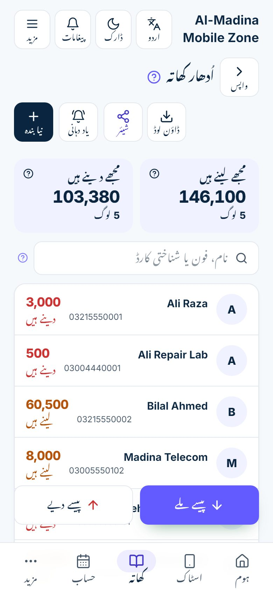
تصویر 33: ادھار کھاتہ: کس نے آپ کو دینا ہے اور آپ نے کس کو دینا ہے
اوپر دو بڑے ڈبے نظر آتے ہیں:
مجھے لینے ہیں وہ کل رقم ہے جو لوگوں نے آپ کو دینی ہے، اور کتنے لوگوں نے۔ اسے دبائیں تو صرف وہی لوگ نظر آئیں گے۔
مجھے دینے ہیں وہ کل رقم ہے جو آپ نے دوسروں کو دینی ہے (ڈیلر، دوسری دکانیں، ریپئر لیب)، اور کتنے لوگوں کو۔
ان کے نیچے لوگوں کی فہرست ہے۔ ہر نام کے ساتھ رقم اور رنگ میں مجھے لینے ہیں یا مجھے دینے ہیں لکھا ہوتا ہے۔ جس بندے کا حساب برابر ہو اس کے ساتھ صاف لکھا ہوتا ہے۔
اوپر والے بٹن:
ڈاؤن لوڈ پورا کھاتہ PDF، Excel یا CSV میں دیتا ہے۔ شیئر اسے سیدھا WhatsApp یا کسی اور ایپ پر بھیج دیتا ہے۔
یاد دہانی WhatsApp یاد دہانی کی فہرست کھولتا ہے (نیچے دیکھیں)۔
نیا بندہ گاہک، ڈیلر، دوسری دکان یا ٹیکنیشن شامل کرتا ہے۔
کسی کو جلدی ڈھونڈنے کے لیے سرچ والا خانہ (نام، فون یا شناختی کارڈ) استعمال کریں۔ فون نمبر کے چند ہندسے بھی کافی ہیں۔
نیا بندہ شامل کریں
نیا بندہ دبائیں۔
نام اور موبائل نمبر لکھیں (+92 کے بعد، شروع والے 0 کے بغیر، مثلاً 3001234567)۔
قسم چنیں: گاہک، ڈیلر، دوسری دکان یا ٹیکنیشن۔
مزید لکھنا ہو تو مزید تفصیل دبائیں: شناختی کارڈ (اور کارڈ کا اسکین)، شہر، پتہ، نوٹ اور ڈیلر کے لیے ہول سیل قیمت۔ جس بندے کی یہ تفصیل پہلے سے ہو، اسے بدلتے وقت یہ خود کھل جاتا ہے۔
اگر آپ کے پرانے رجسٹر میں اس بندے نے پہلے سے آپ کو دینا تھا (یا آپ نے اسے دینا تھا)، تو اسے پرانا بقایا میں لکھیں اور یہ مجھے دے گا یا میں اسے دوں گا چنیں۔
محفوظ کریں دبائیں۔
پیسے ملے (گاہک آپ کو ادائیگی کرتا ہے)
مثال: بلال احمد نے ایک فون کے Rs. 60,500 آپ کو دینے ہیں۔ آج وہ Rs. 10,000 لے کر آیا ہے۔
پیسے ملے دبائیں (کھاتے پر، یا بلال کے اپنے صفحے پر)۔
اگر پہلے سے نہیں چنا تو Bilal Ahmed چنیں۔ اس کا بقایا نام کے ساتھ نظر آتا ہے۔
رقم میں 10000 لکھیں۔
طریقہ چنیں (نیچے فہرست دیکھیں)۔ یہاں نقد ہے۔
چاہیں تو نوٹس لکھیں (مثلاً "پہلی قسط")۔
رقم وصول کریں دبائیں۔
چار طریقے:
نقد: اس نے کاؤنٹر پر دیے۔ پیسے آپ کے گلے میں جاتے ہیں۔
آن لائن: اس نے بینک ٹرانسفر، Easypaisa، JazzCash یا کسی اور ایپ سے بھیجے۔ چنیں کہ آپ کے کس اکاؤنٹ میں آئے؛ گلہ نہیں بدلتا۔
چیک: اس نے چیک دیا۔ چیک کلیئر ہونے تک اپنے الگ اکاؤنٹ میں رہتے ہیں۔
بیرونِ ملک سے: کسی رشتہ دار نے ترسیلِ زر کی سروس سے بھیجے۔ رقم ان کی کرنسی میں اور ریٹ لکھیں (مثلاً 500 SAR × 74.20)؛ ایپ روپے خود نکال لیتی ہے۔
بلال کا بقایا فوراً کم ہو کر Rs. 50,500 رہ جاتا ہے۔ ادائیگی پہلے اس کے سب سے پرانے بقایا بلوں میں لگتی ہے، اس لیے اس کے بل ٹھیک ٹھیک ادا شدہ یا کچھ ادا دکھاتے ہیں۔ رسید پرنٹ کرنے یا WhatsApp پر بھیجنے کے لیے تیار ہوتی ہے۔
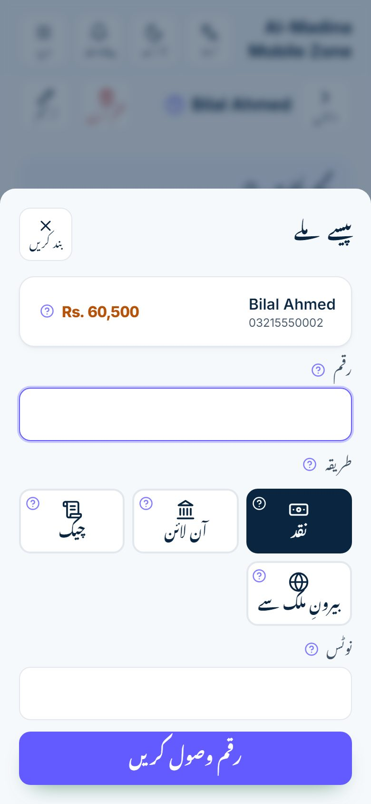
تصویر 34: پیسے ملے: رقم اور طریقہ
پیسے دیے (آپ ڈیلر یا بیچنے والے کو ادائیگی کرتے ہیں)
مثال: آپ نے Rehman Traders سے پانچ فون خریدے اور ابھی Rs. 47,280 دینے ہیں۔ آج آپ اپنے HBL اکاؤنٹ سے Rs. 20,000 دیتے ہیں۔
پیسے دیے دبائیں۔
Rehman Traders چنیں۔
رقم20000، طریقہآن لائن، اکاؤنٹ HBL Current۔
رقم ادا کریں دبائیں۔
Rehman Traders کو آپ نے جو دینا ہے وہ کم ہو کر Rs. 27,280 رہ جاتا ہے اور نقد اور بینک میں HBL کا بیلنس Rs. 20,000 کم ہو جاتا ہے۔
بندے کا صفحہ
کھاتے میں کسی بھی نام کو دبائیں تو اس کا صفحہ کھل جاتا ہے۔
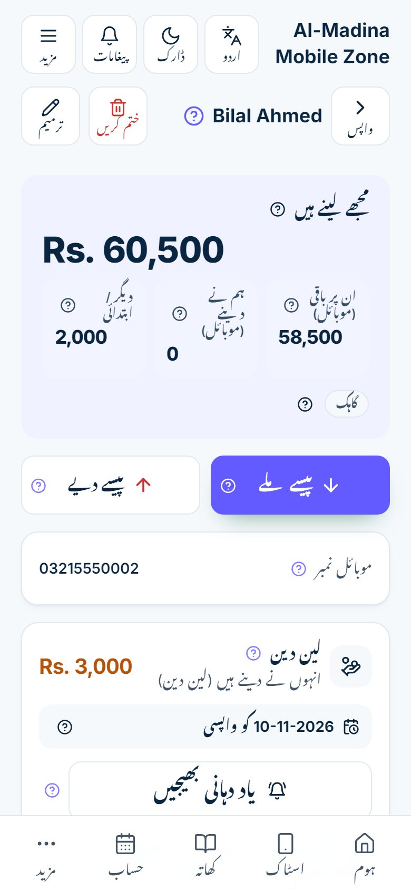
تصویر 35: ایک بندے کا کھاتہ صفحہ
اوپر بڑا بقایا کارڈ ہے: مجھے لینے ہیں، مجھے دینے ہیں یا صاف۔ اس کے نیچے بقایا تین حصوں میں بٹا ہوتا ہے تاکہ آپ سمجھ سکیں کہ یہ کہاں سے آیا:
ان پر باقی (موبائل) وہ ہے جو ان کے فروخت والے بلوں پر ابھی ادا نہیں ہوا۔
ہم نے دینے (موبائل) وہ ہے جو ان سے خریداری کے بلوں پر آپ نے ابھی دینا ہے۔
دیگر / ابتدائی باقی سب کچھ ہے: آپ کی پرانی ڈائری کا ابتدائی بیلنس، ایکسیسریز، لین دین اور ایڈجسٹمنٹ۔
اس کے نیچے آپ کو ملے گا:
اس بندے کے لیے پیسے ملے اور پیسے دیے کے بٹن۔
اس کا موبائل نمبر، کال اور WhatsApp کے ساتھ۔
لین دین کارڈ (باب 17)۔
وہ فون جو آپ نے اسے بیچے اور اس سے خریدے۔
کھاتے کی ہسٹری: ہر فروخت، ادائیگی، واپسی اور لین دین، تاریخ، رقم اور ہر لائن کے بعد چلتے بقایا کے ساتھ۔
نام، فون یا قسم بدلنے کے لیے ترمیم، غلطی سے بنے بندے کو ہٹانے کے لیے ختم کریں، اور اس کا اسٹیٹمنٹ PDF، Excel یا CSV میں لینے کے لیے ڈاؤن لوڈ۔
کھلے بقایا جات: فون، گاہک، ڈیلر، ٹیکنیشن کے حساب سے لینا / دینا
صرف مالک اور منیجر کے لیے۔ ادھار اسکرین پر اوپر لینا / دینا دبائیں (یا مزید ← کھلے بقایا جات)۔
اوپر کے دو کارڈ دکان کا کل ہیں: لینا ہے اور دینا ہے۔ کسی ایک پر دبائیں تو صرف وہی طرف دکھے گی۔
موبائل / IMEI، گاہک، ڈیلر اور ٹیکنیشن میں بدلیں۔ یہ وہی رقم چار طرح دکھاتی ہے؛ ہر رقم ایک ہی بار گنی جاتی ہے۔
IMEI، ماڈل، نام یا بل نمبر سے تلاش کریں۔
ہر لائن لینا اور دینا الگ دکھاتی ہے، چاہے ایک ہی فون یا شخص پر دونوں ہوں۔ مثال: ایک فون بلال سے ادھار پر 20,000 میں خریدا، علی کو ادھار پر 15,000 میں بیچا اور عثمان کی لیب میں مرمت ہوئی (2,000 ابھی نہیں دیے) تو لینا 15,000 اور دینا 22,000۔
جس بل میں ایک سے زیادہ فون ہوں اس کا بقایا بل پر رہتا ہے۔ فون والے حصے میں یہ ایک بار IMEI کے بغیر (کئی فون کا بل) میں آتا ہے، اور شخص کے نیچے بھی دکھتا ہے۔
جو کسی بل سے نہ جڑے، جیسے پرانا بقایا یا ایڈوانس، وہ شخص کے نیچے پرانا بقایا / دیگر میں آتا ہے۔
کسی لائن پر دبائیں تو ہر بل، کام یا لیب چارج دکھے گا: شخص، کل رقم، کتنا دیا (ادائیگیوں کے ساتھ) اور کتنا باقی۔ کھولیں بل دکھاتا ہے۔ رقم وصول کریں یا رقم دیں معمول کا ادائیگی فارم شخص، سمت، رقم اور بل کے ساتھ بھرا ہوا کھولتا ہے؛ یہ ادا ہوگا والی لائن بتاتی ہے کہ رقم کس چیز کی ہے۔ پوری یا کچھ رقم دے سکتے ہیں۔ رسید معمول کے مطابق چھپتی ہے اور ہر فہرست تازہ ہو جاتی ہے۔
غلطی ٹھیک کرنا
کھاتہ جلد والے رجسٹر کی طرح ہے: صفحے کبھی پھاڑے نہیں جاتے۔ اگر کوئی ادائیگی غلط لکھی گئی ہو تو اسے کھولیں اور وجہ لکھ کر منسوخ کریں۔ پرانا اندراج (کٹا ہوا) رہتا ہے اور ایک الٹا اندراج بقایا ٹھیک کر دیتا ہے۔ پھر صحیح اندراج کریں۔ اس طرح ہسٹری ہمیشہ بتاتی ہے کہ کیا ہوا اور کس نے کیا۔
WhatsApp پر ادھار کی یاد دہانی
ادھار کھاتے کے اوپر یاد دہانی دبائیں۔ ہر وہ بندہ جس نے آپ کو دینا ہے فہرست میں آ جاتا ہے، سب سے بڑا بقایا پہلے، ساتھ یہ کہ اس کا کھاتہ کتنے دن سے رکا ہے اور آخری یاد دہانی کب ہوئی۔ 7 / 15 / 30 دن سے پرانا سے فہرست چھوٹی کریں۔
نام کے ساتھ والا سبز WhatsApp بٹن دبائیں۔
WhatsApp کھلتا ہے اور پیغام دکان کی زبان میں پہلے سے لکھا ہوتا ہے، مثلاً: "بلال، Al-Madina Mobile کی طرف سے یاد دہانی: آپ کے کھاتے پر Rs. 50,500 باقی ہیں۔"
WhatsApp میں بھیجیں دبائیں۔
سب کو بھیجیں فہرست میں ایک ایک کر کے چلتا ہے تاکہ آپ ہر پیغام جلدی بھیج سکیں۔
خود بخود یاد دہانی: مزید ← اطلاعات ← ادھار کی یاد دہانی میں جائیں، گاہکوں کو خود یاد دلائیں پر نشان لگائیں، اور چنیں کہ کتنے خاموش دنوں کے بعد (جب کھاتہ اتنے دن سے رکا ہو) اور کس وقت۔ ہر رات ایپ ان لوگوں کو یاد دلاتی ہے جن کے کھاتے اتنے دن سے رکے ہوں۔ خود بخود بھیجنے کے لیے آپ کے سافٹ ویئر فراہم کنندہ کی طرف سے WhatsApp Business سروس لگی ہونی چاہیے؛ اس کے بغیر پیغامات پیغامات (اوپر والی گھنٹی) میں انتظار کرتے ہیں اور ایک دبانے سے WhatsApp میں کھل جاتے ہیں۔
رات کی رپورٹ
مالک دکان پر نہ ہو تب بھی ہر رات پورے دن کا حساب WhatsApp یا ای میل پر لے سکتا ہے۔
مزید ← اطلاعات میں جائیں۔
مالک کو کے نیچے مالک کا واٹس ایپ نمبر اور/یا مالک کا ای میل لکھیں۔
مالک کو رات کی رپورٹ کے نیچے ہر رات دن کا حساب بھیجیں · WhatsApp اور/یا · ای میل پر نشان لگائیں۔
وقت (وقت) رکھیں، مثلاً 21:30۔
ہر رات ایک پیغام آتا ہے جس میں ہوتا ہے: کتنے فون بکے اور رقم، ہاتھ میں پیسے، ادھار دیا اور وصول ہوا، خرچے، منافع، کل لینے اور دینے، اور اسٹاک میں فون۔ آج کا حساب ابھی بھیجیں اسے فوراً بھیج دیتا ہے، جو آزمانے کے لیے کام آتا ہے۔
17. لین دین (بغیر بل کے دیے یا لیے پیسے)
ہر بازار میں لوگوں کے درمیان بغیر کسی خرید و فروخت کے پیسے چلتے ہیں۔ آپ کسی پکے گاہک کو گھریلو ضرورت کے لیے Rs. 25,000 دیتے ہیں۔ پڑوسی دکان ڈیلر کو دینے کے لیے ایک دن کے لیے آپ کو Rs. 50,000 دیتی ہے۔ دکان کی زبان میں اسے لین دین کہتے ہیں۔ یہ نہ فروخت ہے نہ خریداری، اس لیے اس سے آپ کی فروخت یا ادھار کے حساب خراب نہیں ہونے چاہییں۔
ایپ لین دین کو بندے کے بلوں والے اسی کھاتے میں رکھتی ہے، تاکہ ہر بندے کا ہمیشہ ایک ہی کل ہو۔ لیکن ہر جگہ اس پر لین دین کا نشان ہوتا ہے، اس لیے ہر رپورٹ اسے الگ دکھاتی ہے، اور بعد میں اگر وہ بندہ آپ سے خریدے یا آپ کو بیچے تو آپ اسے بل میں ایڈجسٹ کر سکتے ہیں۔
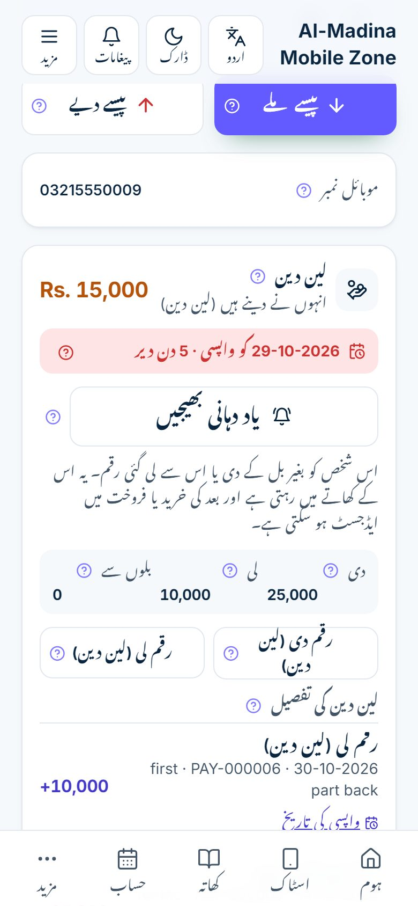
تصویر 36: بندے کے صفحے پر لین دین کارڈ
دیے ہوئے پیسے لکھیں (لین دین باہر)
مثال: عثمان، ایک پکا گاہک، Rs. 25,000 مانگتا ہے اور 29 تاریخ تک واپس کرنے کا وعدہ کرتا ہے۔
ادھار کھاتے سے عثمان کا صفحہ کھولیں (اگر نیا ہے تو نیا بندہ سے شامل کریں)۔
نیچے لین دین کارڈ تک جائیں اور رقم دی (لین دین) دبائیں۔
لین دین کی رقم لکھیں: 25000۔
چنیں کہ پیسے کیسے گئے: گلے سے نقد، یا بینک یا والٹ سے آن لائن۔
واپسی کی تاریخ (اختیاری) رکھیں، مثلاً 29-10-2026۔
چاہیں تو نوٹ لکھیں ("بہن کی شادی کے لیے")۔
محفوظ کریں — رقم دی دبائیں۔
اب عثمان کے کارڈ پر انہوں نے دینے ہیں (لین دین) Rs. 25,000 اور 29-10-2026 کو واپسی نظر آتا ہے۔ "لین دین" کے عنوان والی چھوٹی رسید پرنٹ کی جا سکتی ہے یا اسے بھیجی جا سکتی ہے۔
لیے ہوئے پیسے لکھیں (لین دین اندر)
مثال: ساتھ والی دکان Madina Telecom آپ کو Rs. 50,000 نقد دیتی ہے۔
Madina Telecom کا صفحہ کھولیں۔
رقم لی (لین دین) دبائیں۔
رقم 50000، طریقہ نقد، اگر طے ہوئی ہو تو واپسی کی تاریخ۔
محفوظ کریں — رقم لی دبائیں۔
کارڈ پر ہم نے دینے ہیں (لین دین) Rs. 50,000 نظر آتا ہے۔ پیسے اب آپ کے گلے میں ہیں، اور دن کا حساب اسے لین دین لیا دکھاتا ہے، فروخت نہیں۔
لین دین کارڈ کیا دکھاتا ہے
کھلا لین دین بڑے ہندسوں میں، انہوں نے دینے ہیں (لین دین)، ہم نے دینے ہیں (لین دین) یا کوئی لین دین باقی نہیں کے ساتھ۔
واپسی کی تاریخ: تاریخ کے ساتھ واپسی، آج واپسی ہے، یا سرخ رنگ میں 5 دن دیر۔ جو پیسے دکان نے دینے ہیں ان کے لیے لکھا ہوتا ہے تک ہم نے واپس دینے ہیں اور تاریخ۔
دیے: اس بندے کو دکان کی طرف سے دیے گئے سارے لین دین کے پیسے۔
لیے: اس بندے سے لیے گئے سارے لین دین کے پیسے، اس کی واپس کی ہوئی رقم سمیت۔
بلوں سے: کھاتے کا باقی بقایا جو بلوں سے آیا ہے، لین دین سے نہیں۔
لین دین کی تفصیل: ہر اندراج اپنے نمبر، تاریخ اور نوٹ کے ساتھ۔ دیے ہوئے منفی کے ساتھ، لیے ہوئے جمع کے ساتھ۔ منسوخ شدہ پر لکیر لگی ہوتی ہے۔
حل شدہ مثال: آپ نے عثمان کو Rs. 25,000 دیے۔ 30-10 کو اس نے Rs. 10,000 واپس کیے۔ کارڈ پر دیے 25,000، لیے 10,000، اور انہوں نے دینے ہیں (لین دین) Rs. 15,000 نظر آتا ہے۔
جب بندہ پیسے واپس کرے
لین دین کے واپس آنے والے پیسے بھی لین دین ہی ہیں۔ بندے کا صفحہ کھولیں اور جتنی رقم اس نے واپس کی اس کے ساتھ رقم لی (لین دین) دبائیں۔ اس کے لیے پیسے ملے استعمال نہ کریں، کیونکہ وہ بلوں کے لیے ہے۔
اسی طرح جب آپ Madina Telecom کو ادھار لیے پیسے واپس کریں، تو رقم دی (لین دین) استعمال کریں۔
واپسی کی تاریخیں اور یاد دہانی
تاریخ اندراج کرتے وقت رکھیں، یا بعد میں: لین دین کی تفصیل میں کسی اندراج کے نیچے تاریخ والی لائن دبائیں، نئی واپسی کی تاریخ چنیں اور تاریخ محفوظ کریں دبائیں۔
جب تاریخ قریب ہو یا گزر جائے تو کارڈ دیر کے دنوں کی تعداد کے ساتھ سرخ ہو جاتا ہے۔
یاد دہانی بھیجیں دبائیں۔ WhatsApp ایک مؤدب پیغام کے ساتھ کھلتا ہے جس میں رقم اور تاریخ ہوتی ہے۔ بھیجیں دبائیں۔ پھر کارڈ پر تاریخ کے ساتھ آخری یاد دہانی نظر آتی ہے۔
اگر خود بخود یاد دہانی چالو ہو (مزید ← اطلاعات ← ادھار کی یاد دہانی)، تو ایپ ان لوگوں کو بھی یاد دلاتی ہے جن کا لین دین کل واپس ہونا ہے یا دیر ہو چکی ہے، زیادہ سے زیادہ تین دن میں ایک بار۔
ہوم اسکرین کا توجہ طلب حصہ بھی "لین دین واپس کرنے میں دیر والے لوگ" دکھاتا ہے۔
لین دین کو بل میں ایڈجسٹ کریں
کبھی وہی بندہ بعد میں آپ سے فون خریدتا ہے، یا آپ کو بیچتا ہے۔ تب پہلے سے دیے ہوئے پیسے اس بل کی ادائیگی کر سکتے ہیں۔
مثال: کامران نے Rs. 10,000 آپ کے پاس لین دین کے طور پر رکھے (آپ نے رقم لی (لین دین) لکھا)۔ اگلے ہفتے وہ Rs. 8,000 کا ہینڈز فری، چارجر اور کور ادھار پر لیتا ہے۔ اب اس کے صفحے پر ایپ ایک کارڈ بلوں میں ایڈجسٹ کریں دکھاتی ہے: "ان کے دیے ہوئے پیسوں میں سے Rs. 8,000 ان کے کھلے فروخت بلوں میں لگ سکتے ہیں"۔
بندے کا صفحہ کھولیں۔
بلوں میں ایڈجسٹ کریں کارڈ ڈھونڈیں۔
ابھی ایڈجسٹ کریں دبائیں۔
بل ادا شدہ ہو جاتا ہے، اور Rs. 2,000 لین دین کے طور پر کھلے رہتے ہیں۔ کھاتے کا کل بالکل نہیں بدلتا؛ صرف بل اب ادا شدہ دکھاتے ہیں۔ گلے میں کوئی پیسہ نہیں ہلتا۔
یہی الٹی طرف بھی کام کرتا ہے: دکان کے دیے ہوئے پیسے اس بندے کے دکان کے کھلے خریداری بلوں میں لگ سکتے ہیں۔ پہلے پرانے ایڈوانس استعمال ہوتے ہیں، پھر لین دین، سب سے پرانا پہلے۔
غلط لین دین اندراج منسوخ کرنا
اندراج کھولیں اور کسی بھی ادائیگی کی طرح وجہ لکھ کر منسوخ کریں۔ یہ فہرست میں لکیر لگا ہوا رہتا ہے، اور بقایا الٹے اندراج سے ٹھیک ہو جاتا ہے۔
رپورٹوں میں لین دین کہاں نظر آتا ہے
دن کا حساب: گیا کے نیچے لین دین دیا اور آیا کے نیچے لین دین لیا۔
دکان کا آڈٹ ← ادھار: جس میں لین دین والی لائن بتاتی ہے کہ کل ادھار میں سے کتنا لین دین ہے۔ یہ کل کے اندر ہے، اضافی نہیں۔
دکان کا آڈٹ ← لین دین: اس کی اپنی پوری اسکرین (باب 21 دیکھیں)۔
رپورٹوں میں ادھار وصولی صرف بلوں کے پیسے گنتی ہے، لین دین کبھی نہیں۔
18. قسطیں (قسط)
بہت سے گاہک فون قسطوں پر لیتے ہیں: کچھ پیسے ابھی (ایڈوانس)، باقی برابر ماہانہ حصوں میں جنہیں قسط کہتے ہیں۔ ایک ضامن (ضامن) گاہک کی ضمانت دیتا ہے۔ ایپ پلان بناتی ہے، بتاتی ہے کس کی قسط آئی ہے، اور سب کچھ گاہک کے کھاتے میں رکھتی ہے۔
فون قسطوں پر بیچیں
مثال: وقاص علی Rs. 85,000 کا Samsung Galaxy A35 لیتا ہے۔ وہ Rs. 25,000 ابھی دیتا ہے اور باقی 6 ماہانہ قسطوں میں۔
بیچیں دبائیں اور فون چنیں۔
قیمت رکھیں: Rs. 85,000۔
قسطوں پر بیچیں پر نشان لگائیں۔
گاہک چنیں، Waqas Ali (یا اسے شامل کریں)۔
ابھی ایڈوانس (روپے) لکھیں: 25000۔ یہ اسی طریقے سے لیا جاتا ہے جو آپ نے فروخت پر چنا (نقد، آن لائن یا چیک)۔
کتنے مہینے کے نیچے 3، 6، 9، 12، 18 یا 24 دبائیں۔ یہاں 6 دبائیں۔
ماہانہ (روپے) کی رقم خود بھر جاتی ہے: (85,000 − 25,000) ÷ 6 = Rs. 10,000۔ اگر آپ نے کوئی اور رقم طے کی ہے تو بدل دیں؛ آخری قسط میں جو بچے وہ آ جاتا ہے۔
قسط کی مہینے کی تاریخ رکھیں (مثلاً 10 تاریخ)۔ اگلے مہینے اسی تاریخ سے شروع کرنے کے لیے پہلی قسط خالی چھوڑیں، یا کوئی تاریخ چنیں۔
ضامن کے نیچے ضامن کا نام، موبائل اور شناختی کارڈ لکھیں۔
فروخت مکمل کریں۔
رسید پر پلان چھپتا ہے: "ایڈوانس Rs. 25,000 · 6 × Rs. 10,000 · ہر مہینے کی 10 تاریخ"، پہلی تاریخ اور ضامن۔ باقی (Rs. 60,000) وقاص کے کھاتے میں عام ادھار کی طرح رہتا ہے۔
قسطوں کی فہرست
مزید ← قسطیں میں جائیں۔
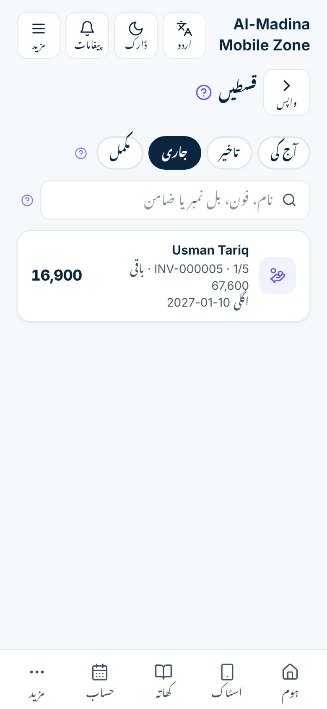
تصویر 37: قسطیں: حالت کے حساب سے پلان
چار ٹیب پلان دکھاتے ہیں:
آج کی: وہ قسطیں جو آج بنتی ہیں۔
دیر والی: وہ پلان جن کی کوئی قسط رہ گئی ہو۔
جاری: وہ سب پلان جن کی ادائیگی ابھی چل رہی ہے۔
مکمل: پوری طرح ادا شدہ پلان۔
نام، فون، بل نمبر یا ضامن سے ڈھونڈیں۔ فہرست میں ہر پلان پر گاہک، بل نمبر، کتنی قسطیں ادا ہوئیں (مثلاً 1/5)، باقی رقم اور اگلی تاریخ نظر آتی ہے۔
شیڈول دیکھنے کے لیے پلان دبائیں۔ ہر قسط پر ادا شدہ، جزوی، آج، دیر یا باقی لکھا ہوتا ہے۔ گاہک اور ضامن کے نمبر کال اور WhatsApp کے ساتھ وہیں ہوتے ہیں۔
قسط لیں
پلان کھولیں اور قسط لیں دبائیں۔
اگلی قسط کی رقم بھری ہوتی ہے۔ اگر وہ صرف کچھ حصہ دے، یا دو مہینے اکٹھے دے، تو بدل دیں۔
نقد، آن لائن یا چیک چنیں۔
محفوظ کریں۔
یہ اس بل پر عام ادائیگی ہے، اس لیے کھاتہ، دن کا حساب اور گاہک کا اسٹیٹمنٹ سب برابر رہتے ہیں۔
یاد دہانی
کسی پلان پر واٹس ایپ پر یاد دلائیں دبائیں۔ WhatsApp اس پیغام کے ساتھ کھلتا ہے: "آپ کی Rs. 10,000 کی قسط 10-01-2027 کو بنتی ہے" (یا "5 دن دیر ہو چکی ہے")۔
جب گاہکوں کو خود یاد دلائیں چالو ہو، تو جن پلانوں کی قسط کل بنتی ہے یا دیر ہو چکی ہے انہیں رات کو خود یاد دہانی چلی جاتی ہے، زیادہ سے زیادہ تین دن میں ایک بار۔
ہوم کا توجہ طلب حصہ آج کی قسطیں اور قسط کے پلان تاخیر سے دکھاتا ہے۔
19. دن کا حساب، خرچے اور پیسوں کے اکاؤنٹ
دن کے آخر میں ہر دکاندار تین سوال پوچھتا ہے: میں نے کتنا بیچا، میرے ہاتھ میں کتنے پیسے ہیں، اور باقی کہاں گئے؟ دن کا حساب تینوں کا جواب ایک ہی اسکرین پر دیتا ہے۔
دن کا حساب کھولیں
نیچے والی پٹی میں حساب دبائیں (یا ہوم ← حساب والا کارڈ ← تفصیل دیکھیں، یا مزید ← دن کا حساب)۔
اوپر مدت چنیں: آج، کل، ہفتہ، اس مہینے یا تاریخ سے تاریخ۔ تاریخ سے تاریخ کے لیے دو تاریخیں چنیں؛ "سے" والی تاریخ "تک" والی کے بعد نہیں ہو سکتی، اور کوئی بھی آنے والے دنوں کی نہیں ہو سکتی۔
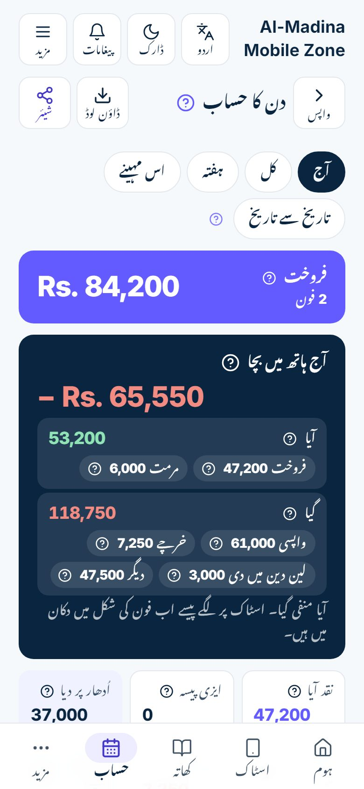
تصویر 38: دن کا حساب
اوپر سے نیچے تک آپ کو یہ نظر آتا ہے:
فروخت ہوا: کتنے فون بکے اور کل رقم۔ جو فروخت واپس ہو گئی وہ نہیں گنی جاتی۔
آج ہاتھ میں بچا: بڑا گہرا کارڈ۔ یہ آیا میں سے گیا نکال کر ہے۔
آیا، وجوہات چھوٹے چپس میں: فروخت، ادھار وصولی، مرمت، لین دین لیا، اپنے اکاؤنٹ سے آیا، دیگر۔
گیا، وجوہات کے ساتھ: خریدا گیا سٹاک، واپسی، خرچے، لوگوں کو دیے، لین دین دیا، اپنے اکاؤنٹ میں گیا، دیگر۔
ڈبے: نقد آیا، ایزی پیسہ (اور آپ کے دوسرے والٹ)، ادھار دیا، ادھار وصولی، خرچہ، واپسی پر لوٹایا، واپسی پر کاٹے اور منافع (صرف مالک اور منیجر)۔
کیا بکا: ہر فروخت، کس طرح ادائیگی ہوئی (نقد، ادھار، کچھ اُدھار وغیرہ) اور عملے میں سے کس نے بیچا۔
اس کے پیچھے کے اندراج دیکھنے کے لیے کوئی چپ یا ڈبہ دبائیں۔ ڈاؤن لوڈ حساب کو PDF، Excel یا CSV میں دیتا ہے، اور شیئر اسے WhatsApp پر بھیجتا ہے۔
"ہاتھ میں بچے" کا مطلب، حل شدہ مثال کے ساتھ
"ہاتھ میں بچے" اصل پیسے ہیں: چنی ہوئی مدت میں جو کچھ آپ کے گلے، بینک اور والٹ میں آیا، اس میں سے جو کچھ گیا وہ نکال کر۔ یہ منافع نہیں ہے۔ اسٹاک پر خرچ کیے پیسے ضائع نہیں ہوئے؛ وہ اب آپ کی شیلف پر فون ہیں۔
اب فرض کریں اسی دن آپ نے ایک ڈیلر سے Rs. 150,000 نقد میں پانچ فون بھی خریدے ہوتے۔ تب گیا Rs. 228,050 ہوتا اور ہاتھ میں بچے − Rs. 129,050 دکھاتا۔ پریشان نہ ہوں۔ منفی کا مطلب یہ نہیں کہ آپ کا نقصان ہوا؛ Rs. 150,000 اب پانچ فونوں کی شکل میں آپ کی دکان میں کھڑے ہیں۔ آپ کا منافع الگ سے منافع میں اور رپورٹس میں نظر آتا ہے۔
خرچہ لکھیں
مالک اور منیجر۔ ہوم ← خرچہ، یا مزید ← خرچے۔
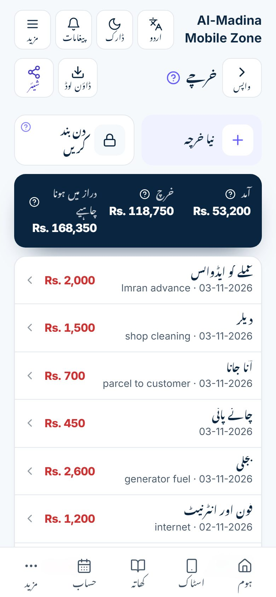
تصویر 39: خرچوں کی فہرست اور دن بند کریں
اسکرین کے اوپر آج کی نقدی آئی، نقدی گئی اور گلے میں ہونا چاہیے نظر آتا ہے، تاکہ آپ کو ہمیشہ پتا ہو کہ گلے میں کتنا ہونا چاہیے۔
مثال: آپ نے جنریٹر کے تیل کے Rs. 2,600 دیے۔
نیا خرچہ دبائیں۔
قسم چنیں: بجلی۔ دوسری تیار قسمیں ہیں دکان کا کرایہ، تنخواہ، عملے کا ایڈوانس، چائے پانی، مرمت کے پرزے، کرایہ / ٹرانسپورٹ، فون اور انٹرنیٹ، ٹیکس اور فیس، مالک نے نکالے اور دیگر۔
رقم: 2600۔
تفصیل (اختیاری): "جنریٹر کا تیل"۔
محفوظ کریں دبائیں۔
خرچہ گلے سے نکلتا ہے اور فہرست میں تاریخ اور تفصیل کے ساتھ نظر آتا ہے۔ یہ دن کے حساب میں خرچے کے نیچے اور منافع کی رپورٹ میں بھی آتا ہے۔
اپنی قسم شامل کرنے کے لیے (مثلاً "کمیٹی" یا "جنریٹر")، قسموں کی فہرست کھولیں اور نام لکھیں۔ آپ اپنی بنائی قسموں کا نام بدل یا انہیں ہٹا بھی سکتے ہیں۔
خرچہ ٹھیک کرنے کے لیے اسے دبائیں اور ترمیم چنیں، یا وجہ لکھ کر منسوخ کریں۔ منسوخ خرچہ فہرست میں کٹا ہوا رہتا ہے، اس لیے کچھ بھی بغیر نشان کے غائب نہیں ہوتا۔
دن بند کریں
رات کو گلہ گنیں اور دن بند کریں۔ اس سے غلطیاں تب پکڑی جاتی ہیں جب سب کو دن ابھی یاد ہو۔
خرچے پر دن بند کریں دبائیں۔
آپ کو شروع کی نقدی، نقدی آئی، نقدی گئی اور گلے میں ہونا چاہیے نظر آتا ہے۔
گلے کی نقدی گنیں اور گنی ہوئی نقدی میں لکھیں، مثلاً 168000۔
فرق کوئی کمی یا زیادتی دکھاتا ہے۔ اگر ہونا چاہیے Rs. 168,350 تھا تو فرق − Rs. 350 ہے۔
دن بند کریں دبائیں۔
ایک بار دن بند ہو جائے تو پہلے ہی بند لکھا آتا ہے۔
پیسوں کے اکاؤنٹ: گلہ، بینک، Easypaisa، JazzCash
زیادہ تر دکانیں ایک سے زیادہ جگہ پیسے رکھتی ہیں: گلہ، ایک بینک اکاؤنٹ، اور ایک دو والٹ جیسے Easypaisa اور JazzCash۔ ایپ ہر ایک کا الگ بیلنس رکھتی ہے۔
مزید ← نقد اور بینک میں جائیں۔
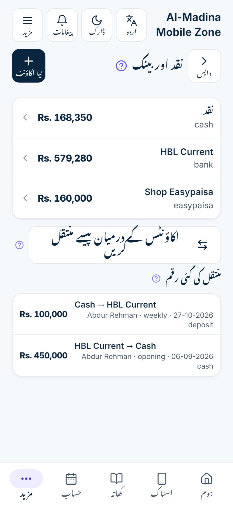
تصویر 40: نقد اور بینک: ہر اکاؤنٹ اپنے بیلنس کے ساتھ
ہر اکاؤنٹ اپنا نام، قسم اور بیلنس دکھاتا ہے۔ کسی اکاؤنٹ کو دبائیں تو اس کا روزنامچہ کھلتا ہے: ہر آنے اور جانے والا روپیہ، تاریخ اور وجہ کے ساتھ۔
اکاؤنٹ شامل کریں:
نیا اکاؤنٹ دبائیں۔
اکاؤنٹ کا نام لکھیں، مثلاً "دکان کا Easypaisa" یا "HBL Current"۔
قسم چنیں (نقد، بینک، Easypaisa، JazzCash وغیرہ)۔
چاہیں تو اکاؤنٹ / والٹ نمبر لکھیں۔
شروع کا بیلنس لکھیں: آج اس اکاؤنٹ میں جتنا ہے۔
محفوظ کریں۔
اب جب بھی آپ کسی فروخت، خریداری یا ادائیگی کے لیے آن لائن چنیں گے، نیا اکاؤنٹ ایک انتخاب کے طور پر آئے گا۔
اکاؤنٹس کے درمیان پیسے منتقل کریں۔ مثال: ہر ہفتے کو آپ گلے سے Rs. 100,000 HBL میں جمع کراتے ہیں۔
اکاؤنٹس کے درمیان پیسے منتقل کریں دبائیں۔
کہاں سے: نقد۔ کہاں: HBL Current۔
رقم: 100000۔ نوٹ: "ہفتے کی جمع"۔
منتقل کریں دبائیں۔
صرف دو بیلنس بدلتے ہیں۔ یہ نہ فروخت ہے نہ خرچہ۔ منتقلی منتقل کی گئی رقم کے نیچے تاریخ اور کرنے والے کے نام کے ساتھ لکھی جاتی ہے۔
20. رپورٹس اور ڈاؤن لوڈ
مالک اور منیجر: ہوم ← منافع اور رپورٹس، یا مزید ← رپورٹس۔
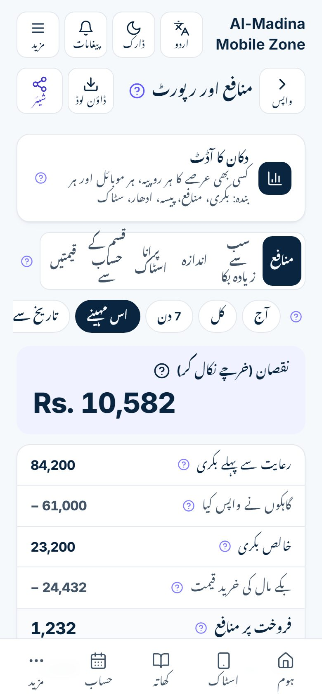
تصویر 41: منافع اور رپورٹس
اوپر ایک کارڈ ہے جو دکان کا آڈٹ کھولتا ہے (باب 21)، ایپ کی سب سے گہری رپورٹ۔ اس کے نیچے فوری رپورٹوں کی ٹیبیں ہیں:
منافع: مدت کا منافع۔
سب سے زیادہ بکنے والے: کون سے ماڈل سب سے زیادہ بکتے ہیں۔
اندازہ: اگلے 7 دن کا اندازہ اور کون سے فون ختم ہو جائیں گے۔
پرانا اسٹاک: فون اس حساب سے کہ کتنے دن سے دکان میں ہیں۔
قسم کے حساب سے: قسم کے حساب سے اسٹاک (فون، ٹیبلٹ، گھڑیاں)، تعداد، قیمتِ خرید پر اور مانگی قیمت پر مالیت کے ساتھ۔
قیمتیں: مانگی قیمت میں ہر تبدیلی اور مانگی قیمت سے کم ہر فروخت، کرنے والے کے نام کے ساتھ۔
چپس سے مدت چنیں: آج، کل، 7 دن، اس مہینے یا تاریخ سے تاریخ۔
منافع کی رپورٹ
منافع کی ٹیب ایک سادہ حساب کے گوشوارے کی طرح لائن بہ لائن پڑھی جاتی ہے:
رعایت سے پہلے بکری
دی گئی رعایت
گاہکوں نے واپس کیا (منفی)
خالص بکری
بکے مال کی خرید قیمت (منفی)
فروخت پر منافع
مرمت اور دوسری آمدنی (مرمت، واپسی پر رکھی کٹوتی)
ہر خرچے کی قسم (منفی)
اصل منافع (خرچے نکال کر)، یا اگر خرچے زیادہ تھے تو نقصان (خرچے نکال کر)۔
اس کے نیچے آپ کو جمع شدہ ٹیکس اور مالک نے نکالے (خرچہ نہیں) بھی نظر آتے ہیں۔
حل شدہ مثال (ایک ہفتہ): خالص بکری Rs. 420,000۔ بکے مال کی خرید قیمت Rs. 371,500۔ فروخت پر منافع Rs. 48,500۔ مرمت کی آمدنی Rs. 12,000۔ خرچے Rs. 18,200 (کرائے کا حصہ، بجلی، چائے، ٹرانسپورٹ)۔ اصل منافع = 48,500 + 12,000 − 18,200 = Rs. 42,300۔
سب سے زیادہ بکنے والے اور اندازہ
سب سے زیادہ بکنے والے ماڈلوں کو اس حساب سے دکھاتا ہے کہ کتنے بکے اور کتنی رقم لائے۔ مارکیٹ سے خریدنے جانے سے پہلے اسے دیکھیں۔
اندازہ آپ کے پچھلے چار ہفتے دیکھتا ہے اور اگلے 7 دن (اندازہ) اور کون سا فون ختم ہونے والا ہے دکھاتا ہے، اس مشورے کے ساتھ: اور منگوائیں، ٹھیک ہے یا نہیں بک رہا۔ یہ آپ کی اپنی فروخت پر مبنی اندازہ ہے، وعدہ نہیں۔
پرانا اسٹاک اور قیمتیں
پرانا اسٹاک دکان میں موجود فونوں کو اسٹاک میں دنوں کے حساب سے گروپ کرتا ہے۔ 60 دن سے پڑا فون شیلف پر پھنسا ہوا پیسہ ہے؛ کم قیمت یا ایکسچینج سودے کا سوچیں۔
قیمتیں مانگی قیمت کی ہر تبدیلی اور مانگی قیمت سے کم ہر فروخت دکھاتا ہے، کس نے اور کب کی۔ یہ آپ کے عملے کی دی ہوئی رعایتوں پر خاموش نظر ہے۔
ڈاؤن لوڈ اور شیئر کرنا (PDF، Excel، CSV)
ایپ کی تقریباً ہر فہرست ڈاؤن لوڈ یا شیئر کی جا سکتی ہے۔
رپورٹ کے اوپر دائیں طرف ڈاؤن لوڈ یا شیئر دبائیں۔
فارمیٹ چنیں (نیچے فہرست دیکھیں)۔
ڈاؤن لوڈ فائل محفوظ کرتا ہے (ویب سائٹ: آپ کا Downloads فولڈر؛ Android ایپ: Documents › MobileShop)۔ شیئر آپ کے فون کی شیئر فہرست کھولتا ہے، تاکہ آپ اسے فوراً WhatsApp پر بھیج سکیں۔
فارمیٹ:
PDF: بھیجنے یا رکھنے کے لیے تیار فائل۔ اردو رپورٹیں صحیح نستعلیق میں رہتی ہیں۔
ایکسل: Excel یا Google Sheets کے لیے۔
CSV: ایک سادہ فائل جو کوئی بھی سافٹ ویئر کھول سکتا ہے۔
پرنٹ (صرف ڈاؤن لوڈ میں): کاغذ پر پرنٹ۔
ڈاؤن لوڈ اور شیئر بٹن دن کے حساب، دکان کے اسٹاک، ادھار کھاتے، بندے کے صفحے، اسٹاک کی فہرست، خرچوں، فروخت کی فہرست اور خریداری کی فہرست پر بھی ہیں۔
بیلنس شیٹ اور ٹرائل بیلنس
بیلنس کا ٹیب آپ کی دکان کا حساب ویسے دکھاتا ہے جیسے اکاؤنٹنٹ دیکھتا ہے۔ دونوں صفحے ہر انٹری سے بنتے ہیں، اس لیے ان میں کچھ بھی ہاتھ سے نہیں لکھا جاتا اور نہ ہی یہاں کچھ بدلا جا سکتا ہے۔
مزید ← رپورٹس کھولیں اور بیلنس کا ٹیب دبائیں۔
اس دن تک میں آج کا دن رہنے دیں یا پرانا دن چنیں، مثلاً سال کے حساب کے لیے 30 جون۔
بیلنس شیٹ میں تین خانے ہیں: دکان کے پاس کیا ہے (گلہ، بینک اور والٹ، لوگوں نے آپ کو دینا ہے، اسٹاک (خرید کی قیمت پر))، دکان نے کیا دینا ہے (آپ نے لوگوں کو دینا ہے، لیا ہوا ٹیکس، ابھی جمع کرانا ہے) اور مالک کا حصہ (مالک کی ڈالی ہوئی رقم، اب تک کا منافع، منفی مالک نے نکالے)۔
ٹرائل بیلنس دبائیں تو ہر کھاتہ اپنے ڈیبٹ یا کریڈٹ بیلنس کے ساتھ اور دونوں کا کل دکھے گا۔
سبز لائن برابر ہے بتاتی ہے کہ دکان کے پاس جو ہے وہ دینا ہے + مالک کا حصہ کے برابر ہے۔
مثال: پاس ہے Rs. 9,50,000 = دینا ہے Rs. 1,50,000 + مالک کا حصہ Rs. 8,00,000۔
21. دکان کا آڈٹ
دکان کا آڈٹ آپ کے کاروبار کا پورا معائنہ ہے۔ یہ ایسے سوالوں کا جواب دیتا ہے: "پچھلے مہینے میں نے اصل میں کتنا کمایا؟"، "پیسے کہاں گئے؟"، "کس نے مجھے دینا ہے، اور کب سے؟" اور "کون سے فون میری شیلف پر پھنسے ہیں؟"۔ ہر ہندسہ دکان کے اپنے ریکارڈ سے نکالا جاتا ہے، اور ہر ہندسے کو دبا کر اس کے پیچھے کے بالکل وہی بل، ادائیگیاں یا فون دیکھے جا سکتے ہیں۔
کہاں: مزید ← دکان کا آڈٹ، یا منافع اور رپورٹس کے اوپر دکان کا آڈٹ کارڈ۔ صرف مالک اور منیجر۔ (سیکیورٹی ٹیب صرف مالک کے لیے ہے۔)
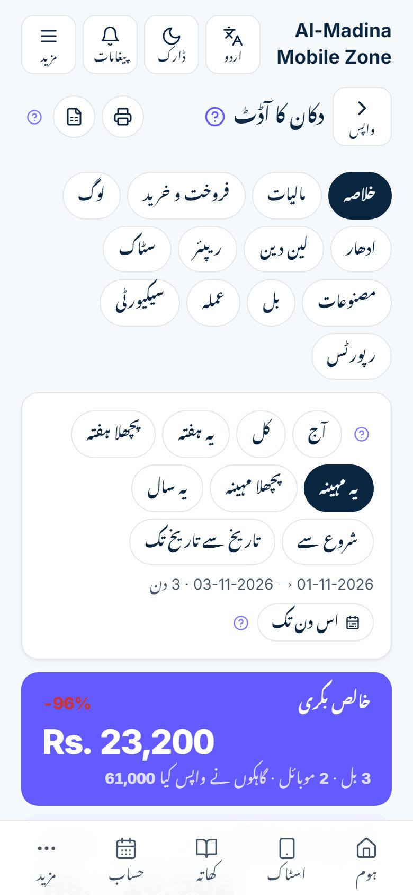
تصویر 42: دکان کا آڈٹ: ٹیبیں اور مدت کی پٹی
ٹیبیں اور مدت کی پٹی
اوپر یہ ٹیبیں ہیں: خلاصہ، مالیات، فروخت و خرید، لوگ، ادھار، لین دین، مرمت، اسٹاک، مصنوعات، بل، عملہ، سیکیورٹی اور رپورٹس۔
ان کے نیچے مدت کی پٹی ہے، ہر ٹیب پر ایک جیسی:
آج، کل، یہ ہفتہ، پچھلا ہفتہ، یہ مہینہ، پچھلا مہینہ، یہ سال، شروع سے، یا کسی بھی دو تاریخوں کے لیے تاریخ سے تاریخ تک۔
چپس کے نیچے والی لائن بالکل صحیح تاریخیں اور کتنے دن دکھاتی ہے، مثلاً "01-11-2026 ← 03-11-2026 · 3 دن"۔
اس دن تک سے آپ بیلنس کے لیے کوئی پچھلا دن چن سکتے ہیں۔ 30 ستمبر چنیں تو ہر بیلنس (نقد اور بینک، کس نے کس کو دینا ہے، اسٹاک میں فون) بالکل ویسا دوبارہ بن جاتا ہے جیسا اس شام تھا۔
اوپر دائیں طرف دو گول بٹن پرنٹ اور ایکسل ہیں: جو اسکرین آپ دیکھ رہے ہیں وہ پرنٹ والے صفحے یا Excel فائل کی شکل میں دیتے ہیں۔
زیادہ تر ہندسے پچھلی مدت کے مقابلے میں تبدیلی بھی دکھاتے ہیں، مثلاً سبز میں "+12%" یا سرخ میں "−8%"۔
اندر جائیں: ہر ہندسہ اپنی لائنیں کھولتا ہے
آڈٹ میں یہ سب سے اہم عادت ہے۔ جب کوئی ہندسہ عجیب لگے، اسے دبائیں۔
مثال: خلاصہ اس مہینے کے لیے "خرچے Rs. 38,400" دکھاتا ہے، اور آپ کو یہ زیادہ لگتا ہے۔ اسے دبائیں۔ ہر خرچے کی فہرست کھلتی ہے، سب سے بڑا پہلے، تاریخ، قسم، رقم اور لکھنے والے کے نام کے ساتھ۔ آپ کو Rs. 9,000 کا "مرمت کے پرزے" والا اندراج ملتا ہے جو کسی گاہک کی مرمت میں لگنا چاہیے تھا۔ اب آپ کو بالکل پتا ہے کہ کیا ٹھیک کرنا ہے۔
یہی فروخت، آنے جانے والے پیسوں، لوگوں کے بقایا، اسٹاک میں فونوں اور باقی ہر چیز پر کام کرتا ہے۔ آڈٹ میں کوئی بھی ہندسہ ایسا نہیں جسے آپ چیک نہ کر سکیں۔
خلاصہ
خلاصہ پوری مدت کا ایک صفحہ ہے:
خالص بکری، بلوں اور فونوں کی تعداد کے ساتھ، اور گاہکوں نے کیا واپس کیا۔
اصل منافع (خرچے نکال کر)، یا نقصان۔
مدت میں خریدا اسٹاک، خرچے، آنے والے اور جانے والے پیسے۔
نقد اور بینک، اسٹاک میں فون، جن لوگوں نے ہمیں دینا ہے اور جنہیں ہم نے دینا ہے، ہر ایک شروع ← آخر ← ابھی کی شکل میں۔
ابھی دیکھنا ہے: آج نمٹانے والی چیزیں، جیسے کلیئر نہ ہوئی شناخت کی جانچ، اسٹاک کے الرٹ، دیر والی قسطیں اور لین دین کی واپسی کی تاریخیں۔ فہرست کھولنے کے لیے چپ دبائیں۔
جانچ: کھاتے خود کو ثابت کرتے ہیں۔ مثلاً: شروع کی نقدی + آئے پیسے − گئے پیسے = آخر کی نقدی؛ ہر اندراج برابر؛ کھاتہ لیجر سے ملتا ہے؛ شروع کا اسٹاک + آیا − گیا = آخر کا اسٹاک۔ سبز نشان کا مطلب ہے ہندسے آپس میں ملتے ہیں۔
مالیات: منافع اور نقدی
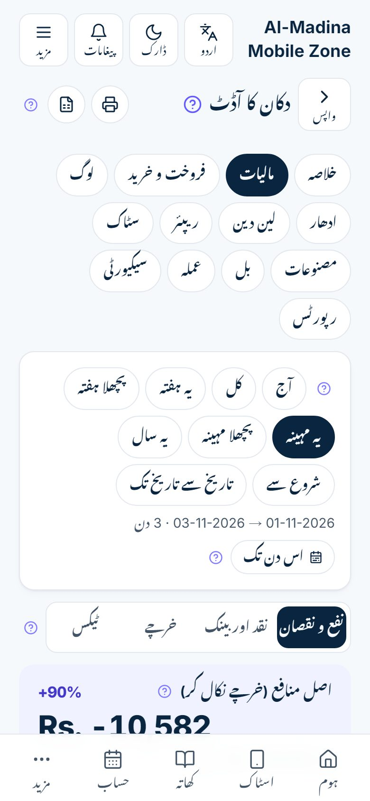
تصویر 43: مالیات: نفع نقصان، نقد اور بینک، خرچے، ٹیکس
مالیات کے چار حصے ہیں:
نفع نقصان: رعایت سے پہلے بکری، رعایتیں، واپسیاں، خالص بکری، بکے مال کی لاگت، مجموعی منافع، خرچے، خرچوں کے بعد منافع، دوسری آمدنی اور اصل منافع (خرچے نکال کر)۔ ہر لائن کے ساتھ بریکٹ میں پچھلی مدت ہوتی ہے، اور ایک چارٹ دن، ہفتے یا مہینے کے حساب سے منافع دکھاتا ہے۔
نقد اور بینک: پیسے کہاں سے آئے اور کہاں گئے، گلے، ہر بینک اور ہر والٹ کے لیے، مدت کے شروع سے آخر تک۔ اپنے ہی اکاؤنٹس کے درمیان منتقل پیسے الگ دکھائے جاتے ہیں۔ بیرونِ ملک سے آئے پیسوں پر بھیجنے والا، کرنسی، ریٹ اور حوالہ نظر آتا ہے۔
خرچے: قسم کے حساب سے پچھلی مدت کے ساتھ، سب سے بڑے اندراج اور کس نے لکھے۔
تصویر 44: فروخت و خرید: بلوں کی رقم، کاؤنٹر پر ادا، ادھار پر
دو حصے، فروخت اور خریداری۔
فروخت پر: کل بلوں کی رقم، بلوں، بکی چیزوں اور فروخت پر منافع کے ساتھ؛ پھر کاؤنٹر پر ادا کے مقابلے میں ادھار پر (اور کتنا ابھی باقی ہے)؛ دی گئی رعایت، ٹیکس، گاہکوں نے واپس کیا اور اوسط بل؛ اور کتنے بل پورا ادا، کچھ ادا یا بالکل ادا نہیں ہوئے۔ اس کے نیچے ملازم اور گاہک کے حساب سے فروخت۔
خریداری پر: کیا خریدا، کیا ادا کیا اور کیا ابھی دینا ہے، ہر سپلائر اور ہر ملازم کے حساب سے۔
لوگ
آپ کے چنے ہوئے پیمانے پر سب سے بڑے گاہک اور سپلائر: فروخت، بلوں کی تعداد، منافع، خریداری، فون، یا دونوں طرف کی سب سے بڑی بقایا رقم۔ کسی بندے کو دبائیں تو اس کا پورا سفر کھلتا ہے: پہلا اور آخری لین دین، اسے بیچے اور اس سے خریدے فون، وصول اور ادا کیے پیسے، واپسیاں اور بقایا، کسی پچھلے دن کے حساب سے بھی۔
ادھار
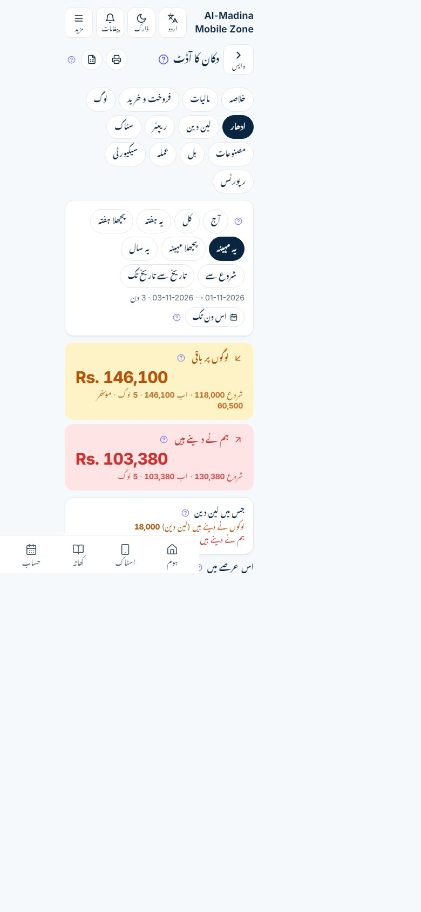
تصویر 45: ادھار: لوگوں نے ہمیں دینا ہے، ہم نے لوگوں کو دینا ہے
لوگوں نے دینا ہے اور ہم نے لوگوں کو دینا ہے، الگ الگ، ہر ایک شروع، ابھی، لوگوں کی تعداد اور تاریخ گزرے بقایا کے ساتھ۔
جس میں لین دین: ادھار کا وہ حصہ جو لین دین ہے۔ یہ کل کے اندر ہے، اضافی نہیں۔
مدت میں کھاتے کیسے چلے: ادھار دیا، وصول ہوا، لیا، ادا کیا، واپسیاں، لین دین دیا اور لیا، ابتدائی بیلنس۔
ہر قرض کی عمر، سب سے پرانے بقایا بل سے گنی جاتی ہے، عمر کے خانوں میں۔
تاریخ گزر گئی: صرف وہ بل تاریخ گزرے ہو سکتے ہیں جن پر وعدے کی تاریخ تھی (فروخت پر "ادائیگی کا وعدہ")۔ بغیر تاریخ کا بل صرف اپنی عمر دکھاتا ہے؛ اسے کبھی تاریخ گزرا نہیں کہا جاتا۔
بقایا بلوں والے لوگ اور فون۔
لین دین
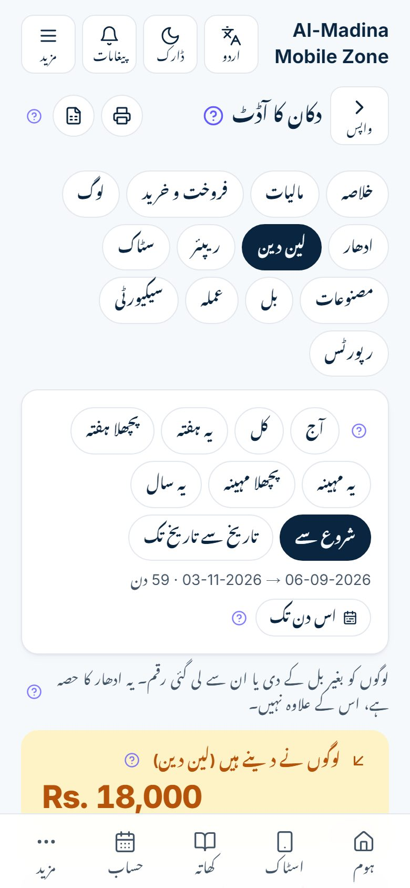
تصویر 46: دکان کے آڈٹ میں لین دین
یہ ٹیب لوگوں کو دیے یا ان سے بغیر بل کے لیے پیسے دکھاتی ہے (باب 17):
لوگوں نے دینے ہیں (لین دین) اور ہم نے دینے ہیں (لین دین): جو ابھی (یا اس دن تک والے دن) کھلا ہے، اور کتنے لوگ۔
مدت میں دیا اور لیا لین دین، پچھلی مدت کے مقابلے میں۔
بعد میں کتنا بلوں میں ایڈجسٹ ہوا، اور کتنے اندراج منسوخ ہوئے (کچھ ختم نہیں کیا جاتا)۔
دن، ہفتے یا مہینے کے حساب سے چارٹ؛ طریقے کے حساب سے تقسیم (نقد، بینک، Easypaisa وغیرہ)۔
واپسی کی تاریخیں: تاریخ والے اندراج، دیر والے پہلے: دیر، آج، 3 دن میں، بعد میں۔
شخص وار لین دین: ہر بندے کا دیا اور لیا، اس کا پورا کھاتہ اور جو ابھی کھلا ہے۔
مدت کا ہر اندراج اپنے نمبر، تاریخ، لکھنے والے اور نوٹ کے ساتھ۔
مرمت اور لیبیں
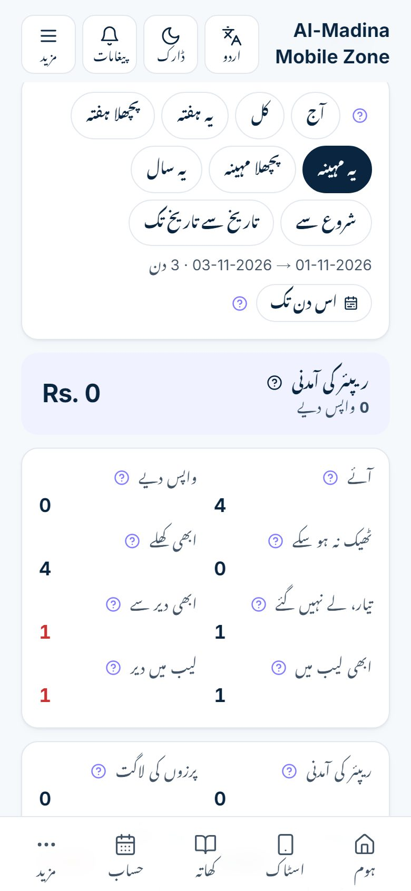
تصویر 47: دکان کے آڈٹ میں مرمت
تعداد: آئے، واپس دے دیا، ٹھیک نہ ہو سکے، ابھی کھلے، تیار، لے نہیں گئے، ابھی دیر سے، ابھی لیب میں اور لیب میں دیر۔
پیسے: مرمت کی آمدنی، پرزوں کی لاگت، لیب چارجز، ریپئر کا منافع، دکان کے اپنے فونوں پر لیب چارجز، اور اوسط بل۔
مدت کا چارٹ، ہر ریپئر لیب اپنے ریکارڈ کے ساتھ، ابھی کیا دیکھنا ہے، اور سب سے عام خرابیاں۔
مثال: آپ کو "تیار، لے نہیں گئے 6" نظر آتا ہے۔ اسے دبائیں، اور ان چھ گاہکوں کو فون کریں۔ یہ پیسے اور شیلف کی جگہ ہے جو آپ کے کاؤنٹر پر انتظار کر رہی ہے۔
اسٹاک اور اس کی عمر
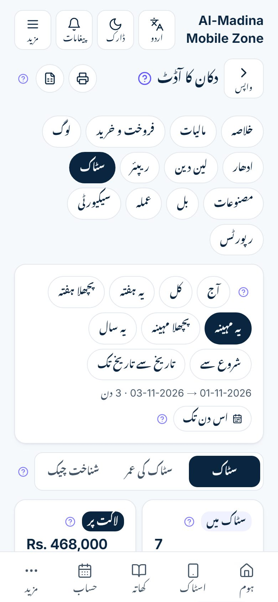
تصویر 48: دکان کے آڈٹ میں اسٹاک
اسٹاک کے تین حصے ہیں:
اسٹاک: ابھی (یا اس دن تک والے دن) اسٹاک میں فون، حالت، PTA، شناخت کی جانچ، قسم اور برانڈ کے حساب سے؛ قیمتِ خرید پر اور مانگی قیمت پر مالیت؛ متوقع مارجن؛ سب سے مہنگے فون اور سب سے کم مارجن والے۔
سٹاک کی عمر: عمر کے خانوں میں فون (تازہ، عام، سست، توجہ اور اس سے پرانے)، سیٹنگز ← اسٹاک آڈٹ کی حدیں میں آپ کی اپنی حدوں کے حساب سے۔ الرٹ بتاتے ہیں: مردہ اسٹاک، سست چلنے والے مہنگے فون، کم مارجن، بغیر مانگی قیمت والے فون، ابھی باقی شناخت کی جانچ، اور ایک سے زیادہ بار واپس آئے فون۔
شناخت کی جانچ: کتنی جانچ ہوئی، اور ہر چھوڑی گئی جانچ، کس نے چھوڑی، کس فون اور سپلائر کے لیے، اور کیوں۔ چھوڑی گئی جانچ کبھی مکمل جانچ میں نہیں گنی جاتی۔
مصنوعات، بل اور عملہ
مصنوعات: ماڈل، برانڈ یا قسم کے حساب سے کیا بکا: تعداد، حصہ، آمدنی، منافع، مارجن، اوسط قیمت، بکنے کے اوسط دن، واپسیاں اور بچا اسٹاک، اوپر، درمیانہ یا کم کے نشان کے ساتھ۔
بل: مدت کا ہر بل قسم، حالت اور ملازم کے حساب سے، اور جو کچھ منسوخ ہوا، کس نے منسوخ کیا اور کیوں۔
عملہ: مدت میں ہر ملازم کی فروخت، وصول پیسے، خریداری اور کام۔ مالک کو سیکیورٹی والے کالم بھی نظر آتے ہیں۔
سیکیورٹی (صرف مالک)
ہر موڑے گئے ہندسے یا اصول کی ایک فہرست: مانگی قیمت بدلی، مانگی قیمت یا لاگت سے کم بیچا، رعایتیں، منسوخیاں، اسٹاک کی ایڈجسٹمنٹ، ابتدائی بیلنس، چھوڑی گئی شناخت کی جانچ اور مالک کے غلط پن۔ ہر لائن بتاتی ہے کس نے، کب، پہلے اور بعد میں، وجہ اور کس نے منظوری دی، ہر ملازم کی تعداد کے ساتھ۔
رپورٹس: مکمل آڈٹ رپورٹ
رپورٹس ٹیب دکان کی مکمل آڈٹ رپورٹ بناتی ہے۔ جو حصے چاہیں چنیں، خلاصہ یا تفصیلی چنیں، اور اسے پرنٹ / PDF یا ایکسل میں لیں (ہر حصے کی ایک شیٹ)۔ رپورٹ میں مدت، اس دن تک والا دن، کرنسی اور جو ریکارڈ نہیں ہوتا وہ لکھا ہوتا ہے۔ ہر الگ رپورٹ بھی یہاں اپنے ڈاؤن لوڈ کے ساتھ موجود ہے۔
آڈٹ کیا نہیں دکھاتا
آڈٹ صرف وہی دکھاتا ہے جو ایپ ریکارڈ کرتی ہے، اور صاف صاف یہ بتاتا ہے:
بلوں پر ادائیگی کی آخری تاریخ ریکارڈ نہیں ہوتی جب تک آپ نے وعدے کی تاریخ نہ لکھی ہو، اس لیے ایپ قرض کو تاریخ گزرا کہنے کے بجائے اس کی عمر دکھاتی ہے۔
خریداری پر ٹیکس ریکارڈ نہیں ہوتا، اس لیے ان پٹ ٹیکس کا کوئی ہندسہ نہیں۔
ترسیلِ زر کی فیس صرف تب پتا ہوتی ہے جب بیرونِ ملک سے پیسے آنے پر آپ نے لکھی ہو۔
خرید قیمتیں اور منافع صرف مالک اور منیجر کے لیے ہیں۔
22. عملہ، عہدے اور حاضری
دکان میں کام کرنے والے ہر بندے کا اپنا لاگ ان ہونا چاہیے۔ تب ہر بل پر نظر آتا ہے کہ کس نے بنایا، مالک دیکھ سکتا ہے کہ ہر بندے نے کیا کیا، اور ہر بندہ صرف وہی دیکھتا ہے جس کی اس کا عہدہ اجازت دیتا ہے۔
صرف مالک: مزید ← عملہ۔
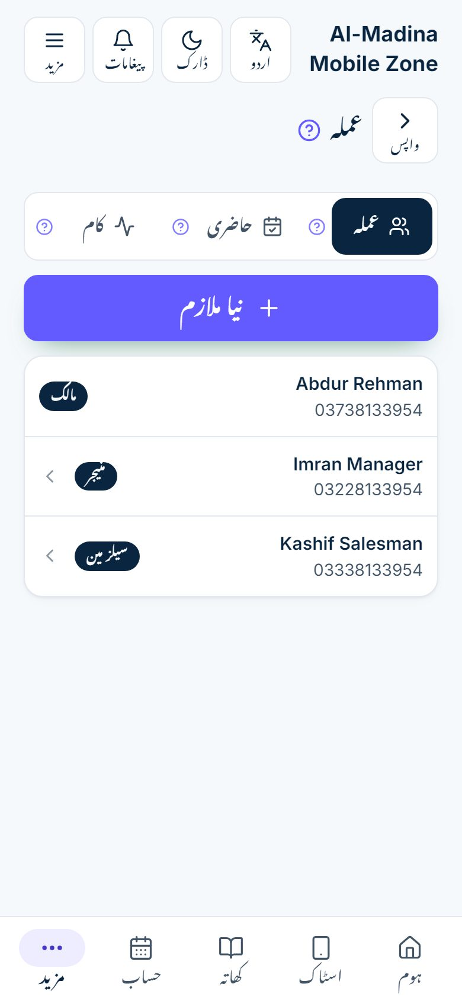
تصویر 49: عملہ: ہر ایک کے عہدے کے ساتھ فہرست
عملے کی اسکرین پر تین ٹیبیں ہیں: عملہ، حاضری اور کارکردگی۔
ملازم شامل کریں
مثال: ایک نیا سیلز مین، کاشف محمود۔
نیا ملازم دبائیں۔
نام: Kashif Mehmood۔ یہ نام اس کے بنائے بلوں پر چھپتا ہے۔
موبائل نمبر: 3005550707۔ یہ اس کا لاگ ان ہے۔
پاس ورڈ: کم از کم 6 حروف۔
فوری پن (4-6 ہندسے)، مثلاً 4321، اس کے اپنے فون پر جلدی لاگ ان کے لیے۔
عہدہ: سیلز مین۔
محفوظ کریں دبائیں۔
بعد میں عہدہ بدلنے، نیا پاس ورڈ رکھنے، یا اسے بند کریں / فعال کریں کرنے کے لیے ملازم کو دبائیں۔ بند کیا گیا بندہ لاگ ان نہیں کر سکتا، لیکن اس کا کیا ہوا سب کچھ ریکارڈ میں رہتا ہے۔
چار عہدے
چار عہدے ہیں: مالک، منیجر، سیلز مین اور ٹیکنیشن۔ ہر دکان کا ایک مالک ہوتا ہے۔
بندہ کیا کر سکتا ہے
مالک
منیجر
سیلز مین
ٹیکنیشن
بیچنا، اسٹاک ڈالنا، واپسی لینا
ہاں
ہاں
ہاں
نہیں
پیسے ملے / دیے، لین دین
ہاں
ہاں
ہاں
نہیں
خرید قیمت اور منافع دیکھنا
ہاں
ہاں
نہیں
نہیں
خرید قیمت سے کم بیچنا
ہاں
ہاں
نہیں
نہیں
بل اور ادائیگیاں منسوخ کرنا
ہاں
ہاں
نہیں
نہیں
خرچے لکھنا، دن بند کرنا
ہاں
ہاں
نہیں
نہیں
منافع اور رپورٹس، دکان کا آڈٹ
ہاں
ہاں
نہیں
نہیں
آڈٹ میں سیکیورٹی فہرست
ہاں
نہیں
نہیں
نہیں
مرمت کے لیے فون لینا
ہاں
ہاں
ہاں
نہیں
مرمت پر کام کرنا
ہاں
ہاں
نہیں
ہاں
برانڈ اور ماڈل بدلنا
ہاں
ہاں
نہیں
نہیں
عملہ، دکان کی سیٹنگز، سافٹ ویئر فیس
ہاں
نہیں
نہیں
نہیں
رکی ہوئی شناخت کی جانچ کو آگے بڑھانا
ہاں
نہیں
نہیں
نہیں
سیلز مین اور ٹیکنیشن پھر بھی اپنے دن کا کام دیکھتے ہیں۔
جس سیلز مین کو منافع نہیں دیکھنا چاہیے اسے کون سا عہدہ دیں؟
سیلز مین چنیں۔ سیلز مین بیچ سکتا ہے، اسٹاک ڈال سکتا ہے، واپسی لے سکتا ہے اور پیسے لے دے سکتا ہے، لیکن اسے کبھی خرید قیمتیں، منافع، رپورٹس یا دکان کا آڈٹ نظر نہیں آتا۔ جب وہ خرید قیمت سے کم بیچنے کی کوشش کرے، ایپ اسے روک دیتی ہے اور مالک یا منیجر کو بلانے کا کہتی ہے۔
منیجر صرف اس بندے کے لیے چنیں جس پر آپ پورے کاروبار کا بھروسہ کرتے ہیں، مثلاً بھائی یا پارٹنر جو آپ کے نہ ہونے پر دکان چلاتا ہے۔
حاضری
جب عملے کی حاضری ماڈیول چالو ہو، تو ہوم پر سب کے لیے حاضری کارڈ نظر آتا ہے۔
آتے وقت حاضری لگائیں دبائیں۔
جاتے وقت چھٹی کریں دبائیں۔
پھر کارڈ پر کچھ ایسا نظر آتا ہے: "آیا 9:05 AM · گیا 7:10 PM · 10.1 گھنٹے"۔
دن میں ایک حاضری۔ مالک عملہ ← حاضری کھولتا ہے، مدت چنتا ہے، اور ہر بندے کے لیے دیکھتا ہے: آج کی حالت، کام کے گھنٹے، اور حاضر، آدھا دن، چھٹی، غیر حاضر اور ریکارڈ نہیں کی گنتی۔ کسی دن کو ہاتھ سے لکھنے کے لیے بندے کو دبائیں، مثلاً کل = چھٹی، نوٹ "عید"۔ تنخواہ اور ایڈوانس خرچے کے ذریعے دیے جاتے ہیں (قسمیں تنخواہ اور عملے کا ایڈوانس)۔
کارکردگی: ہر بندے نے کیا کیا
عملہ ← کارکردگی چنی ہوئی مدت کے لیے ہر بندے کی فروخت (تعداد · روپے)، وصولی (روپے)، خریداری (تعداد · روپے)، خرچے (روپے)، مرمت اور کام کی تعداد دکھاتی ہے، اس کے آخری لاگ ان کے ساتھ۔ پورا ریکارڈ دیکھنے کے لیے بندے کو دبائیں: ہر بل، ادائیگی، خریداری، خرچہ، مرمت، منسوخی اور سیٹنگز کی تبدیلی، وقت، نمبر اور رقم کے ساتھ۔ یہ ایپ کے ہر تبدیلی کے ریکارڈ سے آتا ہے، اس لیے کچھ بھی چھوٹ نہیں سکتا۔
23. سیٹنگز، کاروبار کی پروفائل اور WhatsApp پیغامات
دکان کی سیٹنگز
صرف مالک: مزید ← دکان کی سیٹنگز۔ اسکرین کارڈوں سے بنی ہے، ہر موضوع کا ایک کارڈ۔
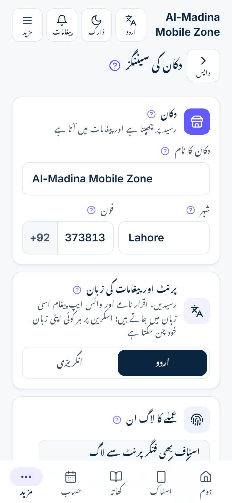
تصویر 50: دکان کی سیٹنگز
دکان: دکان کا نام، شہر اور فون۔ رسیدوں پر چھپتا ہے اور پیغامات میں استعمال ہوتا ہے۔
پرنٹ اور پیغامات کی زبان: اردو یا انگریزی۔ رسیدیں، اقرار نامے اور WhatsApp پیغامات اسی زبان میں جاتے ہیں۔ ہر بندہ پھر بھی اپنی اسکرین کی زبان خود چن سکتا ہے۔
اسٹاف لاگ ان: پن کے بجائے اسٹاف بھی فنگر پرنٹ سے لاگ اِن کر سکے۔
سیلز ٹیکس: سیلز ٹیکس لگائیں چالو کریں، پھر ٹیکس کی شرح %، قیمت میں ٹیکس شامل، NTN اور STRN رکھیں۔ یہ شروع میں بند ہوتا ہے اور ضرورت پر بل پر نشان لگایا جاتا ہے۔
رسید: بل نمبر کا سابقہ (ایک مثال نظر آتی ہے، جیسے INV-000123)، رسید کی آخری لائن اور رسید کی آخری لائن (اردو)، مثلاً "7 دن کے بعد واپسی نہیں"۔
اسٹیکر پر قیمتِ خرید کا کوڈ: 10 حروف کا کوڈ والا لفظ تاکہ قیمت کے اسٹیکر پر خرید قیمت صرف آپ پڑھ سکیں۔
قیمت کے اصول: مانگی قیمت سے کم کون بیچ سکتا ہے اور اسے کون بدل سکتا ہے۔
اسٹاک آڈٹ کی حدیں: اسٹاک کی عمر کے خانے کہاں ختم ہوتے ہیں، کیا مہنگا گنا جائے اور کیا کم مارجن۔
آئٹم کی ترتیبات: اسٹاک کی قیمت کیسے لگے (اوسط قیمت یا FIFO)، اسٹاک صفر ہونے کے بعد بیچنے کی اجازت ہے یا نہیں، اور ایک درجن، ڈبے یا کارٹن میں کتنے پیس ہیں۔
ڈیوائس کی ترتیبات: کیا پرانے موبائلوں کو بھی لاک چیک چاہیے، اور پرانے یونٹس کے لیے آپ کے استعمال کیے گریڈ۔
بارکوڈ کی ترتیبات: نئے اسٹاک کے بارکوڈ کی قسم۔ پرانے لیبل چلتے رہتے ہیں۔
جب آپ کچھ بھی بدلتے ہیں، نیچے والی ٹیبوں کے اوپر "ابھی محفوظ نہیں ہوا" کے ساتھ محفوظ کریں کی پٹی آتی ہے۔ اسے دبائیں اور محفوظ ہو گیا تبدیلی کی تصدیق کرتا ہے۔
کاروبار کی پروفائل: آپ کے بلوں پر لوگو اور تفصیل
انہی دکان کی سیٹنگز میں لوگو اور کاروبار کی تفصیل والے کارڈ طے کرتے ہیں کہ آپ کے چھپے بل کیسے دکھیں۔
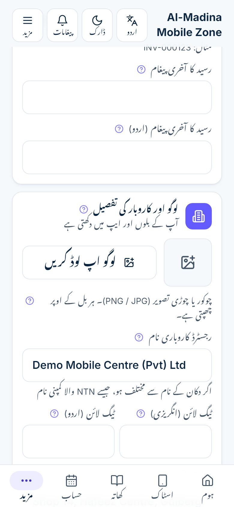
تصویر 51: لوگو اور کاروبار کی تفصیل
لوگو اپ لوڈ کریں دبائیں اور ایک چوکور یا چوڑی تصویر (PNG یا JPG) چنیں۔ یہ ہر بل کے اوپر چھپتی ہے۔ بعد میں ضرورت ہو تو لوگو بدلیں یا لوگو ہٹائیں۔
اگر دکان کے نام سے مختلف ہو تو رجسٹرڈ کاروباری نام بھریں (مثلاً آپ کے NTN پر کمپنی کا نام)، ٹیگ لائن (انگریزی) اور ٹیگ لائن (اردو)، پورا پتہ، واٹس ایپ نمبر، ای میل، ویب سائٹ / پیج، کاروبار کی قسم، صوبہ اور اوقات کار (مثلاً "صبح 11 – رات 10، جمعہ بند")۔
مالک کی تفصیل: مالک کا نام اور شناختی کارڈ۔
ٹیکس رجسٹریشن (FBR): NTN، STRN اور FBR POS رجسٹریشن ID (صرف اگر آپ FBR کی پوائنٹ آف سیل اسکیم میں ہیں)۔ بھرے ہوں تو بلوں پر چھپتے ہیں۔
کرنسی: پیسہ ہمیشہ پاکستانی روپیہ ہے، لیکن آپ چنتے ہیں کہ یہ کیسے لکھا جائے: علامت (Rs.، Rs، PKR وغیرہ)، علامت کہاں ہو (پہلے (Rs. 500) یا بعد میں (500 PKR))، اور صرف روپے یا ہمیشہ پیسے (.00)۔ ایسا دکھے گا نتیجہ دکھاتا ہے۔
چھپا ہوا بل: نشان لگائیں کہ فروخت کے بلوں اور مرمت کی پرچیوں پر کیا آئے: لوگو، ٹیگ لائن، NTN / STRN / FBR POS ID، مالک کا نام، بینک / والٹ کی تفصیل (بقایا ادا کرنے کے لیے)، شرائط (واپسی / وارنٹی) اور سوشل پیج۔ شرائط (انگریزی) اور شرائط (اردو) اور اپنے بینک اور Easypaisa / JazzCash کی تفصیل یہیں لکھیں۔ بل آن لائن دیکھنے کا QR کوڈ (شروع سے آن) باب 8 والا QR چھاپتا ہے۔
محفوظ کرنے والی پٹی پر محفوظ کریں دبائیں۔
WhatsApp پیغامات اور اطلاعات
مزید ← اطلاعات طے کرتا ہے کہ ایپ کیا بھیجے اور کس کو۔
تصویر 52: اطلاعات اور رات کی رپورٹ
مالک کو: مالک کا واٹس ایپ نمبر اور مالک کا ای میل۔ ہر سیل پر اور/یا اسٹاک آنے پر پر نشان لگائیں، WhatsApp یا ای میل سے۔
مالک کو رات کی رپورٹ: ہر رات دن کا حساب (باب 16)۔
ادھار کی یاد دہانی: کھاتہ کچھ دن رکا رہنے کے بعد گاہکوں کو خود یاد دلائیں۔ قسط اور لین دین کی یاد دہانیاں بھی اسی سوئچ پر چلتی ہیں۔
اسکرین بتاتی ہے کہ پیغامات کیسے جاتے ہیں:
"WhatsApp پیغامات سرور سے خود بخود جاتے ہیں۔" کا مطلب ہے آپ کے سافٹ ویئر فراہم کنندہ نے WhatsApp Business سروس لگا دی ہے؛ پیغامات خود جاتے ہیں۔
ورنہ پیغامات WhatsApp میں کھلتے ہیں تاکہ آپ ایک دبانے سے بھیج دیں۔ وہ پیغامات (ہر اسکرین کے اوپر گھنٹی) میں انتظار کرتے ہیں جہاں آپ ہر ایک کو کھول کر بھیج دیا کر سکتے ہیں۔
"ای میل سرور سے جاتی ہے (SMTP لگا ہوا ہے)۔" کا مطلب ہے ای میلز خود جاتی ہیں۔ اگر ای میل نہیں لگی تو اپنے سافٹ ویئر فراہم کنندہ سے کہیں؛ تب تک ای میل پیغامات فہرست میں انتظار کرتے ہیں۔
گاہکوں کو جانے والے پیغامات (رسیدیں، یاد دہانیاں) پرنٹ اور پیغامات کی زبان والی دکان کی زبان میں جاتے ہیں۔
زبان، تھیم اور انداز
زبان: کسی بھی اسکرین کے اوپر زبان والا بٹن دبائیں اور اردو، Roman Urdu یا English چنیں۔ ایپ ایک وقت میں ایک ہی زبان دکھاتی ہے؛ اردو دائیں سے بائیں پڑھی جاتی ہے۔ ہندسے ہمیشہ 0–9 ہوتے ہیں۔
ڈارک / لائٹ: اوپر ڈارک (یا لائٹ) دبائیں۔ مزید ← تھیم میں فون کے مطابق بھی ہے۔
ہر اسکرین پر چھوٹے ? بٹن ہیں۔ مثال کے ساتھ مختصر وضاحت کے لیے ایک دبائیں؛ ہر وضاحت کا اپنا English / اردو / Roman سوئچ ہے۔
FBR ڈیجیٹل انوائسنگ (سیلز ٹیکس رجسٹرڈ دکانوں کے لیے)
اگر FBR آپ کے کاروبار کو انوائس رپورٹ کرنے کا کہے (سیلز ٹیکس رجسٹرڈ، FBR نے بتایا ہو) تو ایپ ہر سیل کا بل خود FBR کو بھیج کر بل پر FBR نمبر اور اس کا QR کوڈ چھاپ سکتی ہے۔
یقین کر لیں کہ ٹیکس رجسٹریشن میں آپ کا NTN اور STRN لکھا ہے۔
IRIS (FBR کا پورٹل) سے ڈیجیٹل انوائسنگ سکیورٹی ٹوکن لیں (پہلے سینڈ باکس / ٹیسٹ والا)۔
مزید ← دکان کی سیٹنگز ← FBR ڈیجیٹل انوائسنگ کھولیں، ٹوکن لگائیں، سینڈ باکس (ٹیسٹ) چنیں اور محفوظ کریں دبائیں۔
FBR سے ٹیسٹ کریں دبائیں۔ جب لکھا آئے کہ FBR نے ٹیسٹ بل مان لیا، تو بل FBR کو بھیجیں آن کریں اور محفوظ کریں۔
چند بل ٹھیک جانے کے بعد پروڈکشن ٹوکن کے ساتھ پروڈکشن (اصل) پر جائیں۔
اس کے بعد ہر سیل فوراً FBR کو جاتی ہے۔ انٹرنیٹ یا FBR بند ہو تو بل انتظار کرتا ہے اور بعد میں خود چلا جاتا ہے۔ بل کے صفحے پر FBR نمبر، باقی، یا FBR نے یہ بل رد کیا وجہ کے ساتھ اور دوبارہ بھیجیں کا بٹن آتا ہے۔
24. بلک ایکسل سے ڈیٹا لانا اور نکالنا
جب کوئی دکان رجسٹر یا کسی اور سافٹ ویئر سے آتی ہے، تو کوئی بھی 300 فون ایک ایک کر کے لکھنا نہیں چاہتا۔ بلک ایکسل سے آپ ایک Excel شیٹ بھر کر سارے رو ایک ساتھ لا سکتے ہیں۔ صرف مالک اور منیجر: مزید ← بلک ایکسل۔
تصویر 53: بلک ایکسل: چنیں کیا لانا ہے
قدم بہ قدم درآمد
مثال: آپ کی دکان میں 120 فون ہیں اور آپ کے پرانے ادھار رجسٹر میں 45 گاہک ہیں۔
چنیں کہ کیا لا رہے ہیں: فون (اسٹاک)، لوگ، ایکسیسریز، فروخت یا خرچے۔ پہلے لوگ، پھر فون (اسٹاک) سے شروع کریں۔
شیٹ ڈاؤن لوڈ کریں دبائیں۔ یہ Excel میں تین شیٹوں کے ساتھ کھلتی ہے: Data (صرف یہی بھرنی ہے)، Help (ہر کالم کی وضاحت، ضروری ہے یا نہیں) اور Lists (ڈراپ ڈاؤن کے لیے آپ کے برانڈ، ماڈل، رنگ، سپلائر اور قسمیں)۔
Data کی پہلی تین قطاریں پیلے رنگ کی نمونہ قطاریں ہیں، مثلاً Rs. 35,000 کا Vivo Y21 128 GB۔ اپنی قطاریں ان کے نیچے یا ان کے اوپر لکھیں۔ نمونے پہچان کر چھوڑ دیے جاتے ہیں، اس لیے نمونے سے کبھی کچھ نہیں بنتا۔
اسے بھریں۔ تاریخیں dd-mm-yyyy میں، پیسے سادہ روپوں میں (35,000 ٹھیک ہے)، اور حالت، PTA یا قسم جیسے الفاظ ڈراپ ڈاؤن سے۔ لکھے ہوئے الفاظ بھی سمجھے جاتے ہیں: New، Box pack، Used، PTA، Non-PTA، JV، Customer، Supplier، They owe us۔ CSV فائل بھی چلتی ہے۔
فائل اپ لوڈ کریں۔ ہر قطار پر نشان لگ کر واپس آتا ہے: ٹھیک، نوٹ (کچھ نیا بنے گا، جیسے نیا برانڈ یا نیا بندہ)، غلطی (سادہ الفاظ میں وجہ کے ساتھ، جیسے "IMEI کے 15 ہندسے ہونے چاہییں" یا "مانگی قیمت لاگت سے کم ہے") یا چھوڑی (نمونہ یا خالی لائن)۔ ابھی کچھ محفوظ نہیں ہوا۔
Excel میں غلطیاں ٹھیک کر کے دوبارہ اپ لوڈ کریں، یا غلط قطاریں چھوڑ دیں، باقی درآمد کریں پر نشان لگائیں۔
درآمد کریں دبائیں۔ یا تو ہر ٹھیک قطار محفوظ ہوتی ہے، یا کچھ بھی نہیں۔ نتیجہ بتاتا ہے کہ کیا بنا (فون، خریداری کے بل، لوگ، ابتدائی بیلنس وغیرہ)۔
ہر شیٹ کیا کرتی ہے
فون (اسٹاک): ہر فون کی ایک قطار۔ اپنے پرانے اسٹاک کے لیے سپلائر خالی چھوڑیں۔ سپلائر کا فون نمبر دیں تو قطاریں ہر سپلائر اور تاریخ کا ایک خریداری بل بن جاتی ہیں، ادا شدہ رقم اس میں لگتی ہے اور باقی سپلائر کے کھاتے میں جاتا ہے۔ Non-PTA اور JV فونوں کے لیے SIM ٹائم ضروری ہے۔
لوگ: نام، فون اور قسم کافی ہیں۔ کون دے گا کے ساتھ ابتدائی بیلنس کھاتے کا شروع لکھ دیتا ہے۔ جو فون نمبر پہلے سے آپ کے کھاتے میں ہے وہ چھوڑ دیا جاتا ہے۔
ایکسیسریز: نام، ہاتھ میں تعداد، فی پیس لاگت اور بیچنے کی قیمت۔ اگر کوڈ (SKU) خالی چھوڑیں تو خود بن جاتا ہے۔
فروخت: صرف وہ فون جو ایپ میں پہلے سے اسٹاک میں ہیں، IMEI سے۔ اگر پیسے کھاتے میں رہیں تو گاہک کا فون نمبر ضروری ہے۔ لاگت سے کم بیچنا رد ہو جاتا ہے جب تک مالک یا منیجر اجازت نہ دے۔
خرچے: تاریخ، قسم، رقم اور اکاؤنٹ (نقد، جب تک آپ کسی بینک یا والٹ کا نام نہ لکھیں)۔
ہر درآمد شدہ قطار انہی مراحل سے گزرتی ہے جن سے کاؤنٹر پر گزرتی ہے، اس لیے کھاتہ، لیجر اور فون کی ہسٹری پوری ہوتی ہے، بالکل ایسے جیسے آپ نے ہر ایک خود لکھا ہو۔
نکالنا: میرا ڈیٹا ڈاؤن لوڈ
اسی صفحے پر اپنا ڈیٹا ڈاؤن لوڈ کریں آپ کے موجودہ فون، لوگ، ایکسیسریز، فروخت یا خرچے بالکل اسی ترتیب میں دیتا ہے۔ آپ Excel میں چیزیں ٹھیک کر کے فائل واپس لا سکتے ہیں۔ پچھلی درآمدات نیچے فہرست میں ہوتی ہیں، کس نے کیں اور کیا بنا۔
25. سافٹ ویئر فیس، بیک اپ اور PC ورژن
آپ کا پلان اور فیس کی ادائیگی
صرف مالک: مزید ← سافٹ ویئر فیس۔
آپ کا پلان، ماہانہ فیس اور کب تک ادا۔
ان میں سے کسی میں ادا کریں: سافٹ ویئر فراہم کنندہ کے اکاؤنٹ (Easypaisa، JazzCash، SadaPay، بینک)، ہر ایک کے ساتھ نمبر کے لیے کاپی بٹن۔
ادائیگی کیسے کریں:
اپنی Easypaisa، JazzCash یا بینک ایپ سے فیس بھیجیں۔
سافٹ ویئر فیس میں میں نے ادا کر دی بھریں: رقم (روپے)، مہینے، کس ذریعے ادا کیا، ٹرانزیکشن ID / حوالہ، اور اسکرین شاٹ لگائیں۔
بھیجیں دبائیں۔
آپ کی ادائیگیاں ہر ادائیگی کو چیک ہو رہی ہے، وصول ہو گئی یا قبول نہیں ہوئی (وجہ کے ساتھ) دکھاتا ہے۔ وصول ہوتے ہی آپ کی کب تک ادا والی تاریخ آگے بڑھ جاتی ہے، آپ کو "شکریہ! آپ کا پلان تجدید ہو گیا" نظر آتا ہے، اور آپ رسید پرنٹ کر سکتے ہیں۔
تجدیدی کوڈ: کبھی کبھی، خاص طور پر بغیر انٹرنیٹ والے PC ورژن کے لیے، فراہم کنندہ WhatsApp پر ایک کوڈ بھیجتا ہے۔ اسے تجدیدی کوڈ میں ڈالیں اور کوڈ سے تجدید کریں دبائیں۔ یہ بغیر انٹرنیٹ کے چلتا ہے، لیکن صرف ایک بار۔
فیس جو ابھی ادا کرنی ہے
کبھی سافٹ ویئر فراہم کرنے والا آپ کے پیسے دینے سے پہلے پیکج بڑھا دیتا ہے (آپ نے فون پر بات کی)۔ تب سافٹ ویئر فیس میں فیس جو ابھی ادا کرنی ہے نظر آتا ہے: ہر لائن میں اس کا نمبر (مثلاً FEE-0001)، مدت، مہینے اور فیس، اور ادا نہیں ہوئی، کچھ ادا ہوئی یا ادا ہو گئی۔ اس کے نیچے ابھی ادا کرنی ہے میں کل رقم سرخ رنگ میں ہوتی ہے۔ اگر ادائیگی کا دن طے ہوا ہو تو ادائیگی کی تاریخ نظر آتی ہے، اور دن گزر جائے تو ادائیگی کی تاریخ گزر گئی۔
فیس کا بل بل کھولتا ہے جسے پرنٹ کریں یا رکھ لیں: ہر مدت، فیس، آپ نے کتنا دیا، کتنا باقی ہے، اور کہاں ادا کرنا ہے۔
جب آپ پیسے بھیجتے ہیں تو پہلے یہ باقی فیس پوری ہوتی ہے، پرانی پہلے؛ بچی رقم سے ادائیگی اس تاریخ تک آگے بڑھتی ہے۔ میں نے ادا کر دی میں رقم پہلے سے باقی فیس سمیت لکھی ہوتی ہے۔
آپ کی ادائیگیاں میں ادائیگی کے نیچے پچھلی فیس میں گیا اور وہ حصہ لکھا آتا ہے۔ رسید پر بھی۔
یاد دہانی والی کھڑکی میں بھی "پچھلی فیس ابھی باقی ہے" نظر آتا ہے۔
مثال: فراہم کرنے والے نے 9 تاریخ کو 2 مہینے Rs. 3,000 میں دیے، 15 تک ادائیگی۔ آپ Rs. 1,000 بھیجتے ہیں: لائن کچھ ادا ہوئی، Rs. 2,000 باقی۔ پھر Rs. 3,500 بھیجتے ہیں: Rs. 2,000 پرانی فیس پوری کرتے ہیں (ادا ہو گئی) اور Rs. 1,500 سے ایک مہینہ اور بڑھتا ہے۔
فیس کی یاد دہانی
پلان ختم ہونے سے پہلے ایپ آپ کو ادب سے یاد دلاتی ہے:
کب
آپ کو کیا نظر آتا ہے
7 دن باقی
اوپر پیلی پٹی
3 دن باقی
نارنجی پٹی، اور دن میں ایک بار یاد دہانی کی کھڑکی
1 دن باقی اور آخری دن
سرخ پٹی، اور یاد دہانی کی کھڑکی زیادہ بار
پلان ختم، مہلت کے دن (عموماً 7)
سرخ پٹی: سب کچھ ابھی بھی چلتا ہے
مہلت کے دنوں کے بعد
صرف دیکھنے والی حالت (نیچے دیکھیں)
ادائیگی بھیج دی، ابھی چیک نہیں ہوئی
پرسکون نیلی پٹی: "ادائیگی موصول، تصدیق باقی ہے۔"
یاد دہانی کی کھڑکی میں پلان، ختم ہونے کی تاریخ، فیس، کہاں ادا کریں (کاپی بٹنوں کے ساتھ) اور تین بٹن ہوتے ہیں: ابھی فیس ادا کریں، بعد میں یاد دلائیں (4 گھنٹے میں، کل یا 3 دن میں) اور بند کریں۔ یہ واحد اسکرین ہے جو انگریزی، اردو اور رومن اردو اکٹھے دکھاتی ہے۔ یہ کبھی فروخت، ادائیگی یا کسی فارم کے بیچ میں نہیں کھلتی۔ عملے کو صرف ایک چھوٹی لائن نظر آتی ہے کہ مالک کو بتا دیں۔
اگر فیس ادا نہ ہو تو کیا ہوتا ہے
کبھی کچھ ختم نہیں کیا جاتا۔ مہلت کے دنوں کے بعد ایپ صرف دیکھنے والی حالت میں چلی جاتی ہے:
آپ پھر بھی لاگ ان کر کے اپنا سارا ڈیٹا دیکھ سکتے ہیں۔
آپ پھر بھی ہر رپورٹ اور فہرست ڈاؤن لوڈ کر سکتے ہیں، اور بیک اپ لے سکتے ہیں۔
آپ پھر بھی فیس ادا کر سکتے ہیں۔
نئی فروخت اور خریداری فیس ادا ہونے تک رکی رہتی ہیں۔
جیسے ہی ادائیگی منظور ہو (یا تجدیدی کوڈ ڈالا جائے)، سب کچھ بالکل ویسا ہی دوبارہ کھل جاتا ہے۔
میرے ڈیٹا کا بیک اپ
سافٹ ویئر فیس میں (اور یاد دہانی کی کھڑکی میں) میرا ڈیٹا بیک اپ کریں دبائیں۔ یہ ہر فہرست (اسٹاک، کھاتہ، فروخت، خریداری، خرچے، ایکسیسریز اور مزید) Excel فائلوں کی شکل میں ایک zip میں ڈاؤن لوڈ کر دیتا ہے۔ یہ کسی بھی وقت چلتا ہے، پلان ختم ہونے کے بعد بھی۔
بغیر انٹرنیٹ کے کام
اگر بازار کا انٹرنیٹ چلا جائے تو بیچتے رہیں۔ بغیر انٹرنیٹ کے کی گئی فروخت، خریداری، ادائیگی یا خرچہ فون پر محفوظ ہو جاتا ہے، اور اوپر والے حصے کے نیچے کی پٹی کہتی ہے "اس فون پر محفوظ ہے۔ انٹرنیٹ واپس آنے پر بھیج دیا جائے گا۔" کنکشن واپس آنے پر یہ خود، ترتیب سے، ہر ایک صرف ایک بار بھیج دیے جاتے ہیں۔ بل نمبر سرور پر پہنچنے پر ملتے ہیں۔ رپورٹس، ڈاؤن لوڈ اور WhatsApp بھیجنے کے لیے انٹرنیٹ چاہیے۔
PC ورژن (انٹرنیٹ کی ضرورت نہیں)
جن دکانوں کا انٹرنیٹ بھروسے کا نہیں وہ یہی سافٹ ویئر Windows کمپیوٹر پر چلا سکتی ہیں:
MobileShop-Setup.exe انسٹال کریں (آپ کا سافٹ ویئر فراہم کنندہ آپ کو دیتا ہے)۔
ڈیسک ٹاپ سے موبائل شاپ کھولیں۔ گھڑی کے پاس ایک چھوٹا آئیکن آتا ہے، اور ایپ براؤزر میں کھل جاتی ہے۔
ایک بار دکان کا اکاؤنٹ بنائیں، پھر معمول کے مطابق کام کریں۔
سب کچھ اسی کمپیوٹر پر محفوظ ہوتا ہے۔ چھوٹے آئیکن کے مینو میں Backup now (تاریخ والی کاپی، جو ڈیسک ٹاپ پر بھی رکھی جاتی ہے)، Open data folder اور Quit ہیں۔ دکان کے Wi-Fi پر فون بھی اسے کھول سکتے ہیں؛ اس کے لیے اپنے سافٹ ویئر فراہم کنندہ سے کہیں۔ اپ ڈیٹ کے لیے نیا Setup چلائیں؛ آپ کا ڈیٹا رہتا ہے۔
26. عام سوالات اور مسائل کا حل
گاہک کہتا ہے اس کا بقایا غلط ہے۔ ادھار کھاتے سے اس کا صفحہ کھولیں اور اس کے ساتھ کھاتے کی ہسٹری دیکھیں۔ ہر لائن پر تاریخ، بل نمبر اور چلتا بقایا ہوتا ہے۔ WhatsApp پر PDF اسٹیٹمنٹ بھیج دیں۔
میں نے ایک ادائیگی دو بار لکھ دی۔ ان میں سے ایک کھولیں اور وجہ لکھ کر منسوخ کریں۔ بقایا الٹے اندراج سے ٹھیک ہو جاتا ہے، اور منسوخ والا کٹا ہوا نظر آتا رہتا ہے۔
ایک دوست نے مجھ سے پیسے ادھار لیے۔ کیا میں پیسے ملے / پیسے دیے استعمال کروں؟ نہیں۔ اس کے صفحے پر رقم دی (لین دین) اور رقم لی (لین دین) استعمال کریں (باب 17)۔ پیسے ملے اور پیسے دیے بلوں کے لیے ہیں۔
ہاتھ میں بچے منفی ہے لیکن آج میں نے اچھا بیچا۔ شاید آپ نے اسٹاک خریدا یا کسی واپسی پر پیسے لوٹائے۔ گیا کے نیچے والے چپس دیکھیں۔ اسٹاک پر خرچ پیسے اب آپ کی شیلف پر فون ہیں۔
میرے گلے کی گنتی گلے میں ہونا چاہیے سے نہیں ملتی۔ دیکھیں کہیں کوئی آن لائن ادائیگی نقد تو نہیں لکھی گئی، یا کوئی خرچہ گلے سے دیا گیا مگر لکھا نہیں گیا۔ Easypaisa یا بینک سے ادائیگیاں ہمیشہ آن لائن ہونی چاہییں۔
اس مہینے منافع میں نقصان دکھ رہا ہے۔ منافع کی رپورٹ کھولیں۔ گاہکوں نے واپس کیا اور خرچوں کی لائنیں دیکھیں۔ کوئی بڑی واپسی یا اس مہینے دیا گیا کرایہ مہینے کو نقصان میں بدل سکتا ہے۔ دکان کے آڈٹ کی مالیات ٹیب یہی چیز پچھلی مدت کے موازنے کے ساتھ دکھاتی ہے۔
میرے سیلز مین کو منافع نظر نہیں آنا چاہیے۔ اسے سیلز مین کا عہدہ دیں (مزید ← عملہ ← اس کا نام ← عہدہ)۔ وہ بیچ سکتا ہے اور پیسے لے سکتا ہے لیکن اسے کبھی خرید قیمتیں، منافع یا رپورٹس نظر نہیں آتیں۔
مجھے خرچے، رپورٹس یا دکان کا آڈٹ نہیں مل رہا۔ یہ مالک اور منیجر کے لیے ہیں۔ اگر آپ مالک ہیں اور پھر بھی کوئی چیز نظر نہیں آتی، تو ہو سکتا ہے وہ ماڈیول آپ کے پلان میں نہ ہو؛ اپنے سافٹ ویئر فراہم کنندہ سے پوچھیں۔
WhatsApp یاد دہانی خود نہیں گئی۔ خود بخود بھیجنے کے لیے آپ کے سافٹ ویئر فراہم کنندہ کی طرف سے WhatsApp Business سروس لگی ہونی چاہیے۔ اس کے بغیر پیغامات (گھنٹی) کھولیں اور ہر پیغام کو دبا کر WhatsApp سے بھیجیں۔
رات کی رپورٹ نہیں آئی۔ مزید ← اطلاعات چیک کریں: مالک کا نمبر لکھا ہو، ہر رات دن کا حساب بھیجیں پر نشان لگا ہو، اور وقت رکھا ہو۔ آزمانے کے لیے آج کا حساب ابھی بھیجیں دبائیں۔
قسط والے گاہک نے آدھی رقم دی۔ پلان کھولیں، قسط لیں دبائیں اور رقم اتنی کر دیں جتنی اس نے دی۔ باقی آنے تک قسط پر جزوی لکھا رہتا ہے۔
بلک ایکسل اپ لوڈ میں غلطیاں آ رہی ہیں۔ وجہ پڑھنے کے لیے سرخ قطار دبائیں ("IMEI کے 15 ہندسے ہونے چاہییں"، "بتائیں کس نے دینا ہے" وغیرہ)۔ Excel میں ٹھیک کر کے دوبارہ اپ لوڈ کریں، یا غلط قطاریں چھوڑ دیں، باقی درآمد کریں پر نشان لگائیں۔ جب تک آپ درآمد کریں نہ دبائیں کچھ محفوظ نہیں ہوتا۔
میرا لوگو بل پر نظر نہیں آتا۔ دکان کی سیٹنگز ← چھپا ہوا بل دیکھیں: لوگو پر نشان لگا ہونا چاہیے۔ صاف PNG یا JPG استعمال کریں، اور محفوظ کرنے والی پٹی پر محفوظ کریں دبائیں۔
فیس کی یاد دہانی بار بار آتی ہے۔ فیس ادا کریں اور ٹرانزیکشن ID کے ساتھ میں نے ادا کر دی دبائیں۔ پٹی نیلی ہو جاتی ہے ("ادائیگی موصول، تصدیق باقی ہے") اور یاد دہانیاں رک جاتی ہیں۔
میرا پلان ختم ہو گیا۔ کیا میرا ڈیٹا چلا گیا؟ نہیں۔ کبھی کچھ ختم نہیں کیا جاتا۔ آپ سب کچھ دیکھ سکتے ہیں، ڈاؤن لوڈ کر سکتے ہیں اور بیک اپ لے سکتے ہیں۔ فیس وصول ہوتے ہی نئی فروخت دوبارہ کھل جاتی ہے۔
میں اپنا پاس ورڈ یا پن بھول گیا۔ پن: پن بھول گئے؟ پاس ورڈ استعمال کریں دبائیں۔ پاس ورڈ: عملہ دکان کے مالک سے کہے (مزید ← عملہ ← نام ← نیا پاس ورڈ)۔ مالک سافٹ ویئر فراہم کنندہ سے کہے۔
Android ایپ میں پرنٹ یا ڈاؤن لوڈ کرنے سے Chrome کھلتا ہے۔ یہ عام بات ہے: Chrome پرنٹ کی اسکرین دکھاتا ہے یا فائل محفوظ کرتا ہے۔ اگر لکھا آئے کہ لنک کی مدت ختم ہو گئی، تو واپس جا کر پرنٹ یا ڈاؤن لوڈ دوبارہ دبائیں۔
فروخت کے دوران انٹرنیٹ چلا گیا۔ کام جاری رکھیں۔ فروخت فون پر محفوظ ہو جاتی ہے اور انٹرنیٹ واپس آنے پر بھیج دی جاتی ہے۔ اگر کوئی نہ بھیجی جا سکے (مثلاً وہی فون کسی اور ڈیوائس سے بک گیا)، تو وہ وجہ کے ساتھ سرخ رنگ میں نظر آتی ہے؛ اسے ٹھیک کریں اور دوبارہ کوشش دبائیں۔
الفاظ کی فہرست
لفظ
مطلب
Udhaar
ادھار: چیز ابھی دی اور پیسے بعد میں، یا وہ پیسے جو آپ نے ابھی کسی کو دینے ہیں۔
Khata
بندے کا حساب والا صفحہ: جو کچھ بیچا، خریدا، ادا کیا اور وصول ہوا، بقایا کے ساتھ۔
Len-den
بغیر بل کے کسی بندے کو دیے یا اس سے لیے پیسے، اس کے کھاتے میں رکھے جاتے ہیں۔
Qist
قسطوں پر بکے فون کی ایک ماہانہ قسط۔
Zamin
ضامن جو قسط والے گاہک کی ضمانت دیتا ہے۔
Amanat
دوسری دکان کو دکھانے یا بیچنے کے لیے بھروسے پر دیا گیا فون؛ بکنے یا واپس آنے تک آپ کا رہتا ہے۔
Galla
کاؤنٹر پر پیسوں کا دراز۔
Hisaab
ایک دن یا مدت کا حساب: کیا آیا، کیا گیا، کیا بچا۔
Left in hand
مدت میں آئے پیسے میں سے گئے پیسے نکال کر۔ منافع جیسا نہیں۔
Real profit
فروخت پر منافع جمع دوسری آمدنی، خرچے نکال کر۔
Owner drawing
جو پیسے مالک اپنے لیے لیتا ہے؛ دکان کا خرچہ نہیں۔
Close the day
رات کو گلہ گن کر اس سے ملانا جو ایپ کے حساب سے ہونا چاہیے۔
Asking price / Cost price
جس قیمت پر آپ فون بیچنا چاہتے ہیں / جو آپ نے اس کے دیے۔
IMEI
فون کا 15 ہندسوں کا نمبر (*#06# ملائیں)۔ ڈبل SIM فونوں میں IMEI 1 اور IMEI 2 ہوتے ہیں۔